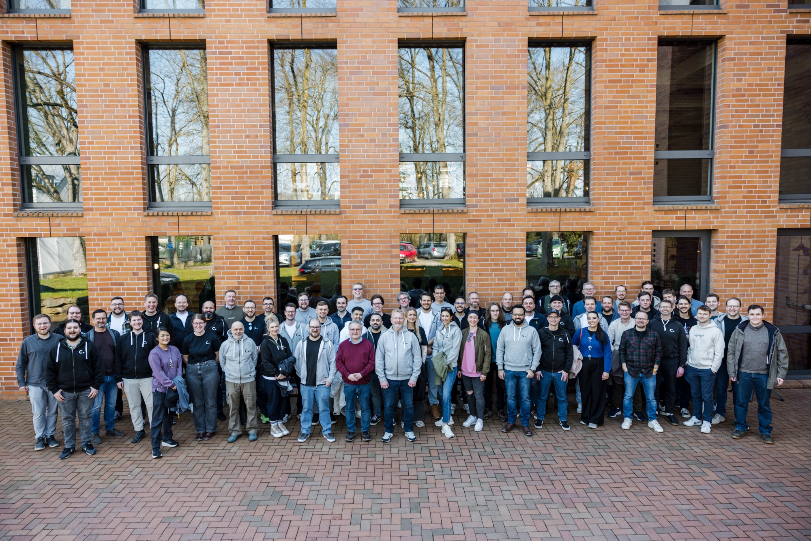
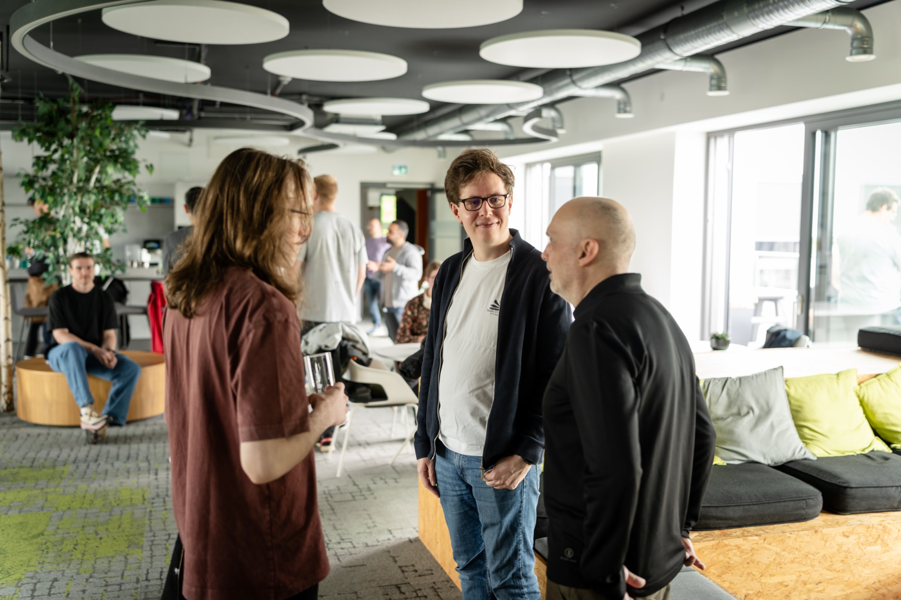
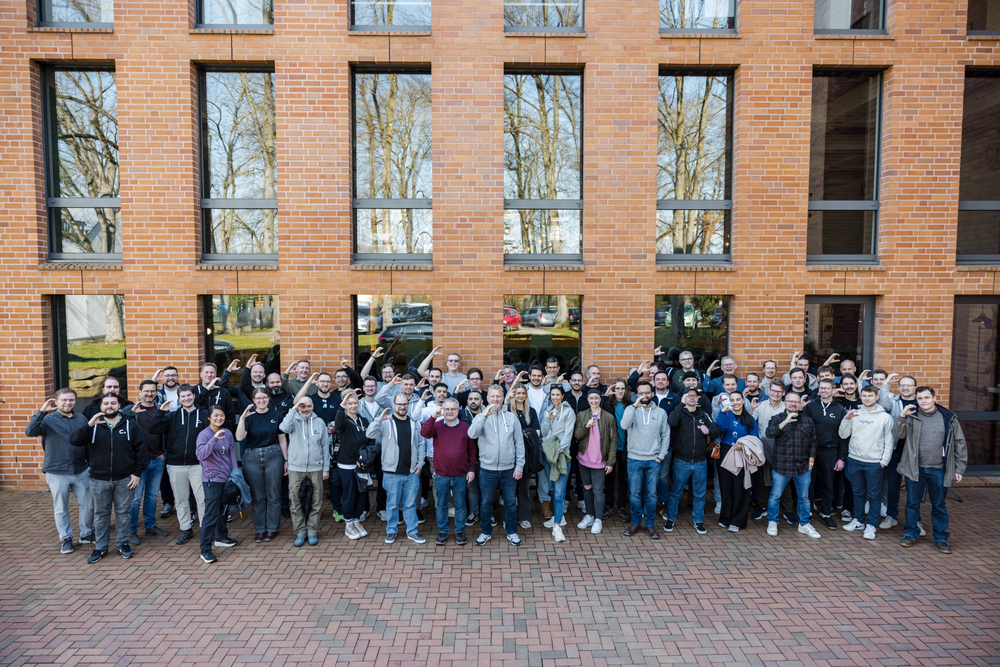
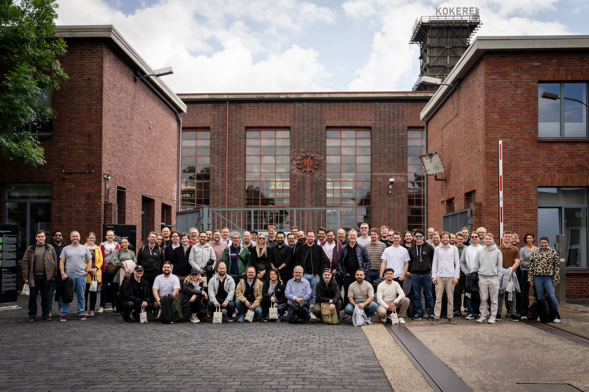
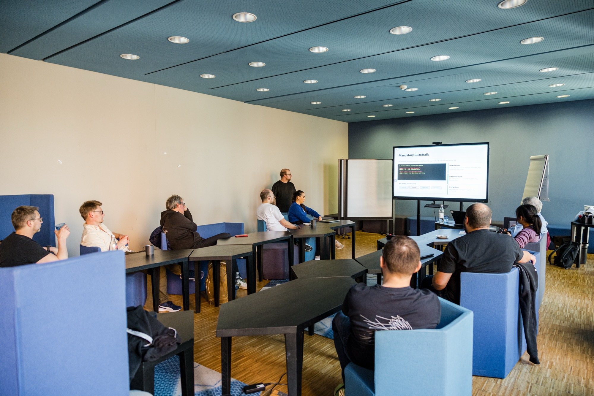
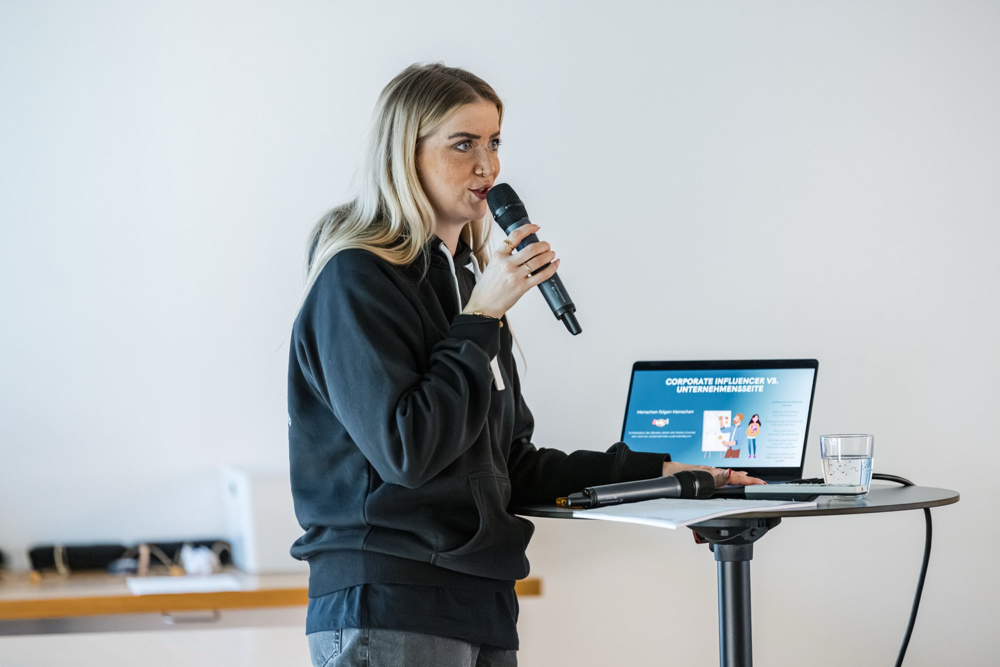
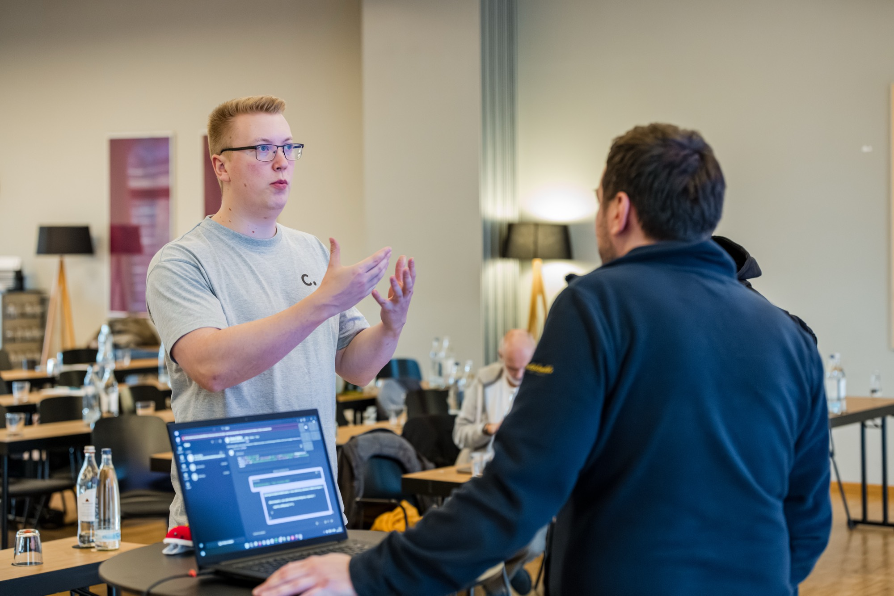
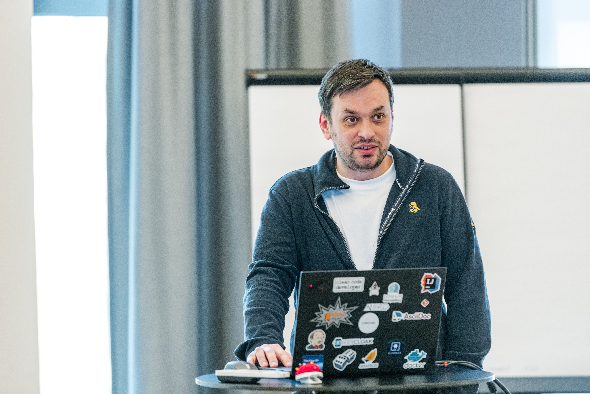
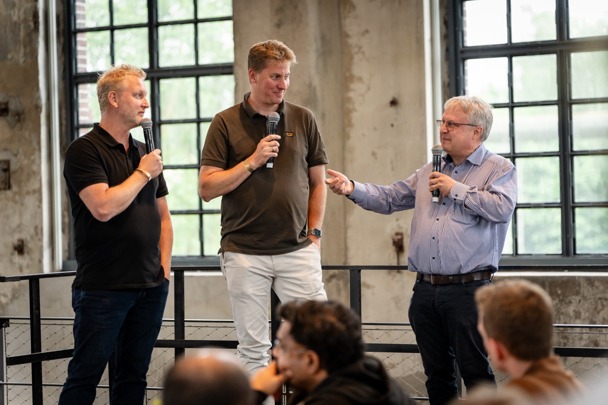

Corporate
Marke mit Haltung
Klare Kommunikation, die vertraut und bewegt, ruhig, präzise, nachhaltig.
Vier Unternehmensbereiche mit eigenem Farbsystem, alle konsistent und stimmig als System.
Marke · Kommunikation · Strategie
Intelligenz · Automatisierung · Wirkung
Präzision · Verlässlichkeit · Qualität
Struktur · Wirkung · Wandel
data-accentDetail- und Stellenseiten gehören oft zu einem Bereich (z. B. die Stelle Java / JEE Developer zu Effektive Software), nutzen aber Komponenten mit co-Default-Akzent. Über data-accent="ki|es|wo" werden die Default-Akzent-Utilities .t-co (Überschriften-Icons, Bullets, Eyebrows) und .body-link auf die Bereichsfarbe umgetönt: Light auf -700 (ki auf -800, da ki-700 die AA-Schwelle für Normaltext reißt), Dark-Override auf -200. Wo das Attribut sitzt: an jedem Container, der einen Bereichsblock aufspannt. Für eine ganze Seite ist das der .ep-page-Root, für einen einzelnen Block der Wrapper um den Block, z. B. das Buchungsformular in einer sonst corporate Seite. Der Selektor ist bewusst nicht an .ep-page gebunden, damit man für so einen Block keine Inline-Farben an die einzelnen Links schreiben muss (die brächen im Dark-Mode). Abgrenzung: Buttons und CTA-Band werden weiterhin per Bereichs-Klasse gesetzt (.btn-es, .btn-es.btn-on-band, background:var(--es-700)); data-accent deckt nur die Text-/Link-Utilities im Inhalt ab. Die Chrome bleibt corporate: Footer-.body-link und die Topnav (.ep-topnav .t-co, z. B. die aktive Sektion) werden per Reset auf co zurückgesetzt, sonst erschiene die aktive Nav-Sektion z. B. auf einer wo-Seite grün statt Petrol, inkonsistent zur Nav aller anderen Seiten. Erprobt auf Unternehmen · Stelle (Java/JEE), Seminar-Landing (wo), am Buchungsformular (ki), an der Event-Anmeldung (es) und am adaptiven Kontaktformular (dynamisch per JS gesetzt).
Eigenständige Bereichs-Text-Utilities: Dieselben Töne gibt es klassenbasiert als .t-co / .t-ki / .t-es / .t-wo (Light -700, ki -800; Dark-Override auf -200/-100) für inline gesetzten Akzenttext wie Eyebrows, Labels oder Kennzahlen. Regel: bereichsfarbigen Text immer über diese Utilities, data-area (Chips/Badges/Pills, CTA-Links via .card-cta-link[data-area]) oder --ki-ink führen, nie als rohes style="color:var(--XX-700/800)" — das bliebe im Dark Mode dunkel-auf-dunkel.
Der Kernwert Gelassenheit entfaltet sich in drei Markenpfeilern (Ruhig, Klar und Energiegeladen) mit je drei charakterisierenden Eigenschaften.
Das Unternehmen erzeugt Gelassenheit.
Auf ruhige, klare und energiegeladene Weise.
Primärsprache ist Deutsch: alle Customer-Pages, Marketing-Texte, UI-Labels, Komponenten-Beispieltexte und Design-System-Dokumentation. Englische Fachbegriffe (z. B. Token-Namen, Komponenten-Klassen, Code-Beispiele) bleiben unverändert; im Fließtext wird der englische Begriff übersetzt oder erläutert. Lokalisierung in andere Sprachen ist explizit nicht vorgesehen, alle Schreib- und Typografie-Regeln gelten ausschließlich für deutschsprachige Texte.
Deutsche Typografie-Konvention „99 … 66“: öffnend unten, schließend oben.
| Zeichen | Unicode | Position |
|---|---|---|
| „ | U+201E | Öffnend, unten (sieht aus wie 99) |
| “ | U+201C | Schließend, oben (sieht aus wie 66) |
Nicht verwenden: ASCII-" (U+0022, gerade), ” (U+201D, „99 oben“) oder englische Konvention “…”. Im Code-Editor ggf. die Auto-Replace-Funktion auf deutsche Quotes umstellen.
Em-Dashes (—, U+2014) und En-Dashes (–, U+2013) in eigenen Copy-Texten vermeiden. Sie wirken im deutschen Lesefluss englisch-zitathaft und schwächen den ruhigen Markenton.
| Statt | Lieber |
|---|---|
| Wir machen Software — und zwar gute. | Wir machen Software, und zwar gute. |
| Drei Bereiche – ein Anspruch. | Drei Bereiche, ein Anspruch. |
| Schau Dir an, wie wir arbeiten — oder buch direkt ein Erstgespräch. | Schau Dir an, wie wir arbeiten, oder buch direkt ein Erstgespräch. |
Ersatz: Komma, Doppelpunkt, Punkt oder Klammern. Der mittige Punkt · (U+00B7) bleibt erlaubt als Trenner in Meta-Listen („Bereich · Lesezeit“).
Warum diese Konventionen? Sie sind unsichtbar, wenn sie stimmen, und stören sofort, wenn sie nicht stimmen. Gerade Anführungszeichen wirken wie unbearbeitet aus einem Code-Editor übernommen; Em-Dashes wirken wie aus dem Englischen importiert. Beides bricht den Eindruck, dass der Text mit Aufmerksamkeit gesetzt wurde, was direkt gegen den Markenwert „Ruhig“ arbeitet.
Nebeneffekt · KI-Detektor. Gerade ASCII-Anführungszeichen und Em-Dashes (—) sind inzwischen die deutlichsten Hinweise darauf, dass ein Text aus einem KI-Assistenten kommt: Sprachmodelle erzeugen sie standardmäßig, weil sie auf englischsprachige Korpora trainiert sind. Wer im deutschen Conciso-Ton schreibt, signalisiert mit der korrekten „…“-Klammer und dem Verzicht auf Em-Dashes implizit „dieser Text wurde mit Aufmerksamkeit gesetzt, nicht roh aus dem Modell übernommen". Das ist kein Verbot von KI-Tools, sondern die handwerkliche Nachbearbeitung, die den Text als Conciso lesbar macht.
Auf der gesamten Webseite spricht Conciso Leserinnen und Leser mit Du an. Diese Entscheidung ist keine Stilfrage, sondern fällt direkt aus dem Markenrad: Wer Gelassenheit erzeugen will, kann nicht in der Distanz des „Sie“ sprechen.
Das Du ist der konsequenteste Weg, die drei Pfeiler in einem einzigen Wort zusammenzubringen, und es bleibt höflich, weil die Tonalität ruhig, klar und ehrlich ist, nicht kumpelhaft.
Vertrauen ohne Distanz. Das Du nimmt das Förmliche heraus, ohne die Verlässlichkeit zu verlieren.
Direktheit ohne Floskeln. Wir sagen, was Sache ist, kürzer, präziser, ohne Konjunktiv-Wolken.
Persönlichkeit ohne Lautstärke. Das Du holt die Leser:innen ins Gespräch, nicht ins Auditorium.
Das Du ist die Regel für alle öffentlichen und redaktionellen Texte. In der direkten Kommunikation zwischen Dienstleister und Kunde kann die Hierarchie ein Sie verlangen. Dann geht Angemessenheit vor Marke: Im Zweifel lieber das Sie wählen, als die Anrede zu erzwingen. Das Du folgt, sobald das Gegenüber es anbietet oder selbst nutzt.
Herrscht Unsicherheit über die passende Anrede, tendiert Conciso zum Sie. Ein zu früh gesetztes Du kann distanzlos wirken, gerade im schriftlichen Erstkontakt.
Bei Veranstaltungen, zu denen vorrangig Leadership- und Entscheider:innen-Positionen erwartet werden, erfolgt die Ansprache im Sie, in der Einladung wie vor Ort.
Das Du wird konsequent großgeschrieben (Du, Dir, Dein, Deinem). Conciso behandelt das Du wie eine direkte Anrede in einem persönlichen Gespräch, nicht als Pronomen unter vielen. Das ist eine Stilentscheidung, kein Tippfehler.
Wortmarke · drei Varianten · für jeden Hintergrund die richtige Wahl.
Das Logo ist die primäre Markenkennung. Es wird stets als Vektor (SVG) verwendet, nie verzerrt oder eingefärbt. Drei Varianten decken alle Anwendungskontexte ab: voll, hell, dunkel, die Wahl richtet sich nach Hintergrund und Lesbarkeit.
Jede Variante hat einen eindeutigen Anwendungsfall. Im Design System sind alle drei unter images/logo-conciso{,-light,-dark}.svg abgelegt.
Die Höhe ist die maßgebliche Größenangabe, die Breite ergibt sich proportional aus dem Vektor (Verhältnis ≈ 7,6 : 1). Mindesthöhe nicht unterschreiten, sonst leidet die Lesbarkeit der „o.“-Form.
| Kontext | Höhe | Hinweis |
|---|---|---|
| Topnav (Standard) | 24 px | Default-Variante, schaltet im Dark Mode auf Light um |
| Footer | 32 px | Light-Variante, da Footer-Hintergrund --n-700 immer dunkel ist |
| Hero / Marketing-Header | 40–48 px | Wenn das Logo selbst die Aufmerksamkeit tragen soll |
| Mobile / kompakte Layouts | 20 px | Mindestgröße digital, darunter wird der Punkt schwer erkennbar |
≥ 12 mm | Mindestgröße im Druck, Punkt muss sauber drucken |
Um das Logo herum bleibt mindestens die Höhe des „C“ als freier Raum, keine konkurrierenden Elemente, kein Beschnitt durch andere Layout-Komponenten.
Die Wahl der Variante richtet sich nach Hintergrund und Kontext. Im Zweifel die Default-Variante auf hellem, neutralem Untergrund verwenden.
| Hintergrund | Variante | Begründung |
|---|---|---|
| Weiß / hell-neutral | Default | Volle Brand-Identität mit teal-Akzent |
| Dunkel (≥ 60 % Schwarzanteil) | Light | Vollständig weiß für maximale Lesbarkeit |
| Bereichsfarbe (--co/ki/es/wo-500) | Light oder Dark | Default vermeiden, der teal-Punkt konkurriert mit der Bereichsfarbe |
| Foto / unruhiger Hintergrund | Light auf Scrim | Halbtransparente dunkle Fläche unter Logo legen, dann Light verwenden |
| Druck monochrom · Stempel · Embossing | Dark | Kein Akzent verfügbar, komplett einfarbig |
| Dark-Mode-Interfaces | Light (auto-swap) | Wechsel via [data-theme="dark"]-Selektor |
| Aspekt | Regel |
|---|---|
| Alt-Text | Inhaltlich tragend (z. B. Footer-Brand): alt="Conciso" · Dekorativ daneben (z. B. Topnav-Wortmarke neben Text-Logo): alt="" mit aria-hidden="true" |
| Kontrast | Mindestens 3:1 zwischen Logo und Hintergrund (WCAG 1.4.11, Non-Text Contrast). Default auf weiß: 11.7:1 ✓ · Light auf --n-700: 15.3:1 ✓ |
| Theme-Wechsel | Logo-Swap via CSS und [data-theme="dark"]-Selektor, funktioniert ohne JS und respektiert Nutzer-Präferenz |
| Skalierung | SVG ist auflösungsunabhängig, bleibt scharf bei beliebigem Browser-Zoom (WCAG 1.4.4) |
--n-700 oder Hero-Gradients.logo-themed-default + .logo-themed-light, schaltet automatisch via [data-theme]--co-50020 px Höhe digital oder 12 mm im Druck, der Punkt zerfälltFotografie · Illustration · Vier Brand Areas · abgeleitet aus dem Markenrad.
Bilder kommunizieren schneller als Worte. Die Bildsprache von Conciso übersetzt den Kernwert Gelassenheit in visuelle Reize: ruhige Kompositionen, klare Motive und echte Energie statt inszenierter Hochglanz-Ästhetik.
Jeder der drei Markenpfeiler übersetzt sich direkt in visuelle Entscheidungen, von der Wahl des Motivs bis zur Bildbearbeitung.
| Markenpfeiler | Eigenschaften | Bildsprache-Übersetzung |
|---|---|---|
| Ruhig | Verlässlich · Selbstsicher · Kompetent | Ausgewogene Komposition · großzügiger Weißraum · natürliches, diffuses Licht ohne harte Schatten · keine überfüllten Bildausschnitte |
| Klar | Aufmerksam · Präzise · Pragmatisch | Scharfer Motivfokus · aufgeräumte Hintergründe · ein dominantes Motiv pro Bild · kein dekoratives Beiwerk ohne Zweck |
| Energiegeladen | Kraftvoll · Agil · Leidenschaftlich | Echte Momente statt Pose · Menschen in echter Konzentration oder Zusammenarbeit · Bewegung und Dynamik, ohne Unruhe zu erzeugen |
Jede Brand Area hat einen eigenen Bildkontext, die gemeinsamen Stilprinzipien gelten übergreifend.
Menschen im Gespräch, beim Beratungsgespräch oder in ruhiger Konzentration · neutrale, helle Büroumgebungen · Handshakes und partnerschaftliche Gesten · Blickkontakt und Offenheit
Nahaufnahmen von Screens und Interfaces · Menschen die mit KI-Tools interagieren · abstrakte Datenmuster als visuelle Akzente · immer menschlicher Fokus, Technologie ist Werkzeug, nicht Hauptdarsteller
Diverse Teams in echter Zusammenarbeit · Workshops, Retrospektiven, Whiteboard-Momente · echte Emotionen wie Lachen und Konzentration · keine uniformen Gruppenfotos ohne Leben
Nahaufnahmen von Code und Interfaces · Entwickler in tiefer Konzentration · saubere Screens ohne clutter · Terminal, IDE und Architekturdiagramme als visuelle Metaphern
Natürliches, weiches Licht · helle, leicht entsättigte Töne · kein Filmdrama, kein HDR · Helligkeit leicht anheben, Kontrast etwas reduzieren
Drittel-Regel und goldener Schnitt · Freiflächen für Text-Overlays einplanen · ein dominantes Motiv, ruhige Umgebung · kein Informations-Overload im Bild
Authentische Personen aus echten Arbeitskontexten · diverse Repräsentation · Blickkontakt oder echte Konzentration · keine Stockphoto-Posen
Konkrete Anwendung der Stilprinzipien: echte Arbeitsmomente, weiches Licht, authentische Personen, keine Stockphoto-Inszenierung.
Frameworks entstehen am Whiteboard, nicht in PowerPoint, echte Konzentration im Arbeitskontext.
Diverses Team in echtem Austausch, Lachen und Zuhören statt gestelltem Gruppenfoto.
Beratung auf Augenhöhe, direkter Blickkontakt, ruhiger Hintergrund.
Pair Programming mit echter Freude, Konzentration ohne Pose.
Workshop-Moment am Flipchart, Ideen werden ausgehandelt, nicht verkündet.
Illustrationen werden ergänzend eingesetzt, für abstrakte Konzepte, die sich nicht fotografisch abbilden lassen: KI-Prozesse, Systemarchitektur, Organisationsmodelle.
Klare, gleichmäßige Linien · keine Füllflächen ohne Bedeutung · Strichstärke konsistent
Vereinfachte Formen statt realistischer Darstellung · keine Gradients innerhalb von Figuren
Ausschließlich Design-System-Tokens · --co-500, --ki-500 etc. · keine Freihandfarben
Leere Fläche ist gestalterisches Element · nicht jeder Pixel muss belegt sein · Illustration atmen lassen
Kontext entscheidet über das richtige Bildformat: Hero-Bereiche brauchen Freiräume für Text, Teaser-Cards arbeiten mit Ausschnitten, und Illustrationen kommen dort zum Einsatz, wo Fotos zu konkret wären.
| Kontext | Empfehlung |
|---|---|
| Hero-Bereich | Querformat · heller, ruhiger Hintergrund im Bild · untere Bildhälfte frei für Text-Overlay · Foto darf nicht mit der Headline konkurrieren |
| Card / Teaser | 16:9 oder 3:2 · Motiv mittig · kein Text im Bild selbst · Brand-Area-Farbe als Eyebrow über dem Bild, nicht als Tint im Bild |
| Wissensartikel | Illustration für abstrakte Prozesse · Foto für Praxisbeispiele · Bildunterschrift immer vorhanden · Bilder nie als einziger Informationsträger |
| Testimonial | Porträt im quadratischen oder runden Ausschnitt · Blick zur Kamera oder leicht seitlich · neutraler, heller Hintergrund · kein Hintergrund-Clutter |
| Aspekt | Regel |
|---|---|
| Alt-Text | Jedes inhaltstragende Bild benötigt einen beschreibenden alt-Text, er beschreibt was zu sehen ist, nicht was das Bild bedeutet; dekorative Bilder erhalten alt="" |
| Text-Overlay | Text auf Foto-Hintergründen ≥ 4,5:1 einhalten (WCAG 1.4.3). Gerechnet wird gegen die hellste Stelle unter dem Text, nicht gegen den Bilddurchschnitt: Fotos haben ausgebrannte Bereiche, und dort entscheidet sich die Lesbarkeit. Weiße Schrift braucht dafür einen Scrim von mindestens rgba(0,0,0,.60); .45 reicht nicht und trägt über einer weißen Bildstelle nur rund 3:1. Bei einem Verlauf gilt der Wert an der Stelle, an der der Text sitzt, nicht am dichten Ende: das erste Kind einer Caption liegt im schwächsten Abschnitt. text-shadow hilft optisch, zählt für WCAG nicht. Referenz: .hero-image-caption |
| Nicht allein | Informationen nie ausschließlich im Bild transportieren, der gleiche Inhalt muss als Text verfügbar sein (WCAG 1.1.1) |
| Bewegung | Animierte Illustrationen oder Hintergrund-Videos mit prefers-reduced-motion pausieren, Nutzerinnen mit Gleichgewichtsstörungen oder Epilepsie sind auf diese Reduktion angewiesen |
alt-Text oder mit generischem „Foto“, Screenreader-Nutzende erhalten keinen MehrwertVier Bereichspaletten mit Tonal-Skala (50 bis 900) + Text Brand.
Kontrast-Schwellen (auf Weiß): AA ≥ 4,5:1, Fließtext · AA Large ≥ 3,0:1, großer Text (≥ 24 px) & UI-Komponenten · AAA ≥ 7,0:1, erhöhte Barrierefreiheit
| Stufe | Verwendungszweck |
|---|---|
-50 | Tonal Overlay, Chip-Hintergrund, Badge-Hintergrund, Sub-Strip-Background, sehr helle Fläche |
-100 – -300 | Dezente UI-Akzente, Media-Hintergründe in Cards, Hero-Gradient, Borders |
-500 | Brand-Akzent: Hero-Gradient, dekorative Flächen, aktive Marker, Icon. Kein Button-Background, kein Text auf Weiß (Co/KI/WO unterschreiten den Kontrast) |
-700 | Standard für farbigen Text auf Weiß (Co/ES) und Filled-Button-Background (.btn-co, .btn-es, .btn-wo). Erfüllt WCAG AA (≥ 4,5:1). Ausnahme KI: KI-700 erreicht nur 4.4:1 → für Text und Filled-Button -800 nehmen (.btn-ki nutzt das bereits). |
-800 – -900 | Dunkle Kontexte, Text auf Bereichsfarbe (-500), Hover-Zustände, Page-End-CTA-Band-Background, KI-Text/-Button (siehe Zeile oben) |
| Token | Wann einsetzen |
|---|---|
--c-success | Erfolgreiche Aktionen, OK-Snackbar, Bestätigungs-Badge |
--c-warning | Hinweise, Beta-Zustände, nicht-kritische Warnungen |
--c-error | Fehler-Snackbar, Validierungsfehler im Formular, Deprecated-Badge |
--tx-primary | Fließtext, Headlines, UI-Labels, #333E48 (10.4:1, AAA) |
--tx-secondary | Sekundärer Text: Lead, Sub-Titel, Captions, var(--n-500) #4A6565 (6.3:1, AA) |
--tx-muted | Inhaltlich-leise Texte: Eyebrow, Meta, Counter, #5E7676 (4.85:1, AA); abgedunkelt von --n-400, das selbst nur 3,9:1 erreicht und daher nur für Nicht-Text gilt |
--ki-ink | Farbiger ki-Text/Icons (Preise, Häkchen, Akzentlabels), die im Dark-Mode lesbar bleiben müssen: flippt Light ki-800 / Dark ki-200. Statt rohem ki-800, das auf dunklem Grund durchfällt. Area-getönte Icon-Kacheln (.ep-card-icon / .ep-feature-icon) brauchen dafür data-area, der Glyph wird im Dark auf -100 gehoben |
Text-Tokens vs. dekorative Neutrals. --tx-muted ist für inhaltlich-leise, aber AA-konforme Texte gedacht (Eyebrow, Counter, Meta-Angaben). Rein dekorative Elemente (Trenner, Ornament, Disabled-Hintergrund) nutzen direkt das Neutral-Token var(--n-300) oder heller, diese sind absichtlich unter AA, weil sie keinen Textinhalt tragen.
Faustregel: Wenn ein Screenreader den Text vorlesen soll, mindestens --tx-muted verwenden. Wenn das Element rein visuell ist und Screenreader es ignorieren (aria-hidden, dekorative Border), darf es heller sein.
Farbiger Text/Icon auf einer hellen -100-Kachel (Chip, Häkchen-Kreis, Label-Pille): fest auf --XX-800 setzen, nicht über .t-* / --XX-ink. Diese -100-Kacheln flippen im Dark nicht mit (sie bleiben hell, damit sie auf dem dunklen Grund sichtbar bleiben); .t-*/ink kippt aber auf den hellen -200-Ton → hell-auf-hell, unsichtbar. --XX-800 ist in beiden Modi stabil und sitzt auf der hellen Kachel komfortabel über AA. Das ist das Spiegelbild der Bereichstext-Regel weiter oben: auf der theme-reaktiven Seiten-/Surface-Fläche gilt das Umgekehrte (.t-*/ink, weil rohes -800 dort dunkel-auf-dunkel würde). Entscheidend ist immer, ob der Hintergrund mitflippt.
Bereichston-Flächen im Dark (--XX-50): gedämpfter Bereichston, nicht near-black. In Light ist --XX-50 ein zarter Bereichstint; der reine Flip wäre im Dark fast schwarz, hart und ohne Hue, das Tile sackt als schwarzes Loch ein. Stattdessen ein getönter Ton, der die Bereichsfarbe behält.
Im Dark zerfällt --XX-50 in zwei Token, weil ein Wert zwei gegensätzliche Aufgaben nicht mehr trägt. Ein großes Band (Hero, CTA-Sektion) muss dunkler bleiben als die Karten darauf, sonst kehrt sich die Ebenen-Ordnung um. Eine kleine Füllung (Badge, Pill, Icon-Kachel) muss heller sein als ihr Grund, sonst liest sie nicht mehr als Fläche, sondern nur noch als farbiger Text. Bei einer Basisfläche von 17,5:1 gegen Weiß und reinem Schwarz bei 21:1 bleibt nach unten nur Faktor 1,20, der Spielraum reicht für beides zusammen nicht.
--XX-50 ist die kleine Füllung: 9,8:1 gegen Weiß, also 1,78:1 gegen die Seite und 1,32:1 gegen Karten. --XX-band ist die Sektionsfläche: 16,5:1, damit knapp über der Seite (1,06:1, die Trennung trägt dort der Farbton) und weiterhin dunkler als die Karten, die mit 1,27:1 darauf sichtbar bleiben. Im Light sind beide identisch, dort gibt es den Konflikt nicht.
Zwei Bedingungen bleiben: (1) die Sättigung liegt bei 0,60 und damit unter 0,70, weil kräftig gesättigte Farbe auf großen dunklen Flächen optisch „vibriert"; (2) die hellen -100/-200-Glyphen und Badge-Texte darauf müssen AA halten. Nach oben ist damit auch die Grenze gesetzt: eine noch hellere Füllung würde den Rosé-Badge-Text unter 4,5:1 drücken.
Hintergrundflächen & Rhythmus. Aufeinanderfolgende Sektionen wechseln im Standard zwischen Weiß (--bg-surface) und ruhigem Grau (--n-50). Das trennt die Abschnitte sichtbar, ohne Farbe einzubringen. Kein hartes #fff verwenden, das schaltet im Dark Mode nicht mit, immer das Token --bg-surface.
Marken-Tönung sparsam. Eine Bereichsfläche (-50, z. B. --ki-50) wirkt als Akzent, etwa als Aktions-Brücke direkt unter dem Hero, die dunkle -800 als CTA-Band am Seitenende bildet die Gegen-Klammer. Mehrere große getönte Bänder hintereinander lassen die Seite „bunt" wirken und schwächen die Bereichsfarbe dort, wo sie Bedeutung trägt (Kennzahlen, Akzentlinien). Faustregel: Tönung ist Akzent, nicht Standard-Grund.
Dark: nur zwei Flächen-Stufen. Statt Weiß/Grau gibt es im Dark nur --bg-page (Basis, 17,5:1 gegen Weiß) und das hellere --bg-surface (13,0:1); die Stufe dazwischen beträgt 1,35:1. Dazu kommt --bg-surface-hover, das interaktive Flächen im Hover eine Stufe anhebt: im Dark tragen die schwarzen Schatten auf dieser Basis weniger, die Tiefe kommt dort aus der Fläche. Das ist ein Zustand, keine dritte statische Stufe. Der Rhythmus wird nachgebildet, indem n-50-Sektionen auf --bg-surface gehoben werden. Ein Element hebt sich nur ab, wenn sein Grund eine andere Stufe hat. Kartentragende n-50-Sektionen sind daher ein Sonderfall: Würde die Sektion gehoben, träfe sie auf die ebenfalls bg-surface-Cards → gleicher Ton, die Cards verschwinden. Solche Sektionen mit .ep-section-cards markieren: sie bleiben im Dark auf bg-page, sodass die bg-surface-Cards die hellere Stufe bilden und sich abheben — genau wie im Light (graue Sektion, weiße Cards). Section runter statt Cards hoch, weil keine dritte, hellere Stufe existiert.
Helle -100-Ränder auf getönten Flächen. Ein 1px solid var(--XX-100)-Rahmen ist im Light auf der -50-Fläche ein zarter gleichfarbiger Whisper. -100 flippt aber nicht mit → im Dark wird daraus eine grelle helle Linie (7–11:1) auf der dunklen Tönung. Trennlinien und Rahmen getönter Flächen im Dark auf den neutralen var(--bd) heben (Header-Trennlinien, Preisbox-Rahmen). Dieselbe Logik wie beim farbigen Text auf -100-Kacheln oben: entscheidend ist, ob der Hintergrund mitflippt.
-700 für farbigen Text auf Weiß (Co · ES · WO erfüllen damit WCAG AA). Ausnahme KI: -700 erreicht nur 4.4:1, für Text und Filled-Button auf Weiß -800 verwenden-50 für Hintergründe und Tonal Overlays, sie wirkt, ohne zu dominieren--c-success, --c-warning, --c-error konsequent für Status einsetzen--tx-primary, --tx-secondary) für Fließtext, Bereichsfarben nur für Akzente-500 als Textfarbe auf Weiß: Co-500 und KI-500 unterschreiten AA komplett, WO-500 erreicht nur AA Large (3.3:1). Nur ES-500 (5.7:1) und Rosé-500 (5.3:1) erfüllen AA--c-success nicht für dekorative grüne Elemente14 Tokens in 5 Kategorien · Libre Baskerville (Display/Headline) · Montserrat (Title/Body/Label) · rem-Werte basieren auf 16 px Browser-Basis. Minimum-Font-Size systemweit: 12 px — kleinere Größen werden bewusst vermieden, damit Inhalte unter allen Bedingungen (Bildschirm · Mobile · Print) gut lesbar bleiben.
| Position | Bedeutung |
|---|---|
Display Large | Name des Typografie-Tokens. Konvention: Kategorie + Größe (Large · Medium · Small). |
Libre Baskerville | Font-Family. Display- und Headline-Tokens nutzen Libre Baskerville (Serif), Title- / Body- / Label-Tokens nutzen Montserrat (Sans). |
57px / 64px | Font-Size / Line-Height in Pixel. Folgt der CSS-Shorthand-Syntax font-size/line-height. |
400 | Font-Weight numerisch: 400 = Regular · 500 = Medium · 700 = Bold. |
UC | Optional, nur bei einigen Label-Tokens: Token ist als Uppercase gedacht, zusätzlich text-transform:uppercase + Letter-Spacing setzen. |
3.5625rem / 4rem | rem-Äquivalente derselben Font-Size / Line-Height, basierend auf 16 px Browser-Basis. Für fluide, zoom-feste Layouts. |
--ty-headline-md | CSS-Variablen-Name, mit dem die Zeile direkt verwendbar ist: font: var(--ty-headline-md);. Konvention: Display-Tokens für die größten Serifen-Headlines (Hero, ep-Section-Titel), Headline für mittlere Sektions-Überschriften, Title für kompakte Sans-Headlines (z. B. Card-Titel). |
Libre Baskerville ist eine klassische Serifenschrift mit aktivierten Standard-Ligaturen. Eine Ligatur ist ein typografisches Zeichen, das zwei oder mehr Buchstaben zu einem fein abgestimmten Glyph zusammenfasst. Das ist gewollt, ein Qualitätsmerkmal hochwertiger Serifenschriften und kein Fehler im Design System.
| Frage | Antwort |
|---|---|
| Warum macht Libre Baskerville das? | Das kleine f hat in klassischen Serifenschriften einen weit nach rechts überstehenden Bogen. Stehen zwei f nebeneinander, kollidieren die Bögen, und auch das f mit dem Punkt des i. Die Ligatur löst diese Kollision durch ein speziell gezeichnetes Zusammen-Zeichen. |
| Ist das ein Fehler im Font? | Nein. Ligaturen gehören seit dem Buchdruck zum professionellen Schriftsatz und sind in praktisch allen hochwertigen Serifenschriften enthalten, Times, Garamond, Caslon, Baskerville. Sie werden vom Browser über das OpenType-Feature liga automatisch angewendet. |
| Sollten wir das abschalten? | Nein. Ohne Ligaturen wirkt das Schriftbild grobschlächtig und „selbst gesetzt“. Die verbundenen Buchstaben sind ein Markenzeichen guter Typografie, sie machen Libre Baskerville als Serifenschrift wertig und klassisch. |
| Ist die Lesbarkeit beeinträchtigt? | Im Gegenteil: Ligaturen sind erfunden worden, um die Lesbarkeit zu verbessern. Sie verhindern visuelle Brüche und führen das Auge ruhiger über das Wort. |
| Wo passiert das in unserem System? | Nur in Libre Baskerville (Display & Headline), also bei Hero-Überschriften, Seitentiteln und Pull Quotes. Montserrat (UI & Fließtext) ist eine Grotesk und nutzt keine vergleichbaren Ligaturen. |
DisplayHero Texter · ep-Seiten · große KampagnentitelHeadlineSektions-Überschriften · AbschnittstitelTitleTitle Small für Karten-Titel und Komponenten-Header (Title Large entfallen, Logo hat eigene Metriken)BodyFließtext · Card-Beschreibungen · Meta-Daten · CaptionsLabelButtons · Badges · UI-Beschriftungen · Eyebrows (UC-Variante)| Aspekt | Regel |
|---|---|
| Hierarchie | Überschriften-Ebenen nie überspringen (h1→h2→h3), Screenreader navigieren anhand der Heading-Struktur |
| rem statt px | Alle Typo-Tokens sind rem-basiert (1rem = 16px), damit sie die Browser-Schriftgröße des Nutzers respektieren; px ignoriert sie. Wichtig für Sehschwäche und Zoom-Einstellungen (WCAG 1.4.4) |
| Zeilenhöhe | Body-Text mindestens line-height: 1.5 (WCAG 1.4.8), erleichtert das Lesen bei Dyslexie und Sehschwäche |
| Nicht nur Stil | Bedeutung nie ausschließlich durch Schriftschnitt (fett, kursiv) vermitteln, der Kontext muss auch ohne Formatierung erkennbar sein |
8pt-System · 12-Spalten Grid · 24px Gutter.
--s14px · Micro-Gap--s28px · Tight Padding--s416px · Component Padding--s624px · Card Padding / Gutter--s832px · Section Gap S--s1664px · Hero RhythmSpaltenbreiten werden als Vielfache von col-N (1 bis 12) angegeben. Bei ≤ 768 px bricht das Grid auf eine Spalte um; die col-N-Spannweiten werden dabei automatisch auf einen Track zurückgesetzt, sodass auch ungleiche Splits (z. B. col-7/col-5) gleich breit stapeln. Einzelne Grids weichen per Marker-Attribut bewusst ab und bleiben mehrspaltig (data-team-tiles 2×2, data-benefits/data-event-meta 2×2 auf Tablet · 1-spaltig ≤ 520 px, data-team-roster 2–3-spaltig).
--s1Icon-Gap · enge Abstände zwischen direkt verwandten Elementen
--s2Badge-Padding · Icon-Text-Abstand in Buttons und Tags
--s4Internes Komponenten-Padding · Abstände zwischen Karten-Elementen
--s6Card-Padding · Grid-Gutter · Abstände zwischen Komponenten
--s8Abstand zwischen zusammengehörigen Sektionsblöcken
--s10Seiten-Content-Padding oben/unten
--s16Hero-Bereiche · großer vertikaler Rhythmus
| Aspekt | Regel |
|---|---|
| Touch-Target | Interaktive Elemente mindestens 44×44 px groß halten (WCAG 2.5.5), Spacing-Tokens helfen, ausreichend Padding zu setzen |
| Aktionsdichte | Mindestens --s2 (8 px) Abstand zwischen benachbarten Touch-Targets, verhindert versehentliche Aktivierung (WCAG 2.5.8) |
| Focus-Ring | Kein overflow: hidden auf fokussierbaren Elementen, der Focus-Ring (box-shadow) wird sonst abgeschnitten und ist nicht mehr sichtbar |
Alle Spacing-Werte (padding, margin, gap, top/right/bottom/left) nutzen ausschließlich die Token aus der 8pt-Skala (--s1 bis --s16). Hardcoded-Pixel-Werte sind ein Code-Smell, sie unterbrechen den 8pt-Rhythmus und erschweren spätere Theme-Anpassungen. Bei Code-Review: jeder Pixel-Wert ohne Token-Referenz ist erklärungsbedürftig.
Erlaubte Ausnahmen (jede mit CSS-Kommentar im Code begründet):
| Ausnahme | Wert | Grund |
|---|---|---|
| Touch-Targets | 44 px (min) | WCAG 2.5.5 / 2.5.8: interaktive Elemente brauchen mindestens 44 × 44 px Tap-Area. Im Spacing-Scale gibt es kein 44-px-Token. Form-Inputs, Buttons, Icon-Buttons setzen min-height:44px hartcodiert. |
| Hairlines & Borders | 1 px, 2 px, 4 px | Border-Width hat eigene Logik (nicht 8pt). Conciso nutzt --bd (1 px) und --bd-strong als Tokens, aber border-top:4px solid für Card-Bereichs-Akzent ist hartcodiert akzeptabel. |
| Icon-Größen | 16, 24, 32, 48 px | Icons folgen eigenem Sizing-System (siehe Icon-Größen). Width/Height von SVG-Icons wird hartcodiert gesetzt, das ist kein Spacing. |
| Optische Korrekturen | 2 px, 3 px | Manchmal sitzt ein Element 1–3 px „daneben" und braucht eine Korrektur (z. B. margin-top:2px auf einem SVG, um die Baseline mit dem Nebentext zu treffen). Diese Mikro-Shifts liegen unter der Skala. Pflicht: CSS-Kommentar warum. |
| Container-Max-Widths | z. B. 600 px, 720 px, 1280 px | Lesbarkeits-Breiten (Article-Lead 600, Article-Body 720, Layout-Grid 1280) folgen Reading-Optimum-Regeln (45–75 Zeichen pro Zeile), nicht dem 8pt-Raster. |
Faustregel: Wenn der Wert visuelle Rhythmik betrifft (Abstand zwischen Elementen, Innen-Padding, Sektion-Gap) → Token-Pflicht. Wenn der Wert physische Größe betrifft (Border, Icon, Touch-Target, Container-Breite) → eigene Logik, Hardcoded-Wert mit Kommentar OK.
--s1 bis --s16--s6 als Standard-Card-Padding, konsistent über alle Komponenten und Brand Areas--s16 gezielt für Hero-Bereiche und große visuelle Zäsuren zwischen Sektionenmargin:13px), bricht den visuellen Rhythmus des 8pt-Rasters--s16 für normale Komponentenabstände, zu groß, zerstört die visuelle Dichte--s4, die andere --s6)letter-spacing zuständigVerbindliche Breakpoints, fluide Typografie und das dokumentierte Verhalten pro Komponente. Diese Seite ist die Übergabe-Spezifikation für die Implementierung, nicht nur eine Beschreibung des Mockups.
Vor der Umsetzung lesen: Das Mockup nutzt ausschließlich viewport-basierte @media-Queries (keine Container-Queries) und blendet die Doku-Sidebar unter 1024 px aus, damit die Beispielseiten die echte Fensterbreite einnehmen. Die Bruchpunkt-Werte und Verhaltensregeln unten sind verbindlich, die technische Umsetzung (Media- vs. Container-Query) darf auf der echten Site abweichen. Details unter Umsetzung auf der echten Site.
Drei Stufen, definiert über die Viewport-Breite. Der Hauptbruch liegt bei 768 px (Mobile ↔ Desktop-Grid). Ein zweiter, feinerer Bruch bei 520 px steuert Layouts, die auf kleinen Phones weiter herunterbrechen müssen. Alle Regeln sind max-width-basiert (Desktop-first), außer der fix-spaltigen Tablet-Zwischenstufe.
| Stufe | Bereich | Verhalten |
|---|---|---|
| Phone | ≤ 520 px | Engste Stufe. Hero-CTAs stapeln full-width, mehrspaltige Sonderraster (Roster, Benefits) brechen auf ihre kleinste Spaltenzahl herunter. |
| Mobile | ≤ 768 px | Hauptbruch. .layout-grid kollabiert auf 1 Spalte, Section-Innenabstand schrumpft, Topnav wird zum Hamburger (technisch ab ≤ 760 px, s. u.). |
| Tablet | 769 bis 1024 px | Zwischenstufe nur für fix-spaltige Layouts (explizite min-width:769px-Regel). auto-fit-Grids regeln diesen Bereich selbst und brauchen keine eigene Regel. |
| Desktop | > 1024 px | Referenzzustand. Alle Fixwerte (Grid-Spannweiten, Typo-Maxima, Paddings) gelten hier unverändert. |
Faustregel für neue Layouts: Ein auto-fit/auto-fill-Grid (z. B. .ep-cards, .card-stat-strip) braucht keine Tablet-Regel, es füllt Spalten selbst auf. Ein Layout mit fixer Spaltenzahl (Footer, Benefits, Roster) braucht eine explizite Tablet-Regel (769 bis 1024 px) zwischen Desktop und Mobile, sonst springt es hart von n-spaltig auf einspaltig.
Die vier nicht offensichtlichen Entscheidungen. Ohne diese Begründungen wirken die Werte willkürlich und werden beim Refactoring erfahrungsgemäß „geglättet", obwohl sie bewusst so liegen.
| Entscheidung | Begründung |
|---|---|
Hero-CTAs stapeln erst bei ≤ 520 px, nicht schon bei 768 px | Auf Phablet und kleinem Tablet (521 bis 768 px) liefen full-width-Buttons breiter als der gekappte Intro-Text und wirkten überdehnt. Dort behalten sie natürliche Breite und dürfen umbrechen. Erst am echten Phone werden sie full-width gestapelt. |
auto-fit-Grids ohne Tablet-Regel, fix-spaltige Grids mit | auto-fit verteilt Spalten anhand einer minmax()-Mindestbreite selbst, eine feste Tablet-Regel wäre redundant und würde kollidieren. Fix-spaltige Raster (col-N) haben diese Automatik nicht und brauchen die Zwischenstufe. |
Hamburger ab ≤ 760 px, nicht 768 px | Bewusst 8 px unter dem Grid-Bruch, damit der Navigations-Umbau nicht exakt auf derselben Breite wie das Grid-Reflow passiert. Trennt die beiden Umbrüche optisch und vermeidet ein gleichzeitiges „Springen" von Nav und Inhalt. |
Doku-Sidebar aus ab ≤ 1024 px | Reine Mockup-Krücke: Die feste 252-px-Sidebar würde die Beispielseiten in eine Restspalte quetschen, wodurch deren viewport-@media-Queries nicht mehr zur tatsächlichen .ep-page-Breite passen. Ausblenden macht die Geräte-Vorschau in den DevTools erst wahrheitsgetreu. Für die echte Site irrelevant. |
Alle Headline- und Display-Tokens skalieren fluid per clamp(min, preferred, max). Das Maximum entspricht dem bisherigen Desktop-Fixwert (Desktop unverändert), das Minimum greift am Phone. Die Zeilenhöhe ist eine unitless Ratio (skaliert mit), nie ein Fixwert und nie unter 1. Alle Minima liegen bei ≥ 20 px (Font-Size-Minimum). Body- und Label-Tokens sind bewusst nicht fluid, sie haben feste Größen.
| Token | Min (Phone) | Max (Desktop) | Ratio |
|---|---|---|---|
--ty-headline-xs | 20 px | 22 px | 1.35 |
--ty-headline-sm | 21 px | 24 px | 1.33 |
--ty-headline-md | 23 px | 28 px | 1.3 |
--ty-display-sm | 28 px | 36 px | 1.22 |
--ty-display-md | 30 px | 40 px | 1.2 |
--ty-display-lg | 28 px | 46 px | 1.15 |
Quelle der Werte: css/tokens.css. Wer die Skala ändert, muss min ≥ 20 px halten und die unitless Ratio beibehalten (nicht auf px umstellen). Siehe auch Typography.
Vollständiges Inventar der responsiven Sonderregeln. Jede Zeile nennt Auslöser, Verhalten und die CSS-Quelle, damit die Regel bei der Neu-Implementierung nicht verloren geht. Alles, was hier nicht steht, folgt dem Standard (.layout-grid auf 1 Spalte ab ≤ 768 px).
| Komponente | Bruchpunkt | Verhalten | Quelle |
|---|---|---|---|
.layout-grid | ≤ 768 px | Kollabiert auf 1 Spalte, alle col-N-Spannweiten werden auf grid-column:auto zurückgesetzt (sonst brechen ungleiche Splits verschieden breit um). | base.css |
.ep-section | ≤ 768 px | Innenabstand horizontal von --s8 (32 px) auf --s6 (24 px). Greift nicht auf Sektionen mit inline gesetztem Padding. | components.css |
.ep-hero-ctas | ≤ 520 px | Buttons stapeln als Spalte, full-width (width:100%). Darüber: natürliche Breite mit Umbruch. | components.css |
| Topnav (Hamburger) | ≤ 760 px | JS injiziert den Hamburger-Button, Nav klappt unter dem Logo auf, Submenüs öffnen inline statt als Overlay. | components.css + main.js |
| Topnav-Submenü (Hover) | hover + pointer:fine | Hover-Öffnen nur auf echten Zeigergeräten (nicht Touch). Klick navigiert weiter. Kein reines CSS-:hover-Reveal. | components.css + main.js |
.footer-grid | 769 bis 1024 px ≤ 768 px | Tablet: 3 → 2 Spalten. Mobile: → 1 Spalte. (Fix-spaltig, daher explizite Tablet-Regel.) | components.css |
[data-team-roster] | ≤ 768 px ≤ 520 px | Tablet: 3 Spalten. Phone: 2 Spalten. minmax(0,1fr) gegen Grid-Blowout bei langen Namen. | base.css |
[data-benefits], [data-event-meta] | ≤ 768 px ≤ 520 px | Tablet: 2×2. Phone: 1 Spalte. Desktop: 4-spaltig. | base.css |
[data-team-tiles] | ≤ 768 px | 2×2 statt einspaltig, damit die 4 Köpfe kompakt bleiben. | base.css |
.ep-award-list | ≤ 768 px | Von zentrierter Flex-Reihe auf 2×2-Grid (justify-self:start), behebt versetztes Umbrechen. | components.css |
.team-voice | ≤ 768 px | Einspaltig, Body wird zum Pull-Quote (Quote-Icon im linken Gutter, Zitat rechts), spart die eigene Icon-Zeile. | components.css |
.article-avatar-xl | ≤ 768 px | Von fix 160 px auf min(112px,72%) mit aspect-ratio:1, damit es in den mehrspaltigen Team-Grids nicht überläuft. | components.css |
| Karten in Grids ( .card-title, .card-text) | ≤ 768 px | Die Gleichhöhen-Sicherung (min-height:2lh/3lh) wird auf 0 gesetzt, weil einspaltige Karten keinen Nachbarn zum Abgleichen haben. line-clamp bleibt aktiv. | components.css |
| Editorial-Split-Text ( .ep-section-sub im Grid) | ≤ 768 px | Der inline 520-px-Cap wird aufgehoben, damit der gestapelte Text bündig zur Bildbreite läuft statt schmaler. | base.css |
Nicht enthalten sind die Doku-Shell selbst (Sidebar, Content-Breite) und die Vergleichsraster der Doku-Seite, das ist Chrome der Referenz und nicht Teil des ausgelieferten Systems.
tokens.css@media: Das Mockup nutzt keine Container-Queries. Auf der echten Site sind Container-Queries für kontextabhängige Komponenten sinnvoll, die Bruchpunkt-Werte bleiben gleich.overflow:hidden). Sticky-Topnav und persistenter CTA sind für die echte Site geplant.Prüfen: Weil die Beispielseiten auf Viewport-Breite reagieren, ist eine echte Tablet-/Mobile-Prüfung nur im Live-Browser (DevTools-Responsive-Modus bzw. iframe) unter 1024 px aussagekräftig, nicht am statischen Screenshot. Bruchpunkte an den Kanten testen: 519/520, 767/768, 1024/1025 px.
6 Ebenen · Shadow + Tonal Overlay (Primärfarbe auf Oberfläche).
Zusätzlich zur Shadow-Elevation wird eine semitransparente Schicht der Primärfarbe auf Oberflächen gelegt. Je höher das Level, desto stärker die Tönung, Tiefe durch Farbe statt nur Schatten.
--e0
Seiten-Hintergrund · Tabellen · Outlined Cards
1
--e1
Standard-Cards · Floating Action Button · Listen-Karten
2
--e2
Chip-Hover · Dropdown-Anker · interaktiver Hover-State
3
--e3
Navigation Drawer · Side Sheet · persistente Panels
4
--e4
Modal · Bottom Sheet · Dialoge mit Scrim
5
--e5
Tooltip · Snackbar · Autocomplete-Dropdown
Level 1 bis 2 können Schatten oder Tonal Overlay einsetzen. Level 3 bis 5 kombinieren beide, der Schatten signalisiert Abstand zur Seite, die Tönung verstärkt die visuelle Zugehörigkeit zur Primärfarbe.
Elevation ist ein Affordanz-Signal, kein Dekor: Eine erhöhte Fläche suggeriert „anfassbar". Damit das Signal trägt, ruhen statische Karten flach mit Rahmen (--bd-strong, Level --e0); Schatten bleibt interaktiven Karten vorbehalten. Tragen beide denselben Ruhe-Schatten, ist Klickbarkeit erst per Hover erfahrbar, schlecht auffindbar und für die Schnell-Erfassung mehrdeutig.
| Typ | Ruhezustand | Hover/Focus | Klassen |
|---|---|---|---|
| Statisch | --e0 + --bd-strong | unverändert | .ep-card · .card-stat · .testimonial · .ds-card · .bw-pillar-card |
| Interaktiv | --e1 | --e3 + translateY(-2px), im Dark zusätzlich --bg-surface-hover | .ep-card-link |
| Elevation-Opt-in | --e1 | --e2 + Lift | .card-elevated (bewusst erhöht, überwiegend auf Links) |
| Aspekt | Regel |
|---|---|
| Forced Colors | Windows High Contrast unterdrückt Schatten vollständig, Elevation nie als einziges Unterscheidungsmerkmal einsetzen; immer auch Border oder Hintergrundfarbe nutzen |
| Nicht allein | Elevation allein kommuniziert keine Bedeutung für Screenreader, strukturelle Hierarchie muss zusätzlich durch Semantik (<header>, <main>, Überschriften) ausgedrückt werden |
| Kontrast | Oberflächen-Kontrast zwischen --bg-page und --bg-surface prüfen, auch ohne Schatten müssen Karten und Panels erkennbar sein |
box-shadow-Werte statt Tokens, bricht die Konsistenz im Dark ModeDrei Hero-Varianten für den Seitenkopf: Hero-Image mit Caption-Overlay (21:9, Standard auf allen Customer-Pages), Slider-Hero mit Crossfade-Rotation (optional), sowie eine reduzierte Sub-Sektion direkt unter dem Hero für CTAs (auf jeder Customer-Page Pflicht). Übergreifende Regeln zum Zusammenspiel mit der Navigation stehen dort im Abschnitt „Verwendung“.
Variante des Heros, die exakt einer Folie aus dem Slider-Hero entspricht, vollbreit, 21:9-Format, Caption als Gradient-Overlay über dem Bild, aber ohne Track-Mechanik, ohne Buttons und Dots, ohne JavaScript. Klasse .hero-image als <figure>-Container; semantisch ist Bild + Caption ein figure/figcaption-Pattern.
Verwenden, wenn die Bildaussage stark genug ist, dass keine Rotation nötig wäre, und wenn die Marken-Headline besser am Bild verankert sitzt als in einer separaten Hero-Body-Spalte. Tonalität passt zum Marken-Wert „Ruhig“: ein starkes Bild, eine eindeutige Aussage, kein Wechsel.
Optionale Eyebrow-Zeile .hero-image-caption-eyebrow direkt vor dem Title, uppercase mit Letter-Spacing, identisch zur Eyebrow-Logik im Standard-Hero. Auf Bereichs-Pages enthält sie typischerweise die drei Werte des Bereichs („Intelligenz · Automatisierung · Wirkung“), auf der Landing den Zeit-Ort-Anker („Seit 2016 · Dortmund“).
Höhe & Skalierung auf breiten Bildschirmen: Der Hero soll groß sein und Aufmerksamkeit auf das Bild lenken, deshalb zielt die Höhe auf rund 75 % der Viewport-Höhe. Das 21:9-Format würde auf 4K- oder Ultrawide-Monitoren aber rechnerisch noch höher werden (auf 3840 px Breite wären das 1646 px Höhe). Damit Gesichter nicht ins Gigantische kippen, ist .hero-image-media via max-height: clamp(480px, 75vh, 900px) gedeckelt: mindestens 480 px auf flachen Fenstern, bevorzugt 75 vh, gedeckelt bei 900 px. Dieselbe Logik liegt auf dem Slider-Hero. Die Caption bleibt durch padding-inline: max(var(--s8), calc(50% - 640px)) in einer 1280-px-Spalte zentriert.
Object-Position pro Bild: Sobald der Cap greift, beschneidet object-fit: cover das Bild zusätzlich vertikal. Für Bilder mit zentralen Gesichtern oder asymmetrischer Komposition den passenden object-position-Wert direkt am <img>-Element setzen (z. B. style="object-position: center 20%"). Default ist center center.

Seit 2016 · Dortmund
Klare Köpfe. Ruhige Energie.
KI, Software und Organisationsentwicklung aus Dortmund.
<!-- Hero-Image: 21:9, Eyebrow + Title + Text als Gradient-Overlay --> <figure class="hero-image"> <div class="hero-image-media"> <img src="hero.jpg" alt="Kurze Bildbeschreibung" loading="eager"> </div> <figcaption class="hero-image-caption"> <p class="hero-image-caption-eyebrow">Seit 2016 · Dortmund</p> <h1 class="hero-image-caption-title">Klare Köpfe. Ruhige Energie.</h1> <p class="hero-image-caption-text">KI, Software und Organisationsentwicklung aus Dortmund.</p> </figcaption> </figure>
Zwischen den Sektionen lockern gelegentlich Akzentbilder (Menschen, Workshop-Atmosphäre) den Lesefluss auf. Anders als das vollbreite Hero-Image laufen sie nicht randlos, sondern auf Content-Breite: .ep-media-band als <figure> hängt an derselben Zentrier-Regel wie .ep-section (padding-inline: max(var(--s8), calc(50% - 640px))) und rastet damit pixelgenau auf die 1280-px-Spalte ein, bündig mit Text und Karten.
Warum nicht Full-Bleed: Ein randloses Zwischenbild wird auf breiten Schirmen zu einem sehr breiten, flachen Band mit unkontrolliertem Beschnitt — die Proportionen kippen je nach Fensterbreite. Auf Content-Breite gedeckelt bleiben sie stabil. Den randlosen Auftritt behält allein der Hero oben.
Zwei Detailregeln: Die Ecken sind mit --r-lg gerundet wie Karten und übrige Bilder — der Radius liegt auf dem <img>, nicht auf dem <figure>, das durch das Gutter-Padding breiter ist als das sichtbare Bild. Und das Band trägt margin: var(--s12) 0 (die Sektions-Rhythmik), damit es als eigenständiges Element auf dem Seitengrund „schwebt“ und nicht an einer angrenzenden vollbreiten Farbfläche (z. B. grauer --n-50-Sektion) klebt — sonst kollidiert der vollbreite Farbblock mit dem schmaleren, gerundeten Bild.
Status: aktuell auf keiner Beispielseite produktiv eingesetzt — der statische Hero-Image ist der Standard. Der Slider-Hero ist eine optionale Alternative, wenn mehrere gleichwertige Aussagen rotieren sollen (z. B. wechselnde Kundenprojekte auf einer Referenz-Übersicht). Aufmerksamkeits-Konkurrenz mit der Marken-Headline einplanen.
Vollbreit, randlos, 21:9-Format, ideal für den oberen Seitenbereich. Caption liegt als Gradient-Overlay über dem Bild. Modifier-Klasse .img-slider-hero zum Basis-Element hinzufügen.
Übergang: Crossfade über 600 ms, passt zum Marken-Ton „Ruhig · Klar“. Slides liegen absolut übereinander; die aktive Slide trägt die Klasse .active (initial im HTML auf der ersten Slide setzen, damit beim Page-Load nichts unsichtbar ist). Unter prefers-reduced-motion: reduce entfällt die Transition automatisch.
Skalierung auf breiten Bildschirmen: .img-slider-hero .img-slider-track ist via max-height: clamp(420px, 64vh, 680px) gedeckelt, damit der Hero auf 4K- und Ultrawide-Monitoren nicht die gesamte Viewport-Höhe einnimmt. Gleiche Logik und Details wie beim statischen Hero-Image.
<!-- Modifier .img-slider-hero für Vollbild-Darstellung mit Crossfade --> <div class="img-slider img-slider-hero" role="region" aria-roledescription="Bildschirmpräsentation" aria-label="Hero-Bildstrecke"> <div class="img-slider-track"> <!-- erste Slide trägt .active, damit sie ohne JS sofort sichtbar ist --> <div class="img-slide active" role="group" aria-roledescription="Folie" aria-label="Folie 1 von 4"> <div class="img-slide-media"> <img src="hero.jpg" alt="Kurze Bildbeschreibung"> </div> <div class="img-slide-caption"> <!-- Caption liegt als Overlay über dem Bild --> <p class="img-slide-caption-title">Titel</p> <p class="img-slide-caption-text">Beschreibung</p> </div> </div> <!-- weitere .img-slide … --> </div> <button class="img-slider-btn img-slider-prev" aria-label="Vorherige Folie">…</button> <button class="img-slider-btn img-slider-next" aria-label="Nächste Folie">…</button> <div class="img-slider-dots" role="tablist" aria-label="Folien-Navigation"> <button class="img-dot" role="tab" aria-selected="true" aria-label="Folie 1 von 4"></button> <button class="img-dot" role="tab" aria-selected="false" aria-label="Folie 2 von 4"></button> </div> </div>
Direkt unterhalb des Heros sitzt eine schmale, getönte Sektion (.ep-section, zentriert, Padding var(--s10)) mit Eyebrow, kurzer Lead-Zeile und zwei CTAs. Sie übernimmt die Funktion „Was tun?“ ohne mit der Hero-Headline zu konkurrieren, Hero macht das Versprechen, die Sektion darunter macht das Angebot. Eine Angebots-Sektion direkt unter dem Hero-Image ist auf jeder Customer-Page Pflicht, ihre Form variiert: entweder als schmaler Sub-Strip (Varianten A/B unten) oder, auf Bereichs-Pages mit Manifest-Charakter, als reichere Manifest-Intro (Variante C). Erprobt als Manifest-Intro: Effektive Software.
Bereichs-Tinting: Hintergrund und untere Trennlinie folgen dem Page-Bereich, nicht pauschal Corporate. Auf Landing und Über-uns: --co-50/--co-100; auf den Bereichs-Pages: --ki-50, --es-50, --wo-50 (jeweils mit der passenden -100-Trennlinie). Die Brand-Klammer zieht sich so von Topnav-Active-State über Hero-Caption-Eyebrow bis in den Sub-Strip durch.
Eyebrow-Inhalt pro Page-Typ:
| Page | Eyebrow-Text | Eyebrow-Farbe |
|---|---|---|
| Landing | „Verbunden gedacht" (Brücke-Variante B, siehe unten) | --co-700 |
| Angewandte KI | Leistungs-Achsen: „AI.Engineering · AI.Automation · AI.Box“ | --ki-800 |
| Effektive Software | Manifest-Intro (Variante C): „Was effektive Software ausmacht“ | --es-700 |
| Wirksame Organisationen | Leistungs-Achsen: „Change · Leadership · Struktur“ | --wo-700 |
| Unternehmen | Profil-Hub-Achsen: „Team · Karriere · Referenzen“ | --co-700 |
CTAs pro Page-Typ: Filled (primär, Selbst-Erschließung) + Outlined (sekundär, Direkt-Kontakt oder Belege), beide in der Bereichsfarbe. Konkrete Verb-Wahl variiert mit der Page, nicht Floskel-Doppel:
| Page | Primär (Filled) | Sekundär (Outlined) |
|---|---|---|
| Landing | Keine CTAs (Brücke-Variante B, siehe unten) | |
| Angewandte KI | Use Case analysieren | Fallstudien ansehen |
| Effektive Software | Unsere Leistungen ansehen | Gespräch anfragen |
| Wirksame Organisationen | Transformation starten | Ansatz kennenlernen |
| Unternehmen | Team kennenlernen | Karriere |
Wichtig: Wenn Hero und Sub-Strip zusammen verwendet werden, darf der Sub-Strip keine eigene H1 und keine wiederholte Was/Wo-Aussage tragen, sonst entstehen Doppel-Informationen direkt untereinander. Die Lead-Zeile soll Brücke zu den CTAs sein („Schau Dir an, wie wir arbeiten, oder buch direkt ein Erstgespräch.“), nicht das Hero-Versprechen echoen.
| Variante | Inhalt | Wann einsetzen |
|---|---|---|
| A · mit CTAs | Eyebrow + Lead + zwei Buttons (Filled primär, Outlined sekundär) | Standard. Wenn die Sub-Sektion zwei direkte Aktionen anbieten soll (Self-Service + Direkt-Kontakt). Funktioniert auf jeder Customer-Page, auch wenn der Topnav-Kontakt-Button am rechten Rand sitzt. |
| B · Brücke ohne CTAs | Eyebrow + Lead + Drei-Spalter mit Bereichs-Eyebrows und Spektrum-Statement pro Spalte | Wenn der Sticky-Topnav-Kontakt-Button bereits die primäre Konversion trägt und die Sub-Sektion stattdessen den Inhalt darunter ankündigen soll. Die Bereichs-Eyebrows nutzen die gleichen Farben wie die Drei-Bereiche-Cards weiter unten und schaffen so ein Farb-Echo. Typografie: Eyebrows mit margin-bottom:var(--s2) (8 px, einheitlich zu Spalten- und Top-Eyebrow), Spalten-Text in --ty-body-md + --tx-secondary (identisch mit Lead, damit beide Tiers ruhig zusammen lesen). Lead-Container max-width:600px + text-wrap:balance für saubere 2-Zeilen-Verteilung. Beispiel: Landing („Verbunden gedacht" + 3-Spalter über die Drei Bereiche). |
| C · Manifest-Intro | Eyebrow + Lead (erster Satz in --ty-serif-md) + Fließtext + zwei CTAs, im zweispaltigen layout-grid (col-7 Text, col-5 Bild) | Auf Bereichs-Pages, deren Einstieg eine Haltung oder Definition transportiert statt nur Aktionen anzubieten. Volle .ep-section statt schmalem Strip, dadurch Platz für ein unterstützendes Bild. Die zwei CTAs behalten die A-Logik (Filled = Selbst-Erschließung, Outlined = Direkt-Kontakt). Beispiel: Effektive Software („Was effektive Software ausmacht"). |
Wann B statt A? Wenn die Page eine deutliche Architektur mit mehreren thematischen Sektionen darunter hat (z. B. Drei Bereiche), kündigt B diese Architektur als ruhige Vorschau an. CTAs würden hier mit der Erstgespräch-CTA-Band-Sektion am Page-Ende konkurrieren. A bleibt richtig auf Bereichs-Pages, wo die Sub-Sektion die einzige direkte Konversions-Stelle vor dem Page-Ende ist.
<!-- Hero-Image: vollbreit 21:9, Caption als Overlay (siehe Hero-Image-Sektion oben) --> <figure class="hero-image"> <div class="hero-image-media"> <img src="hero.jpg" alt="…" loading="eager"> </div> <figcaption class="hero-image-caption"> <p class="hero-image-caption-eyebrow">Seit 2016 · Dortmund</p> <h1 class="hero-image-caption-title">Klare Köpfe. Ruhige Energie.</h1> <p class="hero-image-caption-text">KI, Software und Organisationsentwicklung aus Dortmund.</p> </figcaption> </figure> <!-- Sub-Strip: Bereichs-Tint, Eyebrow, Lead, 2 CTAs (Werte hier: Landing/Corporate) --> <div class="ep-section" style="background:var(--co-50);text-align:center;padding-block:var(--s10);border-bottom:1px solid var(--co-100)"> <p class="ep-hero-eyebrow" style="color:var(--co-700)">Ruhig · Klar · Energiegeladen</p> <p>Schau Dir an, wie wir arbeiten, oder buch direkt ein Erstgespräch.</p> <div class="ep-hero-ctas" style="justify-content:center"> <button class="btn btn-filled" style="--c500:var(--co-700)">Unsere Leistungen</button> <button class="btn btn-outlined" style="--c500:var(--co-700)">Gespräch anfragen</button> </div> </div>
Fünf Stil-Varianten (Filled · Tonal · Elevated · Outlined · Text), drei Größen (Default · Small · Large) und ein Inversions-Modifier (.btn-on-band) für Buttons auf farbigen Bereichs-Bändern. Min. Touch-Target 44 px.
.btn-on-band wird mit der jeweiligen Bereichs-Klasse kombiniert und kehrt die Farben um: weißer Button-Hintergrund, Text in der Bereichsfarbe, Hover semitransparent. Anwendung: Page-End-CTA-Band am Ende jeder Customer-Page.
Die Button-Stile lesen ihre Farbe aus zwei CSS-Custom-Properties: --c500 (Akzentfarbe, z. B. background beim Filled, color und border-color beim Outlined) und --c50 (sanfter Hover-Hintergrund auf Outlined und Text-Buttons). Die vier Bereichs-Modifier-Klassen setzen diese Tokens als Shortcut:
.btn-co { --c500: var(--co-700); --c50: var(--co-50); } /* Corporate */ .btn-ki { --c500: var(--ki-800); --c50: var(--ki-50); } /* Angewandte KI */ .btn-es { --c500: var(--es-700); --c50: var(--es-50); } /* Effektive Software */ .btn-wo { --c500: var(--wo-700); --c50: var(--wo-50); } /* Wirksame Organisationen */
Regel: Für Standard-Bereichsfarben immer die Modifier-Klasse verwenden. Erst wenn die benötigte Farbkombination außerhalb der vier Bereiche liegt und kein anderer Modifier sie deckt, die Tokens inline setzen.
Wiederkehrender Spezialfall · invertierter Button auf farbigem Band (siehe Page-End-CTA-Band): Background weiß, Text in der Bereichsfarbe, Hover dezent semitransparent. Dafür gibt es die zusammengesetzte Modifier-Klasse .btn-on-band, die mit der jeweiligen Bereichs-Klasse kombiniert wird.
<!-- Standard: Modifier-Klasse --> <button class="btn btn-filled btn-ki">Use Case analysieren</button> <!-- Invertiert auf dunklem Bereichs-Band: zwei Modifier kombinieren --> <button class="btn btn-filled btn-co btn-on-band">Termin buchen</button> <!-- Echter Sonderfall: Inline-Override nur, wenn keine Modifier-Klasse passt --> <button class="btn btn-filled" style="--c50:var(--ki-50);--c500:var(--ki-500);--c600:var(--ki-600);--c700:var(--ki-700);--c900:var(--ki-900);color:var(--ki-900)"> Herunterladen </button>
Anti-Pattern: Inline-Style verwenden, der nur die Token-Werte einer Modifier-Klasse dupliziert (z. B. style="--c500:var(--co-700);--c50:var(--co-50)" statt .btn-co). Macht das Markup laut, das Refactoring teuer und verlangsamt das Lesen. Wenn eine Wiederholung auftaucht, lieber einen neuen Modifier definieren (wie .btn-on-band) statt das Pattern an mehreren Stellen inline zu kopieren.
| Aspekt | Regel |
|---|---|
| Icon-only | Buttons ohne sichtbaren Text benötigen aria-label, der SVG-Inhalt ist für Screenreader nicht ausreichend |
| Disabled | aria-disabled="true" statt HTML disabled wenn der Button im Fokus-Flow bleiben soll, disabled entfernt das Element aus der Tastaturreihenfolge |
| Touch-Target | Mindestgröße 44×44 px für alle Button-Varianten (WCAG 2.5.5), btn-sm ggf. mit zusätzlichem Padding kompensieren |
| Focus-Ring | Nie outline: none ohne sichtbaren Ersatz, der Design-System-Focus-Ring (--focus-aa) muss für alle Buttons erhalten bleiben |
| Filled auf Bereichs-Section | Filled-Buttons auf hellen Bereichs-Hintergründen (--co-50, --ki-50, --wo-50, --es-50) brauchen eine ausreichend dunkle Variante mit weißer Schrift, sonst fehlt der UI-Komponenten-Kontrast (WCAG 1.4.11, ≥ 3:1) zwischen Button-Fläche und Section. Drei von vier Bereichen sind durch die Modifier-Klasse bereits korrekt abgedeckt: .btn-co → --co-700, .btn-ki → --ki-800, .btn-es → --es-700. Ausnahme WO: die .btn-wo-Default-Farbe --wo-700 ist im Allgemeinen passend, verfehlt aber auf --wo-50-Sub-Strips den Kontrast. Dort die Bereichs-Klasse mit minimalem Inline-Override kombinieren: <button class="btn btn-filled btn-wo" style="--c500:var(--wo-600)">. --c50 erbt korrekt von .btn-wo, color-Override entfällt (Default #fff aus .btn-filled greift) |
.btn-co .btn-ki .btn-es .btn-wo.btn-co, nie .btn-ki--area-500 auf hellem Bereichs-Hintergrund (--area-50): Button-Fläche hebt sich nur 1.4 bis 3.0:1 ab und verfehlt WCAG 1.4.11. Stattdessen die dunklere Bereichs-Variante nutzen (siehe Barrierefreiheit-Tabelle oben)Feldkomponenten (Text · E-Mail · Select · Textarea · Checkbox · Radio), bereichsspezifische Kontaktformulare, Such-Feld als Landmark, Newsletter-Anmeldung (Karte + Kompakt-Widget) und Slider. Durchgängig WCAG AA: Labels, aria-required, aria-invalid, role="alert".
Select-Platzhalter: Die erste Option („Bitte wählen…“) trägt value="" + disabled + selected. So zählt der Platzhalter als unerlaubter Wert, Browser-Validierung erkennt ein Pflicht-Select korrekt als leer, der Text wird nicht versehentlich beim Submit mitgesendet.
Rahmen-Kontrast (WCAG 1.4.11): Feld-Rahmen nutzen den modusbewussten Token --field-border mit ≥ 3:1 gegen den Feld-Hintergrund (Light --n-400 ≈ 3,9:1; Dark --n-200 ≈ 5,8:1). Das frühere --n-200 verfehlte im Light-Mode mit ~1,5:1 die Non-Text-Contrast-Schwelle.
Textarea: resize:vertical + max-width:100% — nur vertikal vergrößerbar, damit der Anfasser das Feld nicht horizontal über den Container-Rahmen hinauszieht.
Radio (Optionsfelder): für 2–6 sich gegenseitig ausschließende Optionen (mehr → Select). Wie die Checkbox ein natives <input type="radio"> mit accent-color in der Bereichsfarbe — kein nachgebauter Kreis. Die Gruppe sitzt in einem <fieldset> mit <legend> (Gruppen-Label wie ein Feld-Label), sodass Screenreader Frage und Optionen als zusammengehörig ansagen; alle Optionen teilen denselben name.
Segmented Control: kompakte Alternative für 2–4 kurze, gleichrangige Optionen, die nebeneinander passen (bei längeren Labels oder Beschreibungen die Liste, ab etwa 6 Optionen ein Select). Ebenfalls native <input type="radio">, nur visuell versteckt und über gestylte <label> als verbundene Buttons dargestellt (.seg). Der Auswahl-Zustand (:checked) lässt sich nicht inline setzen, daher ein kleines Komponenten-CSS wie bei .chip. Bedienung und Semantik bleiben identisch zur Liste: <fieldset>/<legend>, gemeinsamer name, Pfeiltasten-Navigation, sichtbarer Fokusring am Label.
Bereichs-Varianten: Wie bei .btn ist der Default Corporate; .seg-ki, .seg-es und .seg-wo setzen die Füllung des gewählten Segments auf die Brand Area. In einem Bereichsformular ist das Pflicht, sonst sitzt mitten zwischen den Feldern ein Corporate-Akzent und das Formular trägt zwei Bereiche gleichzeitig. Im Dark Mode kippt die Füllung auf den hellen -300-Ton mit -900-Text, weil die dunkle -700-Fläche auf dunklem Grund nicht heraustritt. Der Fokusring bleibt in allen Varianten Corporate.
Jedes Formular trägt die Akzentfarbe der Brand Area, Header und Submit-Button passen sich an. Die Felder orientieren sich am jeweiligen Anwendungskontext.
Mit markierte Felder sind Pflichtfelder.
Mit markierte Felder sind Pflichtfelder.
Mit markierte Felder sind Pflichtfelder.
Mit markierte Felder sind Pflichtfelder.
Gleich hohe Karten, bündiger Button: Stehen die Formular-Karten in gleich hohen Grid-Spalten, trägt der Formularkörper .ds-inner zusätzlich den Modifier .ds-inner-fill. Er macht ihn zur Flex-Spalte; das Feld mit der <textarea> wächst (flex:1 1 auto, Basis = natürliche Höhe, min-height als Boden, kein Schrumpfen darunter) und füllt den Leerraum der kürzeren Karte, sodass der Submit-Button unten bündig zur Nachbarkarte sitzt. Es wächst gezielt nur das Textarea-Feld (:has(textarea)), die übrigen Felder bleiben kompakt. Im 1-Spalten-Layout (Mobile) ohne Wirkung, da die Karten dort einzeln auf natürlicher Höhe stehen.
Statt eines eigenen Formulars pro Bereich gibt es eine Anfrageseite (Kontakt-Beispielseite), die sich am Einstieg orientiert. Default ist die neutrale Corporate-Tönung; kommt der Nutzer über einen Bereichs-CTA, übernimmt das Formular Farbe, Thema und ein vorbelegtes Anliegen. So bleibt die Seite auch für unentschlossene und bereichsübergreifende Nutzer richtig und vermeidet Near-Duplicate-Seiten.
Mechanik: Der CTA trägt data-ep="kontakt" plus optional data-k-bereich="ki|es|wo" und data-k-anliegen="…". applyKontaktContext() (in main.js) tönt Header, Button und Consent-Häkchen, setzt das Thema-Select und belegt „Dein Anliegen" vor. Einstieg über Topnav, Footer oder Beispiel-Tab bleibt neutral bzw. setzt zurück.
Der Akzent hängt am Formular, nicht an der Karte: applyKontaktContext() setzt zusätzlich data-accent am <form>, damit der Datenschutz-Link im Consent-Label mittönt statt corporate zu bleiben (siehe Bereichs-Akzent). Bewusst nicht an der ganzen Karte: Telefon, E-Mail und der Maps-Link daneben sind Unternehmens-Kontaktdaten und bleiben Corporate, unabhängig davon, aus welchem Bereich die Anfrage kommt. Bei co wird das Attribut entfernt, Corporate ist der Default und braucht keinen Scope.
| Einstieg | Tönung | Thema | Anliegen (vorbelegt) |
|---|---|---|---|
| Topnav / Footer „Kontakt" | co | Allgemeine Anfrage | (leer) |
| AI.Automation · „Workshop anfragen" | ki | Angewandte KI | AI.Automation Workshop |
| Effektive Software · „Gespräch anfragen" | es | Effektive Software | (leer) |
| Wirksame Organisationen · „Transformation starten" | wo | Wirksame Organisationen | Wirksame Organisationen: Transformation |
Verstecktes Routing: Zwei <input type="hidden"> transportieren den Herkunfts-Kontext stabil, unabhängig vom editierbaren Freitext. So kann intern zugeordnet und konkret geantwortet werden, ohne dem Nutzer ein zusätzliches Pflichtfeld zuzumuten.
| Feld | Werte | Zweck |
|---|---|---|
name="bereich" | ki · es · wo · co | Zuordnung an das richtige Team-Postfach |
name="unterthema" | Freitext-Schlüssel, z. B. „AI.Automation Workshop" | Basis für eine konkrete bzw. teil-automatisierte Erstantwort |
Produktion: Im Mockup setzt main.js diese Felder aus dem CTA. In der echten Site stattdessen serverseitig aus Route/Query-Param (?bereich=…&anliegen=…) rendern und beim Submit auswerten. „Allgemeine Anfrage" (bereich=co, leeres unterthema) geht ans allgemeine Postfach. Granularere Unterthemen kommen bewusst aus dem CTA, nicht aus einem Pflichtfeld (Friktion vermeiden). Bewerbung, Event-Anmeldung und die verbindliche Terminbuchung (Buchungsformular) behalten ihren eigenen Flow; wann welcher Weg richtig ist, steht dort unter „Anfrage oder Direktbuchung".
Pill-förmiges Such-Feld mit Magnifier-Icon links, zentriert auf Listing-Seiten (z. B. Wissens-Übersicht). Kein sichtbares <label>: Icon und Placeholder tragen den visuellen Kontext, ein aria-label liefert den semantischen Namen für Screenreader.
Struktur: Wrapper-<div role="search"> mit eigenem aria-label (z. B. „Beiträge durchsuchen“) macht das Such-Feld zur Landmark, die Screenreader-Nutzerinnen direkt anspringen können. Darin: ein absolut positioniertes <svg aria-hidden="true"> bei left:var(--s4) und ein <input type="search"> mit Padding-Left von 44 px, damit das Icon nicht in den Text läuft.
Stil-Konventionen: Pill-Radius (--r-full), Border 1.5px solid var(--n-200), background:var(--bg-surface), Font var(--ty-body-md). Auf der Wissens-Übersicht: max-width:480px, zentriert mittels margin:0 auto. autocomplete="off" verhindert Browser-Vorschläge in einer Filterung.
<!-- Such-Feld als Landmark, Magnifier-Icon links, kein sichtbares Label --> <div role="search" aria-label="Beiträge durchsuchen" style="max-width:480px;position:relative"> <svg aria-hidden="true" focusable="false" style="position:absolute;left:var(--s4);top:50%;transform:translateY(-50%);pointer-events:none">…</svg> <input type="search" aria-label="Beiträge nach Stichwort durchsuchen" placeholder="Beitrag suchen" autocomplete="off" style="width:100%;padding:10px var(--s4) 10px 44px;border:1.5px solid var(--n-200); border-radius:var(--r-full);background:var(--bg-surface)"> </div>
Zwei generische Varianten für Landingpages und Inline-Bereiche: eine eigenständige Karte und ein kompaktes Widget. Die Footer-Variante „Contentletter abonnieren" ist als eigenes Field-Pattern im Footer dokumentiert. Sie nutzt eigene Klassen (.footer-newsletter-form, .footer-field) für die Integration ins helle Main-Band.
Microcopy-Konvention: Alle drei Varianten sprechen die Nutzerin in Du-Form an („Dein Vorname", „Deine E-Mail"), das Name-Feld fragt explizit nach dem Vornamen (nicht dem vollen Namen), damit der Zweck klar ist: persönliche Anrede im Contentletter („Hallo Maria"). Optional-Marker entfallen, weil die Required-Asterisks (*) bereits Pflicht- und Optional-Felder voneinander trennen. Eine zweite redundante „(optional)"-Auszeichnung würde das Form unnötig laut machen.
Warum zwei Field-Patterns? Die Standard-Form (.field) sitzt im Lesefluss als Konversions-Komponente und ist visuell „laut" (16 px Body-Text, 2 px Border). Das Footer-Field sitzt in der Utility-Zone: kompaktere Felder mit 14 px Body und 1 px Border passen zur „ruhig"-Tonalität des Footers und konkurrieren nicht mit dem Erstgespräch-CTA-Band darüber. Labels sind in beiden Patterns identisch (UPPERCASE, --ty-label-sm, --tx-secondary), damit die Form-Sprache des Systems über Konversions- und Utility-Zonen hinweg konsistent bleibt. Token-Brücken sind ebenfalls gleich: --bg-surface, --focus-ring und --c-error für den has-error-State.
| Aspekt | .field (Standard-Form) | .footer-field (Utility-Form) |
|---|---|---|
| Container-margin | var(--s6) | var(--s4) |
| Label-Token | --ty-label-sm · UPPERCASE · letter-spacing .06em · --tx-secondary | identisch (--ty-label-sm · UPPERCASE · letter-spacing .06em · --tx-secondary) |
| Input-Border | 2px solid --n-200 | 1px solid --n-200 |
| Input-Padding · Font | 12px var(--s4) · --ty-body-md (16 px) | 0 var(--s3) · --ty-body-md (16 px, gleich wie Standard nach Mai-2026-Migration) |
| Input-Höhe | min-height:44px | height:44px |
| Background | var(--bg-surface) | var(--bg-surface) |
| Focus-Ring | var(--focus-ring) | var(--focus-ring) |
| Error-State | .field.has-error | .footer-field.has-error |
Numerische Wertauswahl mit nativer Tastatursteuerung (Pfeiltasten, Pos1/Ende). Basiert auf <input type="range"> mit verknüpftem <label> und semantisch korrektem <output>, der Browser setzt role="slider", aria-valuemin/max/now automatisch.
<!-- Label + Output immer per for/id verknüpfen --> <div class="field-slider"> <div class="field-slider-header"> <label class="field-slider-label" for="my-slider">Budget-Rahmen</label> <output class="field-slider-output slider-co" for="my-slider" id="my-out">50.000 €</output> </div> <!-- aria-valuetext trägt Einheit/Format für Screenreader (valuenow allein wäre nur „50000") --> <input class="slider slider-co" type="range" id="my-slider" min="10000" max="100000" step="5000" value="50000" aria-describedby="my-hint" aria-valuetext="50.000 €" oninput="var v = Number(this.value).toLocaleString('de-DE') + ' €'; document.getElementById('my-out').textContent = v; this.setAttribute('aria-valuetext', v)"> <span class="helper" id="my-hint">Schritte: 5.000 €</span> </div>
| Taste | Funktion |
|---|---|
| ← / ↓ | Wert um 1 Schritt verringern |
| → / ↑ | Wert um 1 Schritt erhöhen |
| Pos1 | Minimalwert springen |
| Ende | Maximalwert springen |
<input type="range"> erhält automatisch role="slider" sowie aria-valuemin, aria-valuemax und aria-valuenow, kein manuelles ARIA nötig.
Das <output>-Element ist über das for-Attribut mit dem Slider verknüpft und gibt Screenreadern den aktuellen Wert in lesbarer Form aus.
| Feld | Wann einsetzen |
|---|---|
| Text Input | Name, Firma, Betreff, alle einzeiligen Freitextangaben |
| E-Mail Input | Immer type="email" für automatische Formatvalidierung und Mobile-Keyboard |
| Select | Vorgegebene Optionsliste (z.B. Bereich, Anliegen), max. 8 Optionen, sonst Freitext |
| Textarea | Freitext-Nachrichten, mindestens 3 Zeilen Höhe, kein festes Maxlength |
| Checkbox | Einwilligung (Newsletter, DSGVO), immer mit verlinktem Datenschutzhinweis als echtem <a class="body-link"> |
| Radio | 2–6 sich gegenseitig ausschließende Optionen (z. B. bevorzugter Kontaktweg); für mehr Optionen ein Select, für Mehrfachauswahl Checkboxen |
| Segmented Control | Kompakte Radio-Variante für 2–4 kurze, gleichrangige Optionen nebeneinander (.seg); bei längeren Labels/Beschreibungen die Radio-Liste |
| Attribut | Pflicht / Zweck |
|---|---|
label | Jedes Feld braucht ein sichtbares Label, kein Placeholder als Ersatz |
aria-required | Pflichtfelder mit aria-required="true" und sichtbarem * kennzeichnen |
aria-invalid | Bei Validierungsfehler aria-invalid="true" setzen, Screenreader meldet Fehlerfeld |
role="alert" | Fehlermeldung erhält role="alert", wird sofort vorgelesen, ohne Fokusverschiebung |
| Link im Label | Verlinkte Rechtstexte in Einwilligungen (Datenschutz, Teilnahmebedingungen) sind echte <a class="body-link">, kein <span> mit cursor:pointer: sonst nicht per Tab erreichbar und für Screenreader kein Link, obwohl dieser Text die Grundlage der Einwilligung ist. Im <label for> unkritisch, die Label-Aktivierung läuft bei interaktiven Nachfahren nicht, der Klick auf den Link setzt also kein Häkchen |
autocomplete | Passende Werte setzen (name, email, …), erleichtert Ausfüllen auf Mobile |
--co-700 · Submit .btn-co · Fokusring in Teal--ki-800 · Submit .btn-ki · Fokusring in Lime--es-700 · Submit .btn-es · Fokusring in Blau--wo-700 · Submit .btn-wo · Fokusring in Grün* markieren, unnötige Pflichtfelder reduzieren die Konversionsrate<a> auszeichnen, damit sie per Tab erreichbar sind<span> mit cursor:pointer bauen, er sieht aus wie ein Link und ist keinerAuswahl-Komponenten über das native <select> hinaus: Custom Select (gestylte Einzelauswahl mit Listbox-Popup, Häkchen und Bereichs-Akzent) und Combobox (Tipp-Filter über langen Listen, optional Multi-Select mit Chips). Beide sind markup-getrieben — semantisches HTML genügt, das Skript ergänzt IDs, ARIA-Zustände und Tastatur. Durchgängig WCAG AA: role="listbox"/role="option", aria-expanded, aria-activedescendant, Fokusring in beiden Modi.
Natives <select> bleibt der Standard für kurze Listen (≤ 8 Optionen) in Formularen, siehe Inputs & Forms. Custom Select, wenn die Auswahl optisch zum Bereich gehören soll (Häkchen, Tönung) oder das native Popup nicht ausreicht. Combobox ab ca. 10 Optionen, wo Tippen schneller ist als Scrollen. Multi-Select nur für echte Mehrfachauswahl (Tags, Filter).
Trigger-Button spiegelt das native Feld (52 px, 2 px --field-border, --r-md); das Popup spiegelt das Topnav-Dropdown (--bg-surface, --e3). Der Bereichs-Akzent über data-area erscheint nur im gewählten Eintrag (Häkchen + Tönung); Fokusrahmen und Fokusring bleiben neutral-Teal wie bei allen Feldern. Tastatur: ↑↓ navigieren, Pos1/Ende springen, Buchstaben tippen (Type-ahead), Enter wählt, Esc schließt.
Wie der Custom Select, aber mit Tipp-Filter im Feld — für lange Listen, in denen Tippen schneller ist als Scrollen. Substring-Filter (case-insensitiv) über alle Optionen, Leerzustand bei keinem Treffer (Text über data-empty-text). Tastatur: ↓ öffnet/navigiert, Enter wählt den hervorgehobenen Eintrag, Esc schließt. Ein Lösch-Button (.ep-combobox-clear) erscheint, sobald Text im Feld steht, und leert es mit einem Klick — zusammen mit dem Chevron vertikal zentriert rechts im Feld. Beim Schließen ohne Auswahl wird kein loser Filtertext stehen gelassen: Die Einzelauswahl fällt auf das Label der gewählten Option zurück (bzw. leert), getippter Müll bleibt also nie im Feld hängen.
Combobox mit Modifier .is-multi: gewählte Werte erscheinen als entfernbare Chips im Feld und werden aus der Liste ausgeblendet. Rücktaste bei leerem Feld entfernt den letzten Chip; jeder Chip hat einen beschrifteten Entfernen-Button. Der Lösch-Button leert hier nur den getippten Filtertext — die gewählten Chips bleiben erhalten. Für echte Mehrfachauswahl (Tags, Filter), nicht als Ersatz für eine Einzelauswahl.
| Baustein | Zweck |
|---|---|
.ep-select | Gestylte Einzelauswahl; data-area setzt den Bereichs-Akzent, data-name erzeugt ein verstecktes Feld für den Submit |
.ep-combobox | Tipp-Filter über langen Listen; data-empty-text setzt den Leerzustand |
.is-multi | Modifier am .ep-combobox für Mehrfachauswahl mit Chips |
.ep-combobox-clear | Lösch-Button (per JS injiziert), erscheint bei Texteingabe und leert das Feld; Multi behält die Chips |
data-value | Maschinenwert je Option; sichtbarer Text ist das Label (oder data-label) |
ep:change | Custom-Event bei Auswahl (detail.value, detail.selected) zum Anbinden eigener Logik |
| Attribut / Verhalten | Zweck |
|---|---|
role="listbox" / option | Popup und Einträge als Auswahlliste ausgewiesen, vom Skript gesetzt/ergänzt |
aria-expanded | Offen-Zustand am Trigger bzw. am Combobox-Input |
aria-activedescendant | Tastaturcursor ohne Fokusverlust — der hervorgehobene Eintrag wird vorgelesen |
| Tastatur | ↑↓, Pos1/Ende, Type-ahead (Select), Enter wählt, Esc/Tab schließt |
| Fokusring | Neutral-Teal --focus-ring in beiden Modi, ≥ 3:1 Rahmenkontrast |
<select> für kurze Listen behalten; Custom Select erst, wenn Bereichs-Akzent oder Popup-Styling gebraucht wird.ep-select-label versehen, Placeholder ist kein LabelVerbindliche Buchung eines konkreten Termins, am Beispiel eines Seminars (Seminar / Training). Komposition aus den Feldern der Inputs & Forms, ergänzt um drei Dinge, die es dort noch nicht gibt: Gliederung in Fieldsets, bedingte Feldblöcke und einen Teilnehmenden-Repeater. Klassen-Präfix .bk-*, Logik in main.js über data-bk-Hooks.
Die Reihenfolge folgt der Entscheidungslogik der Buchenden: erst was gebucht wird, dann wer bucht und zahlt, dann wer teilnimmt, zuletzt die Rechtsfolge. Kaufmännisch heikle Felder (Rechnungsanschrift) stehen bewusst vor den Teilnehmenden, weil sie zur buchenden Partei gehören und nicht zur Teilnehmerliste.
| Gruppe | Untergruppe | Inhalt | Warum an dieser Stelle |
|---|---|---|---|
| Termin | — | Select mit den offenen Durchführungen | Bestimmt Preis und Verfügbarkeit, also die Grundlage aller folgenden Felder |
| Auftraggeber | Anmeldung als | Segmented Control „Firma" / „Privatperson" | Weiche vor vielen Feldern. Steht in derselben Gruppe wie das, was sie schaltet |
| Firmendaten | Firma , Abteilung, USt-IdNr., Bestellnummer oder Kostenstelle | Bedingt, nur bei „Firma". Bestellnummer gehört hierher, weil sie auf die Rechnung muss | |
| Kontaktperson | Vorname , Nachname , E-Mail , Telefon | Empfängerin der Bestätigung, gehört zur buchenden Partei. Nicht zwingend teilnehmend | |
| Rechnungsanschrift | — | Straße , PLZ , Ort , Land, Checkbox „andere Adresse" | Anschrift der buchenden Partei. Als Standardfall gesetzt, nicht als Sonderfall |
| Abweichende Rechnungsadresse | Empfänger , Anschrift , Rechnungs-E-Mail | Opt-in, eingeblendet von der Checkbox darüber. Der Normalfall bleibt kurz | |
| Teilnehmende | — | „Ich nehme selbst teil", Anzahl , Preiszeile, je Person Vorname, Nachname, E-Mail | Erst jetzt sinnvoll: die Anzahl entscheidet über Preis und Platzkontingent |
| Abschluss | — | Anmerkungen, Teilnahmebedingungen , Datenschutz , Contentletter, Bestellübersicht, Submit | Rechtsfolge unmittelbar vor dem Button, nicht weiter oben versteckt |
Einseitig statt mehrstufig: Das Formular ist lang, aber nicht komplex. Ein Stepper würde die Gesamtlänge verbergen, das Zurückspringen erschweren und einen Zustand einführen, den es sonst nirgends im System gibt. Die Gliederung leisten die Fieldsets: sichtbare Gruppen mit Legende, alle gleichzeitig scan- und korrigierbar.
Drei Typo-Stufen, sonst trägt die Gliederung nicht. Gruppe --ty-title-sm (20 px, gemischt, --tx-primary) · Untergruppe --ty-name (14 px halbfett, gemischt) · Feldlabel 12 px Versalien in --tx-secondary. Zwei benachbarte Ebenen auf demselben Token laufen zu lassen ist der naheliegende Fehler: die Gliederung ist dann semantisch vorhanden und optisch unsichtbar, und ein Formular über 4.000 px lässt sich nicht mehr überfliegen.
Die Trennlinie gehört nur zwischen die Gruppen. Sie sitzt über jedem .bk-fieldset der obersten Ebene, nie über einer .bk-subgroup. Der Grund ist inhaltlich, nicht dekorativ: Eine Linie zwischen „Anmeldung als" und „Firmendaten" schneidet die Weiche von dem ab, was sie schaltet, und zerlegt eine Entscheidung in zwei scheinbar unabhängige Blöcke. Deshalb ist eine Gruppe hier eine Entscheidung samt ihrer Folgen, nicht ein Themenwort: „Auftraggeber" umfasst die Weiche, die bedingten Firmendaten und die Kontaktperson, „Rechnungsanschrift" umfasst die Adresse und den abweichenden Sonderfall.
Zwei Stellen für den Preis, mit unterschiedlicher Aufgabe: Bei der Anzahl steht die Preiszeile .bk-summary mit role="status", dort ändert sich der Wert und muss angesagt werden. Unmittelbar über dem Button steht die Bestellübersicht .bk-order mit Leistung, Termin, Auftraggeber, Plätzen und Gesamtbetrag. Der bloße Betrag würde dort nicht reichen: Was genau gebucht wird, steht sonst über tausend Pixel weiter oben verstreut, und im Moment der verbindlichen Zusage ist nichts davon sichtbar.
Leere Zeilen der Übersicht bleiben stehen und tragen data-empty („Noch nicht gewählt", gedämpft). Eine Übersicht, die Zeilen ein- und ausblendet, springt beim Ausfüllen, und man sieht nicht, was noch fehlt. Die Übersicht ist bewusst keine Live-Region: sie wiederholt nur, was im Formular schon steht, und würde sonst jede Änderung ein zweites Mal ansagen.
Nur Sternchen, kein „(optional)": Die Required-Marker trennen Pflicht- und Kannfelder bereits, eine zweite Auszeichnung macht das Formular unnötig laut (dieselbe Konvention wie bei der Newsletter-Anmeldung). Das freiwillige Contentletter-Häkchen ist am Schluss durch eine Haarlinie von den beiden Pflicht-Bestätigungen getrennt: gleiche Optik direkt darunter liest sich wie ein Dark Pattern, auch wenn keines gemeint ist.
Vollständig bedienbar: Kundentyp umschalten, abweichende Rechnungsadresse einblenden, Anzahl ändern, Personen hinzufügen und entfernen, leer absenden.
Eine Brand Area pro Formular: Das Beispiel trägt durchgehend Angewandte KI, also Header --ki-800, Eyebrow --ki-200, Buttons .btn-ki, Segmented Control .seg-ki und Checkboxen mit accent-color:var(--ki-ink). Die Links im Formular (Inhouse-Anfrage, Bedingungen, Datenschutz) tönt data-accent="ki" am umgebenden Container mit, siehe Seiten-Akzent: keine Inline-Farbe am einzelnen Link, damit der Dark-Mode-Override greift. Die .bk-*-Klassen selbst sind bereichsneutral, der Akzent kommt ausschließlich von außen. Zwei Corporate-Töne bleiben bewusst stehen: der Fokusring und der Feldrahmen im Fokus. Der Fokus ist Systemfeedback und keine Markenfläche, deshalb sieht er überall gleich aus (siehe Don't unter Dropdowns).
Warum --ki-ink statt --ki-500: Die anderen Bereiche setzen accent-color auf ihr -500. Das Limette-Grün von KI erreicht auf Weiß aber nur rund 1,4:1 und wäre als angehakte Box kaum zu erkennen. --ki-ink ist der dafür vorgesehene modusbewusste Token: --ki-800 im Light, --ki-200 im Dark. Dieselbe Logik wie bei .btn-ki, das ebenfalls auf --ki-800 statt --ki-500 läuft.
<!-- Bereich am umgebenden Container, nicht am Formular: data-accent tönt .body-link und .t-co im Block auf die Bereichsfarbe. Die .bk-*-Klassen selbst sind bereichsneutral. --> <div data-accent="ki"> <!-- Konfiguration am Formular: Preis pro Platz, Höchstzahl. novalidate, damit die Inline-Meldungen statt der nativen Browser-Bubbles erscheinen. --> <form id="bk-demo" data-booking data-price="1290" data-max="12" novalidate> <!-- Gruppe = eine Entscheidung samt ihrer Folgen. Untergruppen gliedern innerhalb, verschachtelte fieldsets geben Screenreadern die Zugehörigkeit mit. --> <fieldset class="bk-fieldset"> <legend class="bk-legend">Auftraggeber</legend> <fieldset class="bk-subgroup"> <legend class="bk-sublegend">Anmeldung als</legend> <div class="seg seg-ki">…</div> </fieldset> <!-- Bedingter Block: hidden statt disabled, und als Untergruppe IN der Gruppe seines Auslösers. data-required markiert die Felder, die nur im eingeblendeten Zustand Pflicht sind; main.js setzt required mit. --> <fieldset class="bk-subgroup" data-bk="firma-block" hidden> <legend class="bk-sublegend">Firmendaten</legend> <input type="text" id="bk-demo-firma" data-required autocomplete="organization" data-err="Bitte gib den Firmennamen an"> </fieldset> <fieldset class="bk-subgroup"> <legend class="bk-sublegend">Kontaktperson</legend> <div class="bk-grid-2"><!-- kollabiert ≤ 768 px einspaltig --> <div class="field">…</div> </div> </fieldset> </fieldset> <!-- Repeater: Container + template. main.js klont pro Platz einen Block, vergibt id/for und autocomplete-Section nach Position (section-tn1, section-tn2, …). --> <input type="number" data-bk="anzahl" value="1" min="1" max="12" required> <div class="bk-summary" role="status">…</div> <div data-bk="personen"></div> <template data-bk="person-template"> <fieldset class="bk-person"><!-- Gruppe, nicht nur Optik --> <legend class="bk-person-title" data-bk="person-title">Teilnehmende 1</legend> <input type="text" data-bk="p-vorname" data-ac="given-name" required> </fieldset> </template> <!-- Fehlerübersicht am Formularkopf: bekommt nach gescheitertem Submit den Fokus --> <div class="bk-errors" data-bk="errors" role="alert" tabindex="-1" hidden> <ul data-bk="error-list"></ul> </div> <!-- Bestellübersicht unmittelbar vor dem Button. Leere Zeilen bleiben stehen und tragen data-empty, statt zu verschwinden. --> <div class="bk-order"> <dl class="bk-order-list"> <div><dt>Termin</dt><dd data-bk="order-termin" data-empty>Noch nicht gewählt</dd></div> </dl> <div class="bk-order-total">…</div> </div> <!-- Pflicht-Checkbox: data-bk="consent-required" + eigene Fehlermeldung. Der verlinkte Hinweis ist ein echter Anker, kein span: sonst ist er nicht per Tab erreichbar und wird nicht als Link angesagt. Im label ist er unkritisch, weil die Label-Aktivierung bei interaktiven Nachfahren nicht läuft (Klick auf den Link togglet nichts). --> <div class="bk-consent"> <input type="checkbox" id="bk-demo-agb" data-bk="consent-required" data-err="Bitte akzeptiere die Teilnahme- und Stornobedingungen"> <label for="bk-demo-agb">Ich akzeptiere die <a class="body-link" href="/teilnahmebedingungen">Teilnahme- und Stornobedingungen</a>. <span class="req" aria-hidden="true">*</span></label> </div> </form> </div>
Zwei Weichen blenden Feldblöcke ein und aus. Beide folgen derselben Mechanik: das hidden-Attribut am Block, data-required an den Feldern, die nur im sichtbaren Zustand Pflicht sind.
| Auslöser | Eingeblendet | Verhalten |
|---|---|---|
| Segmented Control „Firma" | Fieldset Firmendaten | Firma wird Pflichtfeld. Bei „Privatperson" verschwindet der Block samt Fehlerzustand |
| Checkbox „Rechnung geht an eine andere Adresse" | Fieldset Abweichende Rechnungsadresse | Empfänger, Straße, PLZ und Ort werden Pflichtfelder |
| Regel | Begründung |
|---|---|
hidden statt disabled | Deaktivierte Felder werden beim Submit nicht mitgesendet und von Screenreadern übersprungen. Ausgeblendete Felder behalten ihren Wert und kommen beim Wiedereinblenden unverändert zurück |
required mitschalten | Ein unsichtbares Pflichtfeld blockiert die Absendung ohne sichtbare Ursache. data-required ist die Merkmarkierung, required wird beim Einblenden gesetzt und beim Ausblenden entfernt |
| Fehlerzustand beim Ausblenden aufräumen | Sonst bleibt eine .error-msg im DOM stehen und wird beim nächsten Einblenden erneut angesagt |
| Block liegt in der Gruppe seines Auslösers | Ein bedingter Block ist keine eigene Gruppe, sondern eine .bk-subgroup innerhalb der Gruppe, die ihn schaltet. Als Geschwister-Gruppe mit eigener Trennlinie wirkt er unabhängig, obwohl er ohne seinen Auslöser gar nicht existiert |
| Block bleibt an seiner Position | Der eingeblendete Block erscheint unter seinem Auslöser, nicht am Formularanfang. Kein Layout-Sprung, kein Suchen |
| Fokus wandert nicht automatisch | Ein erzwungener Fokussprung nach dem Klick auf eine Checkbox reißt Tastatur- und Screenreader-Nutzende aus dem Kontext. Der nächste Tab landet ohnehin im neuen Block |
Warum die Anzahl ein eigenes Feld ist: Ein reiner „Weitere Person hinzufügen"-Repeater leitet die Anzahl aus der Listenlänge ab. Für eine Buchung reicht das nicht, weil die Zahl kaufmännisch trägt: Sie bestimmt den Preis und muss gegen das Platzkontingent des Termins validiert werden (min/max). Deshalb ist die Anzahl das führende Feld, die Namensblöcke folgen ihr, und der Hinzufügen-Button erhöht sie, statt sie zu umgehen. So gibt es genau eine Quelle der Wahrheit.
| Interaktion | Verhalten |
|---|---|
| Anzahl erhöhen | Es werden Blöcke am Ende ergänzt. Bereits eingegebene Namen bleiben unberührt |
| Anzahl verringern | Nur leere Blöcke am Ende fallen weg. Enthält einer noch Daten, bleibt die Anzahl stehen und eine .error-msg nennt den betroffenen Block |
| „Weitere Person hinzufügen" | Erhöht die Anzahl um eins und setzt den Fokus in das erste Feld des neuen Blocks |
| „Entfernen" | Löscht genau diesen Block, nummeriert die übrigen neu, senkt die Anzahl und setzt den Fokus auf das Anzahl-Feld. Ab zwei Blöcken sichtbar |
| „Ich nehme selbst teil" | Block 1 übernimmt Vorname, Nachname und E-Mail aus dem Kontakt und folgt weiteren Änderungen, bis der Block von Hand bearbeitet wird. Die Felder bleiben editierbar. Solange der Haken sitzt, hat Block 1 keinen Entfernen-Button |
| Preiszeile | .bk-summary mit role="status". Zeigt Plätze, Einzelpreis und Summe, aktualisiert bei jeder Änderung der Anzahl |
| Blockgrenze | Jeder Block ist ein <fieldset class="bk-person"> mit <legend>. Ohne diese Gruppe hört ein Screenreader dreimal nur „Vorname", ohne zu wissen, zu wem |
Warum keine Auto-Nummerierung per CSS-Counter: Die Blocknummer steckt nicht nur in der Überschrift, sondern auch in id, for und der autocomplete-Section. Beim Entfernen eines mittleren Blocks werden alle drei über renumber() neu vergeben, während die Feldwerte mit ihrem DOM-Knoten mitwandern. Es wird nichts umkopiert, deshalb kann dabei auch nichts verloren gehen.
Das Formular nutzt dasselbe Muster wie die Kontaktformulare: novalidate unterdrückt die nativen Bubbles, geprüft wird beim Submit, Fehler erscheinen als .field.has-error plus .error-msg mit role="alert" unter dem Feld, der Fokus springt auf das erste ungültige Feld. Die Helfer setError() und clearError() in main.js sind für Kontakt- und Buchungsformular dieselben.
Feldspezifische Meldungen: Jedes Pflichtfeld trägt sein data-err im Markup („Bitte gib den Ort an" statt „Dieses Feld ist erforderlich"). Bei einem Formular dieser Länge ist eine generische Meldung wertlos, sobald mehrere Fehler gleichzeitig stehen. Ausgeblendete Blöcke werden übersprungen, geprüft wird nur, was sichtbar ist.
Fehlerübersicht statt Alert-Salve: Das kurze Kontaktformular gibt jeder Meldung ein role="alert", bei drei Feldern funktioniert das. Hier entstehen bei einem leeren Submit über zehn Meldungen gleichzeitig, und gleichzeitig eingefügte Alerts ergeben beim Screenreader eine unbrauchbare Ansage. Deshalb sammelt .bk-errors am Formularkopf alle Fehler als Sprungliste, trägt selbst das role="alert" und bekommt den Fokus. Die Meldungen am Feld bleiben über aria-describedby verbunden und werden beim Fokussieren gelesen, tragen aber kein eigenes role="alert" mehr (Parameter quiet an setError()). Sehende Nutzende bekommen damit zusätzlich das, was der Fokussprung allein nie liefert: den Überblick, wie viel noch fehlt.
Nachvalidierung: Erst geprüft wird beim Absenden, nicht beim Tippen, damit niemand beim Ausfüllen angemeckert wird. Nach einem gescheiterten Submit kippt das Formular in den Nachvalidierungs-Modus: Jede Korrektur räumt die Meldung am Feld und den zugehörigen Eintrag in der Übersicht sofort weg. Ein Fehler, der trotz Korrektur stehen bleibt, ist die häufigste Frustquelle in langen Formularen.
| Aspekt | Regel |
|---|---|
| Gruppierung | Jeder Abschnitt und jeder Teilnehmendenblock ist ein <fieldset> mit <legend>. Screenreader sagen die Gruppe vor dem Feld an, dadurch bleibt „Vorname" in Block 3 unterscheidbar von „Vorname" im Kontakt. Ohne die Gruppe hört man dieselben drei Labels beliebig oft ohne Bezug |
| Pflicht-Checkboxen | aria-required="true" an der Box selbst. Das sichtbare * im Label ist aria-hidden, ohne das Attribut wäre die Pflicht rein optisch |
| Verlinkte Bestätigungen | Teilnahmebedingungen und Datenschutzhinweise sind echte <a class="body-link"> im Label, kein <span>. Systemweite Regel für alle Einwilligungen, siehe Inputs & Forms · Link im Label |
| Fehlerübersicht | .bk-errors mit role="alert" und tabindex="-1", wird nach einem gescheiterten Submit fokussiert. Die Einträge sind Sprunglinks auf das jeweilige Feld |
| Autofill | Durchgängige autocomplete-Tokens. Die abweichende Rechnungsadresse trägt section-rechnung, jeder Teilnehmendenblock section-tn1, section-tn2 und so weiter, damit der Browser die Blöcke nicht gegenseitig überschreibt (WCAG 1.3.5) |
| Anzahl und Preis | .bk-summary trägt role="status". Jede Änderung von Anzahl, Termin oder Personenliste wird dadurch angesagt, ohne den Fokus zu stören |
| Fokusführung | Hinzufügen setzt den Fokus in den neuen Block, Entfernen zurück auf das Anzahl-Feld. Nie ins Leere, nie auf <body> |
| Entfernen-Button | aria-label="Teilnehmende 3 entfernen", weil „Entfernen" allein in einer Liste gleichlautender Buttons mehrdeutig ist |
| Pflichtfelder | Sichtbares * (aria-hidden) plus aria-required="true". Der Hinweis „Mit * markierte Felder sind Pflichtfelder" steht vor dem ersten Feld |
| Bestellübersicht | Bewusst ohne role="status". Sie fasst nur zusammen, was im Formular schon steht; als Live-Region würde jede Eingabe doppelt angesagt. Semantisch eine <dl>, damit Bezeichnung und Wert paarweise gelesen werden |
| Erfolgszustand | .bk-success mit role="status" und tabindex="-1", wird nach dem Absenden fokussiert. Das Formular geht auf hidden |
| Touch & Tastatur | Alle Felder und Buttons ≥ 44 px hoch, native Radios und Checkboxen mit accent-color, Fokusring über --focus-ring. Das Anzahl-Feld ist ein natives <input type="number"> mit Pfeiltasten-Bedienung |
Im System gibt es zwei Wege, wie aus Interesse ein Termin wird. Sie schließen sich nicht aus, sie gehören zu unterschiedlichen Angeboten. Die Entscheidung fällt am Angebot, nicht am Formular.
| Kriterium | Anfrage (adaptive Kontaktseite) | Direktbuchung (dieses Formular) |
|---|---|---|
| Preis | individuell, wird im Gespräch bestimmt | fester Listenpreis pro Platz, sofort berechenbar |
| Verfügbarkeit | offen, Termin entsteht erst | feste Durchführungen mit Platzkontingent |
| Rechtsfolge | unverbindlich | verbindlich, Submit-Label benennt die Zahlungspflicht |
| Datenbedarf | Name, E-Mail, Anliegen | zusätzlich Rechnungsanschrift und Teilnehmendenliste |
| Typische Fälle | Inhouse-Training, Beratung, Workshop nach Zuschnitt | offenes Seminar mit veröffentlichter Terminliste |
Die Beispielseite Seminar bleibt bewusst beim Anfrage-Flow: Die Termin-Zeilen führen über data-k-bereich und data-k-anliegen auf die Kontaktseite. Das Buchungsformular ist die Variante für Angebote, bei denen Preis und Kontingent feststehen. Wird ein Angebot umgestellt, wandert der Termin-Button vom Kontakt-Link auf einen In-Page-Anker zum Formular, und die Termin-Auswahl wird aus dem Button vorbelegt.
Die Demo oben ist vollständig bedienbar, aber ein Mockup ohne Backend. Wer die Komponente in die echte Site überführt, ob Mensch oder Assistent, braucht die folgenden Punkte. Sie sind bewusst als Anforderungen formuliert, nicht als Ideen.
Ein ausgefülltes Formular enthält hier bis zu zwölf Teilnehmende mit je drei Feldern, dazu Kontakt und zwei Anschriften. Ein versehentliches Zurück, ein geschlossener Tab oder ein abgestürzter Browser wirft alles weg. Das Formular hat keinen Zwischenspeicher, weil das Mockup keinen hat. In Produktion ist er Pflicht, nicht optional.
| Anforderung | Umsetzung |
|---|---|
| Entwurf laufend sichern | Bei jedem input und change den Formularstand entprellt (etwa 500 ms) unter einem stabilen Schlüssel ablegen, zum Beispiel booking-draft:<formular-id>. Struktur: ein Objekt mit den Feldwerten plus der Teilnehmendenzahl, damit die Blöcke beim Wiederherstellen in der richtigen Anzahl entstehen. |
| Wo ablegen | sessionStorage für den laufenden Tab. localStorage nur, wenn der Entwurf einen Browserneustart überleben soll, dann mit Ablaufdatum. Keine Zahlungs- oder Ausweisdaten (die erhebt dieses Formular auch nicht), und Namen und Anschriften sind personenbezogen: Aufbewahrungsdauer und Rechtsgrundlage vorher mit dem internen Datenschutzbeauftragten klären (Michael Didion / Harry Ursinus, datenschutz@conciso.de). |
| Wiederherstellen mit Ansage | Beim Laden nicht still befüllen. Einen Hinweis über dem Formular zeigen („Wir haben Deine Eingaben von vorhin wiederhergestellt.") mit der Möglichkeit, den Entwurf zu verwerfen. Stilles Vorbefüllen verwirrt, wenn jemand bewusst neu anfangen will. |
| Entwurf verwerfen | Nach erfolgreichem Submit den Schlüssel löschen, sonst taucht die alte Buchung bei der nächsten wieder auf. |
| Warnung beim Verlassen | beforeunload nur registrieren, solange es ungespeicherte Änderungen gibt, und nach dem Submit wieder abmelden. Eine Warnung auf einem leeren oder bereits abgesendeten Formular ist reine Belästigung. |
| Reihenfolge beim Wiederherstellen | Erst Kundentyp und die Checkbox für die abweichende Rechnungsadresse setzen, dann die bedingten Blöcke einblenden, dann die Anzahl setzen (das erzeugt die Teilnehmendenblöcke), erst danach die Werte der Personen eintragen. In anderer Reihenfolge schreibt man in Felder, die es noch nicht gibt. |
| Nicht mit „Ich nehme selbst teil" kollidieren | Die Übernahme aus den Kontaktdaten läuft nur, solange ein Feld nicht von Hand bearbeitet wurde. Beim Wiederherstellen deshalb auch dieses Merkmal mitsichern, sonst überschreibt die Automatik wiederhergestellte Namen. |
| Thema | Anforderung |
|---|---|
| Serverseitige Validierung | Die Prüfungen im Browser sind Komfort, keine Absicherung. Jede Regel muss serverseitig gespiegelt werden, inklusive der bedingten Pflichtfelder: Firma nur bei Kundentyp „Firma", die abweichende Rechnungsadresse nur bei gesetzter Checkbox. |
| Platzkontingent | data-max ist im Mockup fest. Real kommt die Obergrenze pro Termin aus dem Backend und muss beim Submit erneut geprüft werden, weil zwischen Laden und Absenden Plätze weggehen können. Ausverkaufte Termine gehören nicht in den Select. |
| Doppelte Buchungen | Submit-Button nach dem ersten Klick sperren und die Anfrage mit einem Idempotenzschlüssel versehen. Ein zahlungspflichtiger Vorgang darf durch einen Doppelklick nicht zweimal entstehen. |
| Preis | data-price ist Anzeige, nie Berechnungsgrundlage. Die Summe entsteht serverseitig aus dem Termin. |
| Bestellübersicht | Die Übersicht über dem Button zeigt Leistung, Termin, Auftraggeber, Plätze und Gesamtbetrag. Welche Angaben bei einer zahlungspflichtigen Buchung zwingend unmittelbar vor dem Absenden stehen müssen, vor dem Livegang rechtlich prüfen lassen. |
| Ziele der Rechtstexte | Die beiden Consent-Links tragen in der Demo href="#" als Platzhalter. Real zeigen sie auf die veröffentlichten Seiten (Teilnahme- und Stornobedingungen, Datenschutzhinweise) und öffnen sie so, dass das ausgefüllte Formular nicht verloren geht: entweder target="_blank" mit rel="noopener" oder ein Overlay. Ein Wegnavigieren mitten im Formular wirft ohne Zwischenspeicher alles weg. |
| Bereichsfarbe | Der Bereich sitzt als data-accent="ki|es|wo" am Container um das Formular, nicht am Formular selbst und nicht an den einzelnen Elementen (siehe Bereichs-Akzent). Damit tönen Helper- und Consent-Links mit, in beiden Modi. Buttons und Segmented Control bleiben klassenbasiert (.btn-ki, .seg-ki). |
| Spam | Kein sichtbares Captcha als erste Wahl. Zeitmessung und ein verstecktes Honeypot-Feld reichen für ein Formular dieser Länge meist aus und kosten keine Barrierefreiheit. |
required mitschaltendata-err gebendata-accent am umgebenden Container setzen, dann tönen auch die Links im Formular mit<a> auszeichnendisabled setzen, die Werte gingen beim Submit verlorenrole="alert" gleichzeitig einfügen, das ergibt eine unverständliche Ansage<fieldset><span> mit cursor:pointer bauen, er ist dann für Tastatur und Screenreader kein LinkGenerische Karten (Elevated · Filled · Outlined) · Inhaltskarten (Testimonial · Stat) · alle Brand Areas · barrierefrei.
Wenn die ganze Karte zu einem Ziel führen soll, gibt es zwei Patterns, je nach Card-Typ und Inhaltsdichte:
| Pattern | Wrapping | Wann einsetzen | Beispiel in Produktion |
|---|---|---|---|
.ep-card.ep-card-link | <a class="ep-card ep-card-link"> | Kompakte Teaser-Kacheln mit Icon + Eyebrow + Title + kurzem Text + CTA-Pfeil-Zeile. Auto-Fit-Grid mit min. 200 px, ohne Card-Footer-Buttons. | Bereichs-Teaser auf Landing / Bereichsseiten („Drei Bereiche“) |
a.card.card-elevated | <a class="card card-elevated"> | Textreiche Listing-Cards mit Card-Media (Bild oder Visual), Card-Body (Pill + Title + Text + Meta-Zeile mit Lesezeit · Datum) und implizitem „Beitrag lesen →“-Anker am Ende. Festes Grid (col-4, col-6). | wb-uebersicht-Listing-Grid, Featured-Beitrag |
Variante A · .ep-card-link: Modifier-Klasse zur Basis-.ep-card ergänzen und das umschließende Element auf <a> umstellen. Hover hebt die Karte mit var(--e3) an und verschiebt sie um 2 px nach oben, eindeutige Click-Affordance, ohne dass die Beschreibung in einen Pseudo-Button gepresst werden muss.
Spacing: .ep-card-Padding ist var(--s6) (24 px), .ep-cards-Gap zwischen den Cards ebenfalls var(--s6) (24 px) — konsistent mit dem .layout-grid-Standard-Gap, damit auf Landings nebeneinander liegende Card-Reihen (z. B. Drei-Bereiche-Cards + Wissensbeitrag-Cards) im gleichen Rhythmus laufen. Card-Border-Radius und Box-Shadow tragen das Container-Gefühl auch bei padding ≈ gap.
Am unteren Rand sitzt eine .ep-card-cta-Zeile mit Pfeil-Suffix („Mehr erfahren →“) als empfohlene Klick-Affordance. Sie macht die Verlinkung visuell explizit, auch wenn die ganze Fläche klickbar ist. In Card-Grids mit mehreren klickbaren Karten nebeneinander gilt sie als Standard, weil sie das letzte gemeinsame Element zwischen den Karten bildet und den Klick-Anker konsistent rendert. Ganzes Element ist fokussierbar; Focus-Ring kombiniert var(--focus-ring) mit der Hover-Elevation.
Barrierefreiheit: Der Pfeil ist visuelle Affordanz, kein Inhalt, er wird in <span aria-hidden="true">→</span> umschlossen. Sonst lesen Screenreader „nach rechts zeigender Pfeil“ oder „Pfeil rechts“ laut, was den Link-Text verlängert ohne Mehrwert.
CTA-Label: In Kartengruppen (mehrere klickbare Karten nebeneinander) das Label spezifisch wählen, etwa „AI.Engineering ansehen →“, „Automation entdecken →“, „AI.Box konfigurieren →“. Generisches „Mehr erfahren →“ mehrfach untereinander wirkt repetitiv und gibt jeder Karte denselben Klick-Anker, auch für Screenreader, die alle Links der Seite in einer Liste anzeigen. Bei einer einzeln stehenden Karte ist „Mehr erfahren →“ als knappe Form vertretbar.
<!-- Komplette Karte als Link mit Hover-Elevation und Mehr-erfahren-CTA --> <a class="ep-card ep-card-link" href="/leistungen/ki"> <div class="ep-card-icon">…</div> <div class="ep-card-eyebrow" data-area="ki">Angewandte KI</div> <div class="ep-card-title">Titel</div> <div class="ep-card-text"> Beschreibung mit <strong>Markenrad-Adjektiv</strong> als Hervorhebung. </div> <div class="ep-card-cta">Mehr erfahren <span aria-hidden="true">→</span></div> </a>
Variante B · a.card.card-elevated: Das Basis-.card-System (mit .card-elevated-Modifier) direkt als Anker rendern. Die Card-Media trägt das Bild oder Visual, die Card-Body trägt fünf Elemente in dieser Reihenfolge: Pill (nur Bereich, ohne Lesezeit) · Titel · kurzer Anreißer · Meta-Zeile mit Lesezeit und <time>-Datum · typografischer „Beitrag lesen →“-Anker am Ende in Brand-Petrol. .card-title und .card-text sind global mit line-clamp + min-height versehen, damit Karten im Grid auf einheitlicher Höhe bleiben — unabhängig von individueller Titel-Länge. Kein extra CSS-Modifier nötig, das Hover-Verhalten erbt direkt von .card-elevated:hover.
<!-- Listing-Card als Anker, Card-Media + Card-Body + typografischer CTA-Anker --> <a class="card card-elevated col-4" data-area="ki" href="/wissen/ki-piloten"> <div class="card-media"> <img src="hero.jpg" alt="" aria-hidden="true"> </div> <div class="card-body"> <span class="pill" data-area="ki" aria-label="Bereich Angewandte KI">Angewandte KI</span> <div class="card-title">Beitragstitel</div> <div class="card-text">Kurzer Lead, max. 2 Sätze.</div> <p class="card-meta">8 min Lesezeit · <time datetime="2026-05-13">13. Mai 2026</time></p> <span class="card-cta-link card-cta-link--pinned">Beitrag lesen <span aria-hidden="true">→</span></span> </div> </a>
Variante B-Hero · .card-title-hero: Für Featured-Cards (genau ein hervorgehobener Termin oder Beitrag) wird der Titel nicht mit der Standard-.card-title-Klasse ausgezeichnet, sondern mit .card-title-hero: 24 px Libre Baskerville (Headline-sm) statt 20 px Sans 500. Featured ist eine editoriale Mid-Tier-Stufe zwischen Section-H2 (28 px Serif) und Grid-Card-Title (20 px Sans), in einer sauberen 4-px-Treppe. Das Serif-Treatment macht den Hierarchie-Sprung klar und unterstützt den „nur einer auf der Bühne"-Charakter. Die Klasse trägt text-wrap:balance by default und kein min-height, weil eine einzeln stehende Hero-Card keinen Grid-Nachbarn zum Höhen-Abgleich hat. Verwendung: Featured-Veranstaltungs-Card auf der Landing, Filter-aware-Featured im Beitrags- und Veranstaltungs-Listing. Details und Begründung in Featured · horizontale Großkarte.
Zitat mit Quellenangabe, farbiger Top-Border signalisiert die Brand Area. Verwendet <figure> + <blockquote> für korrekte Semantik.
„Mit conciso haben wir unsere Kommunikation neu ausgerichtet. Das Ergebnis: Mehr Anfragen, klarere Positionierung, und ein Team, das endlich eine gemeinsame Sprache spricht.“
Maria Schneider
Head of Marketing, Musterunternehmen GmbH
„Der Wandel hat Reibung erzeugt, aber genau das war nötig. Heute agieren unsere Teams eigenverantwortlicher als je zuvor.“
Andreas Hofmann
COO, Mittelständisches Produktionsunternehmen
Für Kennzahlen und KPIs, auf Landing Pages, Jahresberichten oder Dashboards. Farbiger Top-Border und Metrik in der Bereichsfarbe, optionaler Trend-Badge.
Methodik im Label: Relative Zahlen (Prozentsätze, Faktoren wie „3×") brauchen im card-stat-label einen Bezugsgrößen-Hinweis. Statt nur „92 % Zielerreichung" besser „92 % Zielerreichung (Kunden-Bewertung)" oder „Ø Effizienzgewinn in KPI-Auswertungen". Ohne Kontext wirken absolute Prozent-Werte marketing-aufgepumpt und widersprechen dem „kein Hype"-Markenton.
94 %
Kundenzufriedenheit
+7 % zum Vorjahr3×
Schnellere Prozesse durch KI
Gemessen über 12 Monate99,9 %
System-Uptime
Letztes Quartal280+
Transformationsprojekte
Seit Gründung 2010Reduzierte Alternative ohne Border und Schatten, für kompakte KPI-Bänder, Footer-Stats oder Hero-Anschluss-Sektionen, in denen die Karten-Optik zu schwer wirken würde. Markenfarbe steckt nur noch in der Zahl, der Streifen selbst nutzt eine ruhige Neutralfläche.
Trust-Bar-Variante auf Sektion-Hintergrund: Auf einer Landing-Sektion mit eigenem Hintergrund (z. B. --n-50) wird der Streifen mit style="background:transparent;text-align:center" in den Sektion-Flow integriert: vier .card-stat-flat mit denselben data-area="co" als Reife-Signale für C-Level (Vorhaben · Jahre · Mitarbeitende · Disziplinen). Stats sprechen für sich; eine erklärende Subline ist nicht nötig und würde die Lautstärke erhöhen.
94 %
Kundenzufriedenheit
3×
Schnellere Prozesse durch KI
99,9 %
System-Uptime
280+
Transformationsprojekte
Für Case-, Projekt- und Leistungslisten ohne Karten-Chrome: eine Story je Zeile, nur durch Haarlinien (border-top:var(--bd)) getrennt, die Linien tragen die Ruhe. Sinnvoll, wenn auf der Seite ohnehin Karten-Grids stehen und ein weiterer Karten-Block zu schwer würde. Zwei Varianten je nach Inhalt. Abgrenzung zur Stat-Karte: die ist eine eigenständige, gerasterte KPI-Kachel, die Zeile hier ist redaktioneller Fließinhalt mit einer Story je Zeile.
Große Kennzahl links (--ty-display-sm, Bereichsfarbe -700), rechts Kunde, Thema und kurze Beschreibung. Die Zahl trägt die Energie. Nur einsetzen, wenn die Kennzahl belegbar ist.
40 %
weniger Bearbeitungszeit pro Sendung
Logistik Solutions AG
Eingehende Frachtpapiere werden automatisch klassifiziert und geroutet, mit Mensch im Prozess für die Zweifelsfälle.
4 h
Erstreaktion, vorher 48 Stunden
Versicherungsgruppe
Ein KI-Agent liest eingehende Meldungen, prüft sie auf Vollständigkeit und schlägt die nächste Aktion vor.
Ohne belegpflichtige Kennzahl: links Kunde (--ty-label-xs) und Projekt-Titel (--ty-title-sm), rechts eine Häkchen-Liste der Leistungen. Eine vertikale Bereichs-Akzentleiste (border-left:4px solid var(--ki-500), gleiche Farbe wie der Karten-Top-Akzent) fasst Kunde und Leistungen sichtbar als eine Einheit und ankert die sonst luftige linke Spalte, dazu Innenabstand links auf --s5. Das Spalten-Label bewusst „Leistungen", nicht „Ergebnisse", solange die Punkte Vorgehen und Deliverables beschreiben und keine gemessene Wirkung. So bleibt die Aussage belegbar, ohne in erfundene Kennzahlen zu rutschen.
Kunde
Gesetzliche Krankenversicherung
Leistungen
Flaches, icon-geführtes Pattern für Funktions- und Capability-Listen, ohne Karten-Chrome (kein Rahmen, kein Schatten, keine Media-Fläche): Icon-Kachel links, Titel und Text rechts. Optional in Stufen gruppiert über einen .ep-tier-Trenner (Label + Haarlinie, z. B. Core / Pro). Sinnvoll, wenn der volle Funktionsumfang aufgezählt wird und ein weiteres Karten-Grid die Seite überladen würde, gleiche „offen statt Kachel"-Logik wie die Editoriale Kennzahl-Zeile. Abgrenzung zur Feature-Karte: Die Karte ist eine abgeschlossene, oft klickbare Einheit mit Bild, die Feature-Liste ist eine ruhige Aufzählung, die den Lesefluss nicht in Kacheln zerlegt.
Maßgeschneiderte Assistenten mit eigenen Wissensdatenbanken und System-Prompts.
Hosting im eigenen Rechenzentrum oder zertifiziert in Deutschland.
| Klasse | Rolle |
|---|---|
.ep-feature | Flex-Zeile (Icon-Kachel + Body). Im .layout-grid mit .col-* kombinieren |
.ep-feature-icon | 48×48-Kachel. Neutral als Default; data-area="ki" (co/es/wo) tönt sie in der Bereichsfarbe |
.ep-feature-title | Titel als <h3> (--ty-title-sm), Hierarchie unter der Section-h2 |
.ep-feature-text | Beschreibung, --ty-body-md |
.card-cta-link | Optionaler „→"-Aktionslink im Body (z. B. „Zur Landingpage"). Standard Corporate-Teal; data-area="wo" (co/ki/es) färbt ihn in der Bereichsfarbe. Als <span> in einer klickbaren Karte ohne eigenen Hover (die ganze Karte ist der Link, kein Fremd-Hover); als eigenständiger <a> (a.card-cta-link) mit dezentem Hover-Unterstrich und Fokus-Ring |
.ep-tier · .ep-tier-label · .ep-tier-rule | Optionaler Stufen-Trenner: area-awares Label + Haarlinie (--n-200), gruppiert die Liste |
| Aspekt | Regel |
|---|---|
| Icons | Rein dekorativ, aria-hidden="true" + focusable="false". Der Glyph hat AA-Kontrast zur Kachel (neutral 5,3:1, ki 7,5:1) |
| Dark-Mode | Neutrale Kachel ist theme-aware. Der area-getönte Glyph (co/ki/es/wo) wird im Dark auf den hellen Bereichston -100 gehoben (sonst dunkel-auf-dunkel), gleiche Logik wie --ki-ink. Override in dark-mode.css |
| Aktionslink | .card-cta-link[data-area] flippt im Dark auf den hellen Bereichston (-200/-100). Farbe nie inline setzen — bliebe dunkel-auf-dunkel |
| Hierarchie | .ep-feature-title ist <h3>, kein <div> |
| Variante | Wann einsetzen | Elevation |
|---|---|---|
| Elevated | Standard-Teaser, Feature-Karten, Inhaltsübersichten | --e1 + Tonal Overlay |
| Filled | Bereichskacheln auf farbigem Hintergrund, Hero-Elemente | --e0 (Bereichsfarbe trägt) |
| Outlined | Listen, Tabellen, kompakte Darstellungen ohne visuelle Schwere | --e0 + --bd |
Jede Karte gehört zu einer Brand Area, das muss auf einen Blick erkennbar sein. Wie das Signal transportiert wird, hängt davon ab, ob die Karte einen Media-Bereich hat oder nicht:
-50 trägt das Farbsignal bereits. Eine zusätzliche Linie wäre redundant und würde das ruhige Erscheinungsbild stören.Warum oben und nicht links? Die Leserichtung ist von links nach rechts, von oben nach unten, der oberste Kartenrand ist der erste Fixpunkt beim Scannen einer Seite. Die Linie links eignet sich für redaktionellen Fließinhalt (Blockquote), weil der Text direkt daneben beginnt und die Linie als Begleiter wirkt. Bei einer abgeschlossenen Karte würde ein linker Rand mit dem Layout-Raster kollidieren und die Außenkante der Karte unruhig machen.
Karten sind für Angebots-Menüs und Teaser da: Lösungs- und Leistungskacheln, Artikel-Vorschauen, also Elemente, die zu einem Ziel führen und als abgeschlossene, klickbare Einheit funktionieren. Für Stimmen/Testimonials, Funktions- und Case-Listen ist meist eine offene, redaktionelle Darstellung die bessere Wahl (siehe Offenes Zitat, Offene Feature-Liste und Editoriale Kennzahl-Zeile): direkt auf der Fläche, durch Haarlinien getrennt. Das hält inhaltsdichte Abschnitte luftig und vermeidet den „Kachelwand"-Eindruck, wenn mehrere Karten-Grids aufeinanderfolgen.
| Aspekt | Regel |
|---|---|
| Semantik | <article> für eigenständige Cards, Screenreader listen Artikel als navigierbare Landmark; Überschriften-Hierarchie einhalten (card-title als h3 unter einer Section-h2) |
| Klickbereich | Wenn die ganze Karte zu einem Ziel führt: Wrapping-Element auf <a> oder <button> umstellen, nie <div> + onclick (nicht Tastatur-erreichbar). Pfeil-Suffix in <span aria-hidden="true"> hüllen, Focus-Ring sichtbar lassen, Card-Body-Klick und doppelte Buttons im Footer vermeiden. Wenn die Karte nur passive Information trägt: Interaktionselemente ausschließlich in den Card-Footer setzen (siehe Klickbare Karte) |
| Bilder & Icons | Card-Media-Bilder mit beschreibendem alt-Text versehen · dekorative SVGs mit aria-hidden="true" + focusable="false" ausblenden |
Barrierefreie Datentabellen mit <caption>, scope-Attributen und Tastaturnavigation, zwei Varianten: Standard und Gestreift.
Zeilentrenner, Hover-Highlight, numerische Spalten rechtsbündig. Der Scroll-Container ist per Tastatur fokussierbar (tabindex="0").
| Leistung | Bereich | Format | Zielgruppe | Dauer |
|---|---|---|---|---|
| KI-Readiness Assessment | Angewandte KI | Workshop & Analyse | Geschäftsführung, IT-Leitung | 2 Tage |
| Organisationsentwicklung | Wirksame Organisationen | Begleitprogramm | Führungskräfte, Teams | 3 bis 6 Monate |
| Software-Architektur Review | Effektive Software | Audit & Bericht | Entwicklungsteams, CTOs | 1 Woche |
| Marken- & Kommunikationsstrategie | Corporate | Strategie-Sprint | Marketing, Geschäftsführung | 3 Tage |
| Agile Transformation | Wirksame Organisationen | Coaching & Training | Produkt- & Projektteams | 6 bis 12 Monate |
Modifier .tbl--striped für Tabellen mit vielen Zeilen, verbessert die Lesbarkeit ohne zusätzliche Rahmen.
| Datum | Veranstaltung | Bereich | Ort | Format | Status |
|---|---|---|---|---|---|
| 15. Jan 2025 | KI im Unternehmensalltag, Einstiegsworkshop | Angewandte KI | Frankfurt | Präsenz | Abgeschlossen |
| 12. Feb 2025 | Führung in der Transformation | Wirksame Organisationen | Online | Webinar | Abgeschlossen |
| 18. Mär 2025 | DevOps-Praxis kompakt | Effektive Software | München | Präsenz | Abgeschlossen |
| 08. Mai 2025 | Nachhaltige Markenkommunikation | Corporate | Hamburg | Präsenz | Wenige Plätze |
| 24. Jun 2025 | Prompt Engineering für Fachteams | Angewandte KI | Online | Webinar | Anmeldung offen |
| 10. Sep 2025 | Teamkultur & psychologische Sicherheit | Wirksame Organisationen | Berlin | Präsenz | Anmeldung offen |
| Attribut / Element | Zweck |
|---|---|
<caption> | Pflicht, Screenreader lesen den Titel vor, bevor die Zellen vorgelesen werden |
scope="col" | Auf alle <th> im <thead>, ordnet Spaltenüberschriften den Zellen darunter zu |
scope="row" | Wenn die erste Spalte eine Zeilenüberschrift ist, ordnet die Überschrift den Zellen rechts davon zu |
tabindex="0" | Auf dem Scroll-Container, macht horizontales Scrollen per Tastatur erreichbar |
role="region" + aria-label | Auf dem Scroll-Container, kennzeichnet ihn als benannten Landmark für Screenreader |
<caption> und scope-Attribute immer setzen, auch bei einfachen TabellenFür den zeilenweisen Vergleich zweier oder mehrerer Pakete/Tarife. Die Preiskarten darüber tragen Preis und drei bis vier Highlights (Konversion); die vollständige Merkmalsliste steckt in der aufklappbaren Tabelle (Tiefenvergleich auf Abruf). So bleibt der Schnell-Scan kurz und Karten und Tabelle überschneiden sich nicht. Erprobt auf der Beispielseite Angewandte KI · AI.Box (Leistungspakete).
Aufklappbar via nativem <details>/<summary> (.ep-compare, standardmäßig zu, gleiche Mechanik wie das Inhaltsverzeichnis). Tabelle .ep-compare-table mit <caption class="sr-only"> und scope-Attributen. Die empfohlene Spalte wird über .ep-compare-pro (bereichsgetönt) hervorgehoben. Enthalten/Nicht enthalten als .ep-compare-yes (✓) bzw. .ep-compare-no (−), jeweils mit .sr-only-Text, da Farbe und Glyph allein keine Bedeutung tragen (WCAG 1.4.1).
Blockquote mit Akzentlinie · Testimonial-Card mit Avatar, semantisch korrekt via <figure> + <blockquote> + <figcaption>.
„Klare Kommunikation schafft Vertrauen, lange bevor das erste Meeting stattfindet.“
„Der Pilot war live in vier Wochen. Das war so nicht geplant, aber genau das hat uns überzeugt.“
„Endlich Software, die nicht nur funktioniert, sondern auch morgen noch wartbar ist.“
„Die Veränderung war tiefgreifend, aber das Team hat sie mitgetragen. Das hat uns überrascht.“
„Mit conciso haben wir unsere Kommunikation neu ausgerichtet. Das Ergebnis: Mehr Anfragen, klarere Positionierung, und ein Team, das endlich eine gemeinsame Sprache spricht.“
Maria Schneider
Head of Marketing, Musterunternehmen GmbH
„Wir haben KI-Einsatz nicht mehr als Experiment, sondern als strategischen Hebel erlebt. Der Unterschied war messbar und kam schneller als erwartet.“
Thomas Bauer
CTO, Logistik Solutions AG
„Die Architektur, die wir gemeinsam entwickelt haben, trägt heute vier Mal mehr Last, und unser internes Team versteht sie vollständig.“
Julia Meyer
Engineering Lead, FinTech Startup GmbH
„Der Wandel hat Reibung erzeugt, aber genau das war nötig. Heute agieren unsere Teams eigenverantwortlicher als je zuvor.“
Andreas Hofmann
COO, Mittelständisches Produktionsunternehmen
Fotostarke, editoriale Variante der Testimonial-Card: volle Breite, untereinander, großes Foto seitlich, abwechselnd links/rechts (:nth-child(even) dreht die Spalten). Für Repräsentation, wenn Gesichter und Präsenz zählen, z. B. Karriereseiten (erprobt auf Unternehmen · Conciso als Arbeitgeber). Statisch, also flacher area-getönter Rahmen statt Schatten (Elevation-Konvention); die Bereichsfarbe steckt nur noch im Quote-Icon.
„Ich kam als Junior und durfte vom ersten Sprint an mitgestalten. Die Lernkurve war steil, aber nie allein.“
„Was mich hält, ist die Ehrlichkeit. Wir reden über das, was gut läuft, und genauso über das, was nicht klappt.“
| Klasse | Rolle |
|---|---|
.team-voices | Wrapper, stapelt die Reihen mit Abstand |
.team-voice | Editoriale Reihe als <figure> (Grid: Media + Body). data-area="co" (ki/es/wo) tönt Quote-Icon und Rahmen; :nth-child(even) dreht Foto/Text |
.team-voice-media · img | Randloses Foto in seiner Zelle (object-fit:cover, min-height:300px) |
.team-voice-body | Textspalte als <figcaption> |
.team-voice-icon | Dekoratives Quote-Icon in der Bereichsfarbe |
.team-voice-quote | Zitat als <blockquote>, --ty-serif-md |
.team-voice-name · .team-voice-role | Quelle (Name + Rolle/Zugehörigkeit) |
| Aspekt | Regel |
|---|---|
| Semantik | <figure> + <blockquote> + <figcaption>. Quote-Icon rein dekorativ (aria-hidden="true" + focusable="false") |
| Bild-Alt | Beschreibendes alt, das keine konkrete Identität behauptet, solange Platzhalter-/Stimmungsfotos genutzt werden |
| Elevation | Statisch, daher flacher Rahmen (--bd-strong), kein Schatten, keine Klick-Affordanz. Rahmen area-getönt: Light -200, Dark-Override auf -800 (dark-mode.css) |
| Responsive | Unter 768 px stapelt das Grid zu Foto-oben / Text-unten. Der Body wird dann zum Pull-Quote: das Quote-Icon (verkleinert) sitzt im linken Gutter eines 2-Spalten-Grids, Zitat und Footer rechts daneben/darunter — so verbraucht es keine eigene Zeile und spart Höhe gegenüber dem Icon-über-Zitat-Aufbau des Desktops |
| Abgrenzung | Die Testimonial-Card ist die kompakte, gerasterte Variante ohne Foto; .team-voice ist die fotostarke Variante für Repräsentation |
Ohne Karten-Chrome, direkt auf der Sektionsfläche. Mehrere gleichrangige Stimmen werden nur durch Haarlinien getrennt, aufrechte Serif-Schrift statt kursiv. Für „Chor"-Situationen wie Workshop-Stimmen, in denen ein Foto oder die Sektion selbst den Anker bildet.
„Endlich jemand, der nicht die Technik feiert, sondern fragt, wo bei uns wirklich Zeit verloren geht.“
„Wir sind mit Buzzwords reingegangen und mit einer Roadmap rausgekommen, die wir am Montag umsetzen konnten.“
„Nach zwei Tagen hatte das ganze Team dieselbe Sprache für KI.“
Für kürzere Zitate im redaktionellen Kontext, als eingebetteter Textblock innerhalb von Fließtext oder Abschnitten. Die farbige Akzentlinie signalisiert die Bereichszugehörigkeit.
| Eigenschaft | Regel |
|---|---|
| Element | <figure> + <blockquote> + <figcaption> |
| Zitattext | 1 bis 3 Sätze, max. 200 Zeichen, prägnant und konkret |
| Attribution | Name + Rolle/Position, keine E-Mail oder Telefonnummer |
| Bereichsfarbe | data-area passend zur Brand Area des Kontexts wählen |
Für Kundenreferenzen als eigenständige visuelle Einheit, typisch in Referenz-Sektionen, Hero-nahen Bereichen oder als Abschluss von Leistungsbeschreibungen.
| Eigenschaft | Regel |
|---|---|
| Element | <figure> + <blockquote> + <figcaption> |
| Zitattext | 2 bis 5 Sätze, darf länger sein, da die Karte visuell abgeschlossen ist |
| Attribution | Name + Rolle als Textzeilen in <figcaption>, kein Avatar nötig |
| Grid | col-6 für 2 nebeneinander · col-4 für 3 in einer Reihe |
Für mehrere gleichrangige Stimmen in einer eigenen Sektion (z. B. Workshop-Stimmen). Kein Karten-Chrome, ein Foto oder die Sektionsfläche bildet den Anker.
| Eigenschaft | Regel |
|---|---|
| Element | <figure> + <blockquote> + <figcaption>, ohne Karte |
| Schrift | Serif aufrecht (--ty-serif-md), nicht kursiv, Kursiv senkt die Lesbarkeit mehrzeiliger Zitate |
| Trenner | Haarlinie border-top:var(--bd) zwischen den Stimmen, gleichrangig statt Leitzitat |
| Attribution | „Name · Rolle" inline, Name --ty-name, Rolle --ty-body-sm |
| Aspekt | Regel |
|---|---|
| Semantik | <blockquote> korrekt für Zitate, Screenreader kündigen es als „Blockzitat“ an |
| Dekoration | SVG-Anführungszeichen und Avatar-Initialen mit aria-hidden="true" + focusable="false" ausblenden |
| Attribution | <figcaption> verknüpft die Quellenangabe semantisch mit dem Zitat, kein zusätzliches ARIA nötig |
| Kontrast | Zitattext + Name: --tx-primary · Rolle: --tx-secondary · Avatar-Text: geprüft ≥4.5:1 auf Bereichshintergrund in Light & Dark |
| Anführungszeichen | Im Zitattext direkt eingebettet („…“) · quotes: none verhindert doppelte Browser-Anführungszeichen |
<figure> + <blockquote> + <figcaption> als semantisches Grundgerüst nutzendata-area steuern, keine hardcodierten Farbwertealign-items:stretch im Grid + flex:1 auf dem Zitattext sorgt dafür, dass die Attribution immer am unteren Rand ausgerichtet ist<blockquote> für eingerückte Aufzählungen oder rein visuell hervorgehobenen Text verwendencontent, nicht beidesrole="img" oder alt versehen, sie sind aria-hidden und übermitteln keine InformationStandard · Mit Zeilennummern · Terminal · Inline-Code, für Wissens- und Technikbeiträge.
Header mit Sprachkennung und Copy-Button, Syntax-Highlighting mit 5 Token-Klassen (.k Keyword · .fn Funktion · .s String · .v Wert · .c Kommentar).
// Design Token aus CSS abrufen function getToken(name) { return getComputedStyle(document.documentElement) .getPropertyValue(name).trim(); } const brandColor = getToken('--co-500'); // #00BEBE console.log('Brand:', brandColor);
Für längere Snippets oder wenn im Text auf bestimmte Zeilen verwiesen wird. Jede Zeile ist ein <span class="cb-ln" data-n="N">.
.article-body { font: 400 16px/1.7 var(--font); color: var(--tx-primary); max-width: 68ch; } .article-body code { background: var(--co-50); color: var(--co-700); border-radius: 4px; }
Für Befehle und Shell-Ausgaben. Grüner Prompt (.cb-prompt) hebt interaktive Eingaben von Ausgaben (.cb-out) ab.
$ npm install @conciso/design-system added 142 packages in 3.8s $ npx conciso-ds tokens --check ✓ 47 Tokens geprüft — keine Konflikte gefunden
Für Code-Erwähnungen innerhalb von Fließtext. Klasse .cb-prose am umgebenden Element aktiviert das Styling für alle <code>-Elemente darin.
Um die Hintergrundfarbe einer Seite zu ändern, überschreibe den Token --bg-page innerhalb eines [data-theme]-Selektors. Der Token --bg-surface sollte dabei immer einen leicht höheren Kontrast zu --bg-page bieten, damit Karten und Panels sichtbar bleiben.
Inline-Code eignet sich für kurze Bezeichner wie className, data-area oder CSS-Variablen wie --co-500, nicht für mehrzeilige Snippets.
| Variante | Wann einsetzen | Nicht geeignet für |
|---|---|---|
| Standard | Einzelne Funktionen, Konfigurationen, kurze Snippets | Shell-Befehle, langen Fließtext-Kontext |
| Mit Zeilennummern | Wenn im Begleittext auf bestimmte Zeilen verwiesen wird | Snippets unter 5 Zeilen, Terminal-Ausgaben |
| Terminal | Installations- und Setup-Befehle, CLI-Workflows | Programm-Code mit Syntax-Highlighting |
| Inline-Code | Bezeichner, Tokens, Klassen im Fließtext, max. eine Zeile | Mehrzeilige Snippets, vollständige Statements |
.k, .s …) für rein dekorative Farben nutzen, sie tragen Bedeutung und sollten semantisch korrekt eingesetzt werden| Aspekt | Regel |
|---|---|
| Semantik | <pre><code> als Grundgerüst, Screenreader kündigen den Inhalt als „Code“ an; <pre> allein reicht nicht |
| Scrollbarkeit | Scrollbare <pre>-Blöcke mit tabindex="0" versehen, sonst nicht per Tastatur erreichbar und der Inhalt bleibt für Tastaturnutzer verborgen |
| Copy-Button | aria-label="Code kopieren" auf dem Copy-Button, der Text „Kopieren“ allein gibt keinen Kontext welcher Code kopiert wird; nach dem Kopieren den Label aktualisieren (aria-live) |
<pre><code> als Grundgerüst, gibt dem Code semantische Bedeutung für Screenreader und Suchmaschinenmargin: var(--s3) 0 einhaltenBereichsspezifische Icons in 5 Größen · SVG inline · Farbgebung über die jeweilige Brand Area.
Zwei Stile koexistieren: Generische UI-Icons (Pfeile, Hinweise, Schließen, Feature-Symbole) stammen im Outline-Stil aus heroicons.com (MIT-Lizenz). Die vier Bereichs-Glyphen (Angewandte KI · Effektive Software · Wirksame Organisationen · Corporate) sind dagegen Solid (gefüllte Multi-Path-Symbole) und werden in den fünf Standardgrößen unten gepflegt. Alle Icons sind als maschinenlesbare Bibliothek konsumierbar (@conciso/design-system/icons → komplette <svg>-Bodies, currentColor, Stil-Markierung pro Icon); Quelle icons/source/*.svg, generiert via npm run build:icons, Mapping in icons/README.md. Siehe Quellen.
Alle Icons folgen einem einheitlichen Größenraster. Die Wahl der Größe richtet sich nach dem Verwendungskontext, nicht nach der verfügbaren Fläche.
Für Outline-Icons (Heroicons-Style) skaliert die Stroke-Width mit der Icon-Größe. So bleibt die visuelle Gewichtung konsistent: Micro-Icons brauchen feine Linien (1 px), XLarge-Icons vertragen kräftigere Konturen (2.5 px). Die Werte sind als CSS Custom Properties hinterlegt (--icon-stroke-micro bis --icon-stroke-xl).
| Größe | Bezeichnung | Stroke-Width | Verwendung | Beispiel |
|---|---|---|---|---|
16 × 16 |
Micro | 1 px |
Inline-Icons in Text, Tabellenzeilen, kleine UI-Elemente | 16px |
24 × 24 |
Small | 1.25 px |
Standard-UI, Navigation, Buttons, Formulare | 24px |
32 × 32 |
Medium | 1.5 px |
Karten, Listen, Sidebar-Einträge | 32px |
48 × 48 |
Large | 2 px |
Feature-Bereiche, Onboarding, Erklär-Abschnitte | 48px |
64 × 64 |
XLarge | 2.5 px |
Leere Zustände, Illustrationen, Hero-Bereiche | 64px |
Bereichsicon für Corporate, verfügbar in allen fünf Größen. Hintergrundfarbe --co-50 (#E0F7F7) · Pfadfarbe --tx-brand (#333E48).
Sonderfall Logo-Zeichen: Das „C"-Zeichen oben ist die Bereichsmarke und ausschließlich in Kombination mit dem Conciso-Logo zu verwenden. Für reguläre Bereichs-Icons (Thema „Unternehmen") gilt analog zu den anderen Bereichen: Hintergrundfarbe --co-50 (#E0F7F7) · Pfadfarbe --co-800 (#004F4F).
Bereichsicon für Angewandte KI, verfügbar in allen fünf Größen. Hintergrundfarbe --ki-50 (#F4FCD5) · Pfadfarbe --ki-800 (#475705).
Bereichsicon für Wirksame Organisationen, verfügbar in allen fünf Größen. Hintergrundfarbe --wo-50 (#EBF5E6) · Pfadfarbe --wo-800 (#183A0E).
Bereichsicon für Effektive Software, verfügbar in allen fünf Größen. Hintergrundfarbe --es-50 (#EAF0FB) · Pfadfarbe --es-700 (#1B3D9A).
| Eigenschaft | Regel |
|---|---|
| Quelle | heroicons.com · Stil Outline. Keine eigenen Icons zeichnen |
| Format | SVG inline, kein <img>, damit Farbe über CSS steuerbar bleibt |
| Größen | Ausschließlich 16 · 24 · 32 · 48 · 64 px, keine Zwischenwerte |
| Stroke-Width | Outline-Icons: 1 · 1.25 · 1.5 · 2 · 2.5 px, passend zur Größe |
| Hintergrund-Rect | Im Code entfernen, Hintergrundfarbe kommt vom Parent-Element |
| Barrierefreiheit | Dekorativ: aria-hidden="true", bedeutungstragend: role="img" + aria-label |
| viewBox | Native viewBox der jeweiligen Größe verwenden, nicht skalieren |
| Bereich | Hintergrund | Pfadfarbe |
|---|---|---|
| Corporate | --co-50 | --tx-brand (#333E48) |
| Angewandte KI | --ki-50 | --ki-800 (#475705) |
| Effektive Software | --es-50 | --es-700 (#1B3D9A) |
| Wirksame Organisationen | --wo-50 | --wo-800 (#183A0E) |
<rect> vor dem Einbinden entfernen, es dient nur der Designvorschauaria-hidden="true" ausblenden, Screenreader überspringen sie<img src> einbinden, verhindert Farbanpassung und Dark-Mode-UnterstützungInteraktive Filter-Chips (toggle) · passive Status-Badges · redaktionelle Pills · je Brand Area farblich codiert.
Zwei Badge-Familien: Bereichs-Badges (data-area="co|ki|es|wo") ordnen ein Element einer Brand Area zu (50er-Grund, 800er-Text); Status-Badges (.badge-ok / -warn / -err / -neu) tragen Zustände über semantische Tokens. Bereichsfarbe über data-area setzen, nicht inline.
Dark-Mode: Chips, Pills und Bereichs-Badges behalten den getönten 50er-Grund und heben ihren Text auf den hellen Bereichston (-200, ES -100); der neutrale Badge (.badge-neu) und das Text-Brand-Badge nutzen analog --badge-neu-bg mit hellem Text. Der Chip-Rahmen geht auf -300/-400. Overrides in dark-mode.css, damit nichts dunkel-auf-dunkel kippt.
Passive, kompakte Markierung mit Bereichston, typografisch als Eyebrow ausgeführt (uppercase, letter-spacing: .09em, label-xs). Sitzt typischerweise oberhalb eines Titels und ordnet ihn einer Brand Area zu. Wie der Bereichs-Badge zeigt die Pill keine Interaktion, hebt sich aber typografisch deutlicher ab.
Standard-Hintergrund ist der 50er-Bereichston, Text der 700er- bzw. 800er-Ton (KI/CO/WO 800, ES 700), die KI-AA-Compliance ist im Token-System hinterlegt. data-area auf der Pill schaltet die Bereichsfarbe; ohne Attribut greift der Corporate-Default.
Inhalts-Regel auf Cards: Die Pill trägt nur den Bereichsnamen. Meta-Daten wie Lesezeit, Datum oder Format gehören in eine separate .card-meta-Zeile unterhalb von Titel und Anreißer. Diese Aufteilung macht die Pill zum reinen Bereichs-Anker (visueller Sortier-Signal), während die Meta-Zeile (Body Medium, --tx-muted) die Fakten zur Karte trägt: Lesezeit und Datum gehören zur Karten-Anatomie, nicht zur Markenzuordnung. Sie reduziert auch die Screenreader-Last des verschluckten Mittelpunkts (siehe Barrierefreiheits-Hinweis unten).
<span class="pill" data-area="ki" aria-label="Bereich Angewandte KI">Angewandte KI</span>
Barrierefreiheit: Auf Cards trägt die Pill nur den Bereichsnamen, hier reicht ein aria-label, das die Bereichszuordnung explizit macht (aria-label="Bereich Angewandte KI"), der reine Bereichsname allein klingt im Screenreader-Fluss leicht wie eine Überschrift.
Legacy-Pattern: Falls eine Pill in Altbeständen kombinierte Meta-Information mit Trennzeichen führt (z. B. Bereich · Lesezeit), wird das mittige Punktzeichen von Screenreadern oft verschluckt oder als „Punkt“ gelesen. Pflicht-Pattern dort: aria-label mit ausgeschriebener Form (aria-label="Bereich Angewandte KI, Lesezeit 8 Minuten"). Auf neuen Karten Meta in .card-meta separat führen statt in die Pill zu falten.
| Aspekt | Pill | Bereichs-Badge |
|---|---|---|
| Rolle | Redaktionelle Meta-Markierung, ordnet einen Inhalt einer Brand Area zu, oft als Eyebrow vor Titeln | Status- oder Bereichs-Kennzeichnung neben Inhalts-Elementen (z. B. neben einem Modulnamen) |
| Typografie | label-xs · uppercase · letter-spacing: .09em | label-xs · gemischte Schreibweise · letter-spacing: .04em |
| Position | Im Lesefluss, vor dem Titel, bringt einen ruhigen visuellen Anker | Inline mit Listen-/Tabellenelementen oder neben Karten-Titeln |
| Wahl-Indiz | „Was für eine Art Inhalt ist das?“, kategorisch und thematisch | „In welchem Zustand / Bereich ist dieses Element?“, punktuell |
Chips sind interaktive Filter- und Auswahlkomponenten. Die Nutzerin schaltet sie aktiv ein oder aus, der Zustand aria-pressed="true" zeigt die aktive Auswahl in der jeweiligen Bereichsfarbe an (CSS stylt den Pressed-State ausschließlich über das ARIA-Attribut, keine separate Klasse).
| Eigenschaft | Regel |
|---|---|
| Interaktion | Toggle, Klick wechselt zwischen aria-pressed="true" und aria-pressed="false" |
| Label | Max. 3 Wörter · prägnante Kategorie- oder Filterbegriffe |
| Bereichsfarbe | Aktiver Chip nutzt border-color und background der jeweiligen Brand Area |
| Menge | Max. 5 bis 7 Chips pro Gruppe, mehr überfordert, weniger ist meist genug |
Badges sind passive Statuskennzeichnungen. Sie informieren über den Zustand eines Elements, ohne Klickverhalten. Statusbadges (Live, Beta, Deprecated) folgen dem semantischen Farbsystem.
| Eigenschaft | Regel |
|---|---|
| Interaktion | Keine, Badges sind reine Informationsträger |
| Label | 1 bis 2 Wörter · Zustand oder Kategorie · kein Verb |
| Statusfarben | badge-ok Grün · badge-warn Gelb · badge-err Rot · badge-neu Neutral |
| Bereichsbadges | Bereichsfarbe -50 Hintergrund · -800 Textfarbe, nie reiner Bereichston |
Pills sind passive redaktionelle Markierungen mit Bereichston, typografisch als Eyebrow ausgeführt. Sie ordnen einen Inhalt einer Brand Area zu und sitzen typischerweise oberhalb eines Titels im Lesefluss.
| Eigenschaft | Regel |
|---|---|
| Interaktion | Keine, Pills sind reine Kategoriemarker |
| Label | 1 bis 3 Wörter · ausschließlich Bereichsname. Meta-Daten (Lesezeit, Datum, Format) gehören in .card-meta, nicht in die Pill. |
| Typografie | label-xs · uppercase · letter-spacing: .09em, sichtbar getrennt von Chip und Badge |
| Bereichsfarbe | 50er-Hintergrund · 700/800er-Text der Brand Area · nie ohne Bereichston |
Faustregel, Pill vs. Bereichs-Badge. Beide nutzen 50er-Hintergrund und 700/800er-Text der Brand Area, beide haben die abgerundete Form. Der spürbare Unterschied entsteht durch uppercase + Letter-Spacing: Die Pill wirkt feierlicher, die Badge alltäglicher.
Wenn du unsicher bist: Steht unter der Markierung etwas, das ich erklären oder bewerben will (Titel, Beitrag)? → .pill. Sitzt die Markierung neben einem Element (Modulname, Tabellenzelle, Kartenkopf)? → .badge. Status (Live, Beta, Deprecated, Draft) ist immer Badge, Pill hat keine Status-Variants.
8 min Lesezeit ·
10 min Lesezeit ·
| Aspekt | Regel |
|---|---|
| Interaktivität | Klickbare Chips als <button> oder <a> implementieren, nie als <div> mit onClick; nur native Elemente sind per Tastatur und Screenreader korrekt bedienbar |
| Auswahl-Zustand | Toggle-Chips mit aria-pressed="true/false" versehen, der visuelle Auswahl-Stil allein ist für Screenreader nicht erkennbar |
| Kontrast | Chip-/Badge-/Pill-Text auf jeweiligem Hintergrund ≥4.5:1 prüfen, besonders bei markierten/aktiven Chips, da sich Hintergrund und Textfarbe ändern |
| Pill-aria-label | Pflicht bei Pills mit Trennzeichen (·), Screenreader verschlucken das Punktzeichen oder lesen es als „Punkt“. aria-label mit ausgeschriebener Form (z. B. „Bereich Effektive Software, Format Meet-Up“) schreibt die Aussprache vor. Bei Pills ohne Trennzeichen (z. B. Beitragsmarker mit nur „Angewandte KI“) kann das aria-label entfallen — der sichtbare Text reicht. |
·) immer ein aria-label mit ausgeschriebener Form mitgebendata-area="co" und data-area="ki" Chips nicht gemeinsam in einer FilterleisteZwei Pattern-Familien: das Page-End-CTA-Band (vollflächiger Streifen am Ende jeder Customer-Page mit einer konkreten Einladung) und vier Download-CTA-Varianten für Ressourcen-Downloads (Hero · Mit Vorschaubild · Kompakt · Minimal). Beide Familien decken alle Brand Areas ab, sind barrierefrei und folgen dem Markenton „Ruhig · Klar“.
Vollflächiger CTA-Streifen am Ende jeder Customer-Page, direkt vor dem Footer. Trägt eine konkrete Headline, eine erklärende Subline und einen einzelnen Button auf der Bereichsfarbe als Hintergrund. Übernimmt die Funktion „letzte Einladung“, wenn die Nutzerin die Page durchgelesen hat, soll der Schritt zur Kontaktaufnahme leichtfallen.
Klassen: Container .ep-cta-band (Padding var(--s12) var(--s8), zentriert), Headline .ep-cta-h2 (Display Md), Subline .ep-cta-sub (Body Md, opacity:.85). Hintergrund per Inline-Style auf --co-700/--ki-800/--es-700/--wo-700 (dem Page-Bereich folgend), Schrift color:#fff.
Button-Inversion: Auf der dunklen Bereichs-Fläche wird der Filled-Button invertiert: Background weiß, Text in der Bereichsfarbe. Dafür gibt es die zusammengesetzte Modifier-Klasse .btn-on-band, die mit der Bereichs-Klasse kombiniert wird (.btn-co/.btn-ki/.btn-es/.btn-wo). Headline ist ein konkretes Angebot („Erstgespräch, 30 Minuten, kostenfrei.“), keine Marketing-Floskel; Button-Label ein Verb mit klarem Ziel.
Ziel des Buttons: Der CTA führt auf die adaptive Kontaktseite (Link mit data-ep="kontakt"), nicht auf ein seitenweise wiederholtes Inline-Formular und kein Overlay/Modal. Eine „Gespräch anfragen“-Aktion ist überlegt, nicht impulsiv: Sie verdient eine fokussierte Zielseite mit Vertrauenselementen (Ansprechperson, Reaktionszeit, Telefon und Mail als gleichwertige Wege), ein Modal würde unterbrechen und dem ruhigen Markenton widersprechen. Die Kontaktseite ist per Default neutral (co); ein Bereichs-CTA übergibt via data-k-bereich/data-k-anliegen die Tönung und die Vorbelegung von Thema und Anliegen (eine Vorlage, parametrisiert), statt pro CTA eine eigene Seite zu pflegen. Genuin andere Handlungen behalten ihren eigenen Flow (Bewerbung, Event-Anmeldung).
Du schilderst Deine Situation, wir geben eine erste Einschätzung. Wenn es passt, sprechen wir über konkrete Schritte. Wenn nicht, war es trotzdem nützlich.
<!-- Page-End-CTA-Band: Bereichsfarbe als Hintergrund, invertierter Button --> <div class="ep-cta-band" style="background:var(--co-700);color:#fff"> <h2 class="ep-cta-h2">Erstgespräch, 30 Minuten, kostenfrei.</h2> <p class="ep-cta-sub" style="max-width:680px;margin-inline:auto">Du schilderst Deine Situation, wir geben eine erste Einschätzung.</p> <button class="btn btn-filled btn-co btn-on-band">Termin buchen</button> </div>
Für sekundäre und tertiäre Konversionsflächen, die neben dem primären Page-End-CTA stehen sollen (z. B. Karriere-Block auf der Landing). Eine ruhige 2-Spalten-Aufteilung in einer normalen .ep-section: links ein Foto im 4:3-Format mit --r-md, rechts Eyebrow + H2 + Lead + Button. Kein Card-Container, keine Box-Shadow, keine Border. Die Sektion ist Teil des Seitenflusses, nicht ein Stück „Werbung darin“.
Markenrad-Begründung: Card-Chrome (Border + Shadow + Border-Radius am Außenrand) erzeugt visuelles Gewicht und Geräusch, das widerspricht „Ruhig“ in der Conciso-Tonalität. Der Editorial Split nimmt stattdessen Bühne durch die Hintergrundfarbe der umschließenden .ep-section (typischerweise --co-50 oder --n-50) und durch das Foto links. Headline-Größe (--ty-headline-md) bleibt eine Stufe unter dem Page-End-CTA, damit der primäre Konversionspfad oben bleibt.
Projekte mit Wirkung, ein Team, das füreinander einsteht, und die Leidenschaft, neue Technologien voranzutreiben. Bei uns gestaltest Du mit.
<!-- Editorial Split: 2-Spalten-Sektion ohne Card-Chrome --> <div class="ep-section" style="background:var(--co-50)"> <div class="layout-grid" style="align-items:center"> <div class="col-6"> <img src="images/team-coffee.jpg" alt="Beschreibend" style="width:100%;aspect-ratio:4/3;object-fit:cover;border-radius:var(--r-md)"> </div> <div class="col-6"> <div class="ep-section-label t-co">Karriere</div> <h2 class="ep-section-h2">Dein Fußabdruck bei Conciso.</h2> <p class="ep-section-sub">Projekte mit Wirkung …</p> <button class="btn btn-filled btn-co">Stellen entdecken</button> </div> </div> </div>
| Eigenschaft | Wert | Hinweis |
|---|---|---|
| Hintergrund | --co-50 oder --n-50 | Helle Bereichsfarbe trägt die Marke ohne Headline-Lautstärke; im Hintergrund-Rhythmus der Page ein „warmes“ Band |
| Bild-Verhältnis | 4:3 (oder 3:2) | Quer-Format gibt der Sektion Ruhe; Hoch-Format würde das Grid sprengen |
| Bild-Radius | --r-md | Weicher als --r-lg: das Bild ist Element im Lesefluss, nicht eine Card-Media |
| Headline | .ep-section-h2 → --ty-headline-md | Eine Stufe unter Page-End-CTA, damit primärer Konversionspfad gewinnt |
| Button | Filled, kein btn-on-band | Heller Hintergrund: Filled-Variante reicht; Inversion ist Page-End-CTA vorbehalten |
Für die Hauptressource einer Seite, Landing Pages, Ressourcenseiten und Kampagnen. Eyebrow, Titel, Beschreibung und Metadaten mit einer primären Aktion.
Conciso Design System
Alle Komponenten, Tokens, Icons und Brand Assets, direkt einsatzbereit als Figma-Bibliothek.
Ideal für Whitepapers und Reports: Das Deckblatt als Vorschau macht den Inhalt sofort greifbar. Ersetze das Platzhalterbild mit einem <img src="deckblatt.jpg" alt="Vorschau: ...">.
Conciso Design System
Verbindliche Richtlinien für Logo, Farben, Typografie und Bildsprache, für alle Teams und Agenturen.
Für Ressourcenlisten mit mehreren Downloads, Icon, Dateiname und Metadaten in einer kompakten Zeile.
Für Quellenangaben, Fließtext-Links oder Nebenbereiche, dezent, klar erkennbar als Download-Link.
| Variante | Wann einsetzen | Beispiel |
|---|---|---|
| Hero | Hauptressource einer Seite, max. 1× | Figma-Bibliothek, Style Guide |
| Kompakt | Mehrere Downloads, Ressourcenlisten | Mediathek, Ressourcen-Seite |
| Minimal | Fließtext, Quellenangaben, Footer | Blog, Dokumentation, Fußnoten |
| Eigenschaft | Regel |
|---|---|
| Format | Dateiformat immer sichtbar angeben (PDF, Figma, ZIP …) |
| Größe | Dateigröße als Orientierung für Nutzer nennen |
| Brand Area | Bereichsfarbe des zugehörigen Dokuments nutzen |
| Barrierefreiheit | aria-label mit Dateiname + Format auf dem Button |
aria-label auf dem Button setzen, z.B. „Figma-Bibliothek herunterladen (Figma, 48 MB)“3 Varianten: Default · OK · Fehler, für Kontaktformular, Newsletter-Anmeldung und Validierungsfehler auf Landingpages.
| Variante | Wann einsetzen | ARIA |
|---|---|---|
| Default | Neutrale Statusmeldung mit optionaler Aktion, Formular zwischengespeichert, Cookie-Einwilligung bestätigt | role="status" aria-live="polite" |
| OK / Erfolg | Abgeschlossene Landingpage-Aktion, Kontaktformular gesendet, Newsletter-Anmeldung bestätigt | role="status" aria-live="polite" |
| Fehler | Versand oder Serverfehler nach Submit, bleibt sichtbar bis die Nutzerin aktiv reagiert | role="alert" aria-live="assertive" |
| Eigenschaft | Regel |
|---|---|
| Auto-Dismiss | Default & OK nach 4 bis 6 Sek., Fehler-Snackbar bleibt offen |
| Position | Unten links oder zentriert, nie über primären Aktionsschaltflächen |
| Menge | Max. 1 Snackbar gleichzeitig, neue verdrängt die vorherige |
| Aktion | Max. 1 Aktion pro Snackbar, kurzes Verb, max. 2 Wörter |
role="alert" nur für Versand- oder Serverfehler, nicht für Bestätigungen und HinweiseBild-Carousel zur Seiten-Integration (max. 780 px, Caption darunter) · Logo-Marquee als CSS-Laufband · alle WCAG 2.1 AA konform. Die Slider-Hero-Variante für den Seitenkopf ist in den Hero-Patterns dokumentiert.
Eingebettet in Seiteninhalt, max. 780 px breit, abgerundete Ecken (16:9). Caption erscheint unterhalb des Bildes auf weißem Grund. Keine Modifier-Klasse nötig, nur die Basis-Klasse .img-slider verwenden.
Übergang: Crossfade über 600 ms, gleiches Animations-Muster wie der Slider-Hero, passt zum Marken-Ton „Ruhig · Klar“. Slides liegen als Grid-Items in derselben Zelle übereinander; die aktive Slide trägt .active (initial im HTML auf der ersten Slide setzen). Unter prefers-reduced-motion: reduce entfällt die Transition automatisch.
<!-- Basis-Klasse .img-slider ohne Modifier --> <div class="img-slider" role="region" aria-roledescription="Bildschirmpräsentation" aria-label="Kundenprojekte"> <div class="img-slider-track"> <div class="img-slide" role="group" aria-roledescription="Folie" aria-label="Folie 1 von 4"> <div class="img-slide-media"> <img src="bild.jpg" alt="Kurze Bildbeschreibung"> </div> <div class="img-slide-caption"> <!-- Caption erscheint unterhalb des Bildes --> <p class="img-slide-caption-title">Titel</p> <p class="img-slide-caption-text">Beschreibung</p> </div> </div> <!-- weitere .img-slide … --> </div> <button class="img-slider-btn img-slider-prev" aria-label="Vorherige Folie">…</button> <button class="img-slider-btn img-slider-next" aria-label="Nächste Folie">…</button> <div class="img-slider-dots" role="tablist" aria-label="Folien-Navigation"> <button class="img-dot" role="tab" aria-selected="true" aria-label="Folie 1 von 4"></button> <button class="img-dot" role="tab" aria-selected="false" aria-label="Folie 2 von 4"></button> </div> </div>
| Attribut | Zweck |
|---|---|
role="region" | Semantischer Landmark für den gesamten Slider |
aria-roledescription | «Bildschirmpräsentation», Screenreader liest den Typ vor |
role="group" auf Slide | Fasst Bild + Caption je Folie zusammen |
aria-hidden="true" | Inaktive Slides werden übersprungen (setzt JS) |
aria-label auf Button | «Vorherige / Nächste Folie», kein Icon-only |
role="tablist" Dots | Dot-Nav als Tab-Gruppe, bekanntes Tastatur-Pattern |
| Taste | Funktion |
|---|---|
| ← | Vorherige Folie |
| → | Nächste Folie |
| Tab | Fokus auf Prev/Next-Button oder Dot |
| Enter / Space | Dot oder Button aktivieren |
alt-Attribut bei echten Bildern, kein alt="" bei inhaltlichen Fotosobject-fit: cover und fester Höhe einsetzen, verhindert Layout-Sprünge beim LadenDiskrete Sets von je 5 Logos, die alle 6 Sekunden per Crossfade wechseln. Pausiert automatisch bei Hover und Tastatur-Fokus, zusätzlich manueller Pause-Button (WCAG 2.2.2). Pagination-Dots erlauben gezieltes Springen, Tastatur-Navigation via Pfeil-, Home- und End-Taste. Respektiert prefers-reduced-motion: bei aktiver Reduktion bleibt das erste Set sichtbar, ohne Auto-Wechsel.
Darstellung: Die Logos sitzen randlos (ohne Einzel-Kachel) auf einer hellen Platte (--bg-plate), die in beiden Themes hell bleibt: Kundenlogos liegen meist nur in einer farbigen bzw. dunklen Fassung ohne Dark-Variante vor und würden auf theme-reaktivem Grund im Dark Mode untergehen. Im Dark ist die Platte auf #E8EDED gedämpft statt reinweiß, weil eine reinweiße Fläche dieser Größe auf der tiefen Seitenfläche blendet (17,5:1 statt 14,8:1 gegen die Seite); dunkle Logos darauf tragen weiterhin 14,7:1. Einheitliche Logo-Höhe (max-height: 100px, Breite auto) sorgt für optisch ausgewogene Größen. Kein Hover-Effekt, da die Logos nicht verlinkt sind — ein Lift würde fälschlich Klickbarkeit suggerieren (siehe „Elevation = Interaktivität").
<!-- 2 Sets à 5 Logos, JS wechselt aria-hidden zwischen den Slides --> <div class="logo-carousel" role="region" aria-roledescription="Logo-Karussell" aria-label="Kundenlogos"> <button class="logo-carousel-pause" aria-label="Logo-Animation pausieren">…</button> <div class="logo-carousel-track"> <div class="logo-carousel-slide" id="logo-set-1" role="group" aria-label="Set 1 von 2" aria-hidden="false"> <div class="logo-tile"> <img src="logo-kunde.svg" alt="Kundenname AG"> </div> <!-- … 4 weitere Logos … --> </div> <div class="logo-carousel-slide" id="logo-set-2" role="group" aria-label="Set 2 von 2" aria-hidden="true"> <!-- 5 weitere Logos … --> </div> </div> <div class="logo-carousel-dots" role="tablist" aria-label="Logo-Set auswählen"> <button role="tab" aria-selected="true" aria-controls="logo-set-1" aria-label="Set 1 von 2"></button> <button role="tab" aria-selected="false" aria-controls="logo-set-2" aria-label="Set 2 von 2" tabindex="-1"></button> </div> </div>
| Attribut | Zweck |
|---|---|
role="region" + aria-roledescription | Semantischer Landmark mit Karussell-Hinweis für Screenreader |
aria-hidden | Inaktive Sets werden Screenreader-seitig ausgeblendet, nur das sichtbare Set wird vorgelesen |
role="group" pro Set | Logos als Gruppe gebündelt mit eigenem aria-label („Set 1 von 2“) |
role="tablist" + role="tab" | Pagination-Dots als Tab-Pattern, aria-selected markiert aktives Set, Roving-Tabindex |
aria-pressed auf Pause-Button | Toggle-State (pausiert / läuft) für Screenreader hörbar |
| Tastatur-Navigation | Pfeil-Tasten wechseln Sets, Home / End springen zum ersten / letzten Set, Pause via Space oder Enter |
prefers-reduced-motion | Auto-Rotation und Crossfade deaktiviert, Set 1 statisch sichtbar, Dots bleiben nutzbar |
object-fit: contain angleichenid für aria-controls-Verknüpfung der DotsKontrastverhältnisse aller Brand-Farben · Tastaturnavigation · ARIA Patterns · Touch Targets · Reduced Motion, nach WCAG 2.1 Level AA. Vollständige Kriterien-Übersicht: WCAG 2.2 Quickref (W3C).
Die .a11y-mode-Pill markiert, auf welchen Theme-Modus sich ein Wert bezieht: Light für die hellen Token-Werte (Page-Background #FFFFFF), Dark für die dunklen Pendants (#333E48), Beide Modi wenn der gleiche Token in beiden Modi denselben Wert hält. Konvention auch für Code-Kommentare in dark-mode.css.
--tx-primary #333E48 auf Weiß--tx-secondary #4A6565 auf Weiß--tx-muted #5E7676 auf Weiß--es-700 (.btn-es)Im Dark Mode ist die Page-Background #151A1F (Token --bg-page), gehobene Flächen wie Karten sitzen auf #28323D (--bg-surface). Die Basisfläche trägt 17,5:1 gegen Weiß und liegt damit über der Material-Schwelle von 15,8:1, die sicherstellt, dass Fließtext auch auf der höchsten Elevationsstufe noch 4,5:1 erreicht. Text-Tokens und Brand-Tokens haben mode-spezifische Werte; die Pill Dark markiert diese Zeilen. Die jeweiligen Light-Pendants stehen oben in der ersten Tabelle.
--tx-primary #DDE9E9 auf #151A1F--tx-secondary #A6C6C6 auf #151A1F--tx-muted #93B6B6 auf #151A1F--co-700--co-700--ki-800--es-700--wo-700--c-success #5CE8A0 auf #151A1F#0E6644 (6.99:1 ✓)--c-warning #F0C060 auf #151A1F#8A5E0A (5.70:1 ✓)--c-error #FFA5A5 auf #151A1F#B22020 (6.73:1 ✓)Sichtbarer Fokusindikator für alle interaktiven Elemente (WCAG 2.4.7).
Fehlermeldungen programmatisch mit dem Feld verknüpfen (WCAG 1.3.1, 3.3.1).
SVGs ohne inhaltliche Bedeutung vor Screenreadern verbergen (WCAG 1.1.1).
Buttons ohne sichtbares Label brauchen ein zugängliches Textalternativ (WCAG 1.1.1).
Tabs als Tablist mit vollständigen ARIA-Relationen (WCAG 4.1.2).
Dynamische Inhalte für Screenreader ankündigen (WCAG 4.1.3).
Buttons mit zwei Zuständen (gedrückt / nicht gedrückt) brauchen aria-pressed, damit Screenreader den Status ansagen (WCAG 4.1.2). Verwendung u. a. in Filter-Chips.
Such-Bereiche bekommen role="search" + eigenes aria-label. Damit wird das Suchfeld zur Landmark, die Screenreader-Nutzerinnen direkt anspringen (WCAG 1.3.1, 2.4.6). Pattern siehe Such-Feld.
Der aktive Eintrag in einer Navigation wird via aria-current="page" markiert — sichtbarer Active-State allein reicht für Screenreader nicht (WCAG 1.3.1). CSS stützt sich auf das ARIA-Attribut für die visuelle Hervorhebung. Pattern siehe Customer-Topnav.
Text nur für Screenreader, visuell entfernt. Trägt die Bedeutung hinter rein grafischen Markern (✓ / −) in Vergleichstabellen oder ergänzt eine <caption> — Glyph allein reicht nicht (WCAG 1.1.1, 1.3.1). Utility in base.css.
Nutzer mit Gleichgewichts- oder Aufmerksamkeitsstörungen können Animationen deaktivieren (WCAG 2.3.3 AAA).
Windows High Contrast Mode ersetzt Farben durch Systemfarben. Grenzen durch Borders statt nur Farbe ausdrücken.
Das Design System kennt genau zwei Modi, Light und Dark. Umgeschaltet wird ausschließlich über das Attribut [data-theme="dark"] am <html>; darüber werden alle Farb-Tokens überschrieben. Einen dritten Modus, der der Betriebssystem-Präferenz folgt, gibt es bewusst nicht: prefers-color-scheme wird im ausgelieferten CSS nicht ausgewertet, Standard ist Light. Wer die Systemvorgabe übernehmen möchte, wertet sie im eigenen Produkt aus und setzt das Attribut selbst.
color-scheme: dark ist im Dark-Theme fest auf [data-theme="dark"] gesetzt, damit native Controls (Checkbox, Radio, Scrollbar, Select-Popup) dark-thematisiert rendern statt hell auf dunklem Grund. Ohne diese Deklaration zeigt der Browser z. B. eine hell-thematisierte Checkbox im Dark Mode, optisch ein Fremdkörper.
Druck: Der Dark-Token-Block steht in @media screen. Eine Seite mit gesetztem data-theme="dark" druckt deshalb die Light-Werte aus tokens.css statt der vollen dunklen Fläche, ohne dass diese Werte ein zweites Mal gepflegt werden müssen. Neue Dark-Tokens gehören in diesen Block, sonst drucken sie dunkel mit. Noch offen: die komponentenspezifischen [data-theme="dark"]-Regeln sind nicht auf Druck geprüft.
Klicks auf In-Page-Anker innerhalb derselben Customer-Page (z. B. „Platz sichern" → Form auf der Veranstaltungsseite) animieren das Scrollen statt hart zu springen — passt zum Markenwert „Ruhig". Bei prefers-reduced-motion: reduce wird der Hard-Jump beibehalten, weil sanftes Scrollen für vestibulär empfindliche Nutzerinnen Schwindel auslösen kann (WCAG 2.3.3).
Zwei Scroll-Verhalten im System: (1) Cross-Section-Anker (Prosa-Links zwischen DS-Sektionen oder Customer-Pages) schalten erst die Ziel-Sektion aktiv und scrollen dann sanft. (2) In-Page-Anker innerhalb derselben Customer-Page (wie hier dokumentiert) scrollen direkt sanft. Beide respektieren prefers-reduced-motion; native Anker auf der DS-Doku-Seite selbst (Side-Nav-Items mit #gt-…) folgen demselben Pattern.
Videos (z. B. YouTube) werden als responsiver <iframe> eingebunden. Ein Großteil der Barrierefreiheit hängt am Videoinhalt selbst (Untertitel, Transkript) und lässt sich nicht allein über das Embed erzwingen. Die folgenden Punkte sind bei jeder Einbindung zu beachten.
titleJeder Video-iframe bekommt einen aussagekräftigen title (WCAG 4.1.2). Screenreader kündigen den Frame damit benannt an, statt nur „Frame" zu melden.
Aufgezeichnete Videos brauchen Untertitel. Automatische YouTube-Untertitel allein erfüllen die Anforderung nicht (Qualität, Zeichensetzung). Fremdsprachige Videos: Untertitel in der Seitensprache anbieten, ein englisches Video auf einer deutschen Seite also mit deutschen Untertiteln.
Ein Transkript in der Nähe des Videos hilft allen, die es nicht abspielen (können), und dient Suchmaschinen. Enthält das Bild Informationen, die im Ton fehlen, ist zusätzlich eine Audiodeskription nötig (WCAG 1.2.3/1.2.5).
Nie autoplay=1 setzen. Ton und Bewegung starten erst auf Klick, das schützt Screenreader-, Kognition- und bewegungsempfindliche Nutzer:innen (WCAG 1.4.2, 2.2.2) und respektiert prefers-reduced-motion.
width:100% plus aspect-ratio:16/9 hält das Video seitenbreit und ohne horizontales Scrollen. border:0 und border-radius:var(--r-lg) fügen es ins Medien-Bild-Vokabular ein (wie Hero-Image und Akzentbilder).
Einbindung über youtube-nocookie.com und loading="lazy" reduziert Tracking und Ladelast. Für die produktive Seite gilt zusätzlich: erst nach Einwilligung laden (Klick-zum-Laden / Consent), da beim Abspielen Cookies gesetzt werden.
Weicht die Videosprache von der Seitensprache ab, im umgebenden Text ausweisen (z. B. „Videosprache Englisch"). So wissen Nutzer:innen vorab, was sie erwartet.
Der YouTube-Player ist tastaturbedienbar und seine Controls sind beschriftet, das muss man nicht selbst bauen. Der iframe ist fokussierbar; keine positiven tabindex-Werte vergeben, die die Reihenfolge stören.
Was das Design-System liefert vs. was der Videoinhalt liefern muss: Embed-seitig sind title, kein Autoplay, responsives 16:9, Datenschutz-Host und Sprach-Hinweis abgedeckt. Untertitel, Transkript und Audiodeskription hängen an der Videoquelle und müssen beim Upload hinterlegt werden, das kann das DS nicht erzwingen.
Alle Tokens als CSS Custom Properties, Framework-unabhängig.
Page-Pattern für redaktionelle Beiträge. Zentrierter Header (Breadcrumb · Pill · Titel · Lead · Meta), 720-px-Spalte für den Lauftext, area-aware Callouts und Author-Card am Ende. Die volle Komposition ist als Beispielseite Wissensbeitrag · KI hinterlegt.
Header-Pattern für die obere Sektion eines Beitrags. Wrapper .article-header bündelt Breadcrumb, optionale Pill, H1, Lead und Meta-Strip auf einer zentrierten Achse (max. 880 px). Der Header sitzt typischerweise direkt unter dem Topnav und über dem Hero-Bild.
Der Meta-Strip nutzt einen 1-px-Trenner zwischen Autor-Block und Datum (.article-meta-sep); die Author-Text-Spalte bleibt links-bündig (.article-meta-text), damit Name und Rolle nicht zwischen Avatar und Trenner zerrissen wirken. Das Datum wird als <time datetime="YYYY-MM-TT"> ausgezeichnet, maschinenlesbar für Suchmaschinen und Assistenztechnologie, visuell unverändert.
Editorial vs. Marketing: Der Article-Header ist bewusst zentriert (.article-header setzt text-align:center und max-width:880px). Marketing-Sektionen wie „Was wir tun“ oder „Drei Pfeiler“ verwenden hingegen .ep-section-*-Klassen und sind linksbündig. Der Grund: Editorial-Inhalte sind zum Lesen gedacht, der zentrierte Header bildet einen ruhigen Fokuspunkt vor dem 720-px-Lesefluss. Marketing-Sektionen sollen scan-tauglich und kategorisierend wirken, dafür ist linksbündig die natürliche Wahl. Beide Patterns sind kein Bug, sondern eine bewusste Trennung.
<header class="article-header"> <nav class="article-breadcrumb" aria-label="Breadcrumb"> <a href="/wissen">Wissen</a> <span class="article-breadcrumb-sep" aria-hidden="true">/</span> <a href="/ki">Angewandte KI</a> </nav> <span class="pill" data-area="ki" aria-label="Lesezeit 8 Minuten">8 min Lesezeit</span> <h1 class="article-title">Warum 60 % der KI-Piloten nie in Produktion gehen</h1> <p class="article-lead">Demos überzeugen, Use-Cases scheitern. …</p> <div class="article-meta"> <div class="article-meta-author"> <div class="article-avatar" data-area="ki" aria-hidden="true">LB</div> <div class="article-meta-text"> <p class="article-meta-name">Lukas Brandt</p> <p class="article-meta-role">Senior AI Engineer · Conciso</p> </div> </div> <span class="article-meta-sep" aria-hidden="true"></span> <time class="article-meta-date" datetime="2026-05-13">13. Mai 2026</time> </div> </header>
Im Wissensbeitrag wird die Pill-Komponente auf reine Lesezeit-Information reduziert. Die Bereichszuordnung trägt bereits der Breadcrumb („Wissen / Angewandte KI“), der Bereichsname zusätzlich in der Pill wäre Doppelung. Der Bereichston der Pill (über data-area) sorgt für die visuelle Verklammerung, ohne Text zu verdoppeln.
Auf Übersichtsseiten (Beitragslisten) trägt die Pill nur den Bereich, Lesezeit und Datum stehen darunter in einer eigenen Meta-Zeile (siehe wb-uebersicht-Listing). Auf der einzelnen Beitrags-Detail-Seite mit Breadcrumb (hier dokumentiert) ist die Pill auf reine Lesezeit reduziert, weil der Breadcrumb den Bereich bereits trägt.
| Constraint | Regel |
|---|---|
| Inhalt | Nur Lesezeit (z. B. „8 min Lesezeit“), kein Bereichsname, kein Format, kein Beitragstyp |
| Bereich | Über data-area, nur die drei Disziplinen ki · es · wo. Corporate ist keine Wissens-Kategorie |
| aria-label | aria-label="Lesezeit X Minuten", schreibt das ausgesprochene „min“ aus und liefert den Wert eindeutig |
<span class="pill" data-area="ki" aria-label="Lesezeit 8 Minuten">8 min Lesezeit</span>
Aufklappbares Inhaltsverzeichnis für längere Beiträge, sitzt typischerweise als erstes Element im .article-body, vor dem Lead-Absatz. Default zugeklappt, damit der Lesefluss ungestört bleibt; wer scannen will, klappt mit einem Klick auf.
Implementiert mit nativem <details>/<summary>, dadurch out-of-the-box per Tastatur (Enter/Space) bedienbar, vom Screenreader als „Disclosure“ angesagt, ohne JavaScript. Die Anker-Links zeigen auf die id der jeweiligen H2 im Body.
| Faustregel | Empfehlung |
|---|---|
| Lesezeit < 6 min | Kein TOC, Lesefluss schlägt Scanability |
| Lesezeit 6 bis 10 min | TOC optional, default zugeklappt, Nutzer entscheidet |
| Lesezeit > 10 min oder Tutorial | TOC empfohlen, ggf. später als Sticky-Sidebar |
Designentscheidung, minimaler Stil statt Container. Das TOC trägt bewusst keine Container-Box (kein Hintergrund, keine Border, kein Border-Radius). Stattdessen nur dünne Trennlinien oben und unten, kompakte Liste in body-sm.
Begründung: Eine Container-Box mit n-50-Hintergrund würde das TOC visuell auf die Stufe eines Article-Callouts heben, also wie ein Inhaltselement wirken. Das TOC ist aber ein Werkzeug, kein Inhalt: der Beitrag spielt den Star, das TOC ist Hilfsmittel zur Orientierung.
Marken-Ton-Bezug: Conciso-Pfeiler „Ruhig“ verlangt zurückhaltende Werkzeuge. Eine prominente Box im Lesefluss würde den ruhigen Einstieg unterbrechen, eine schmale, fast unsichtbare Trennlinien-Lösung respektiert ihn.
<details class="article-toc"> <summary class="article-toc-summary" aria-label="Inhaltsverzeichnis ein- und ausklappen"> <span>Inhalt</span> <svg class="article-toc-caret" aria-hidden="true">…</svg> </summary> <ol class="article-toc-list"> <li><a href="#wb-demo">Demo-Magie schlägt Produktions-Realität</a></li> <!-- weitere Listenpunkte --> </ol> </details>
Barrierefreiheit: <details>/<summary> ist nativ, Tastaturbedienung (Enter/Space toggelt), Screenreader-Ansage („Disclosure: collapsed/expanded“), kein JavaScript nötig. Der zusätzliche aria-label auf <summary> macht den Toggle-Zweck explizit, falls der sichtbare Text knapp ist.
Anker: Jede H2 im Body braucht eine eindeutige id. Konvention: wb-{slug}-{thema} (z. B. wb-ki-pfad), vermeidet Kollisionen mit anderen Beitrags-IDs auf derselben Seite.
Marker: Der native Disclosure-Marker (▶) wird via ::-webkit-details-marker + list-style:none ausgeblendet, ein eigener Caret-SVG übernimmt die Funktion.
720-px-Spalte für redaktionellen Lauftext. .article-body setzt die Lese-Typografie (--ty-body-md, 16 px, line-height: 1.7) und die Abstände der Block-Kinder: <p>, <h2>, <ul>, <ol> brauchen keine Inline-Styles mehr.
Eingebettete Komponenten (.bq, .tbl, .cb-wrap, .article-callout) bringen ihre eigenen Abstände mit und überschreiben die Body-Defaults nicht.
<div class="article-body"> <p>Wer in den letzten Jahren …</p> <h2>Drei Stolpersteine, die wir immer wieder sehen</h2> <ul> <li><strong>Datenqualität wird unterschätzt.</strong> Im PoC reichen 200 …</li> <li><strong>Verantwortung bleibt unklar.</strong> Wer entscheidet …</li> </ul> <!-- weitere Absätze, eingebettete .bq · .tbl · .cb-wrap --> </div>
Inline-Bild mit Bildunterschrift im Lauftext. Klassen-Paar .article-figure (Wrapper als <figure>) und .article-figcaption (Caption als <figcaption>), semantisch standardkonformes figure/figcaption-Pattern, das Screenreader als zusammengehörig erkennen.
Das Bild rendert als aspect-ratio:16/9 mit object-fit:cover, verhindert Layout-Shift beim Laden und füllt den Body-Bereich auf 720 px Breite. Die Caption sitzt zentriert unter dem Bild in body-sm, mit text-wrap:balance für gleichmäßigen Umbruch. Sitzt typischerweise zwischen zwei Argumentations-Abschnitten und markiert einen Themenwechsel oder eine Atemzäsur.
Erfolgreiche KI-Projekte starten mit einer ehrlichen Bestandsaufnahme: Wie sauber sind die relevanten Daten? Wie reif ist der zugehörige Prozess?

Aus diesen drei Fragen lässt sich eine Matrix bauen: AI Value auf der einen Achse, AI Readiness auf der anderen.
<figure class="article-figure"> <img src="bild.jpg" alt="Faktische Bildbeschreibung — was zu sehen ist" loading="lazy"> <figcaption class="article-figcaption"> Redaktionelle Einordnung — was das Bild zum Beitrag beiträgt. </figcaption> </figure>
Barrierefreiheit, alt vs. figcaption. Die beiden Texte tun unterschiedliche Jobs und sollten nicht denselben Inhalt tragen, sonst lesen Screenreader doppelt vor:
Kontrast: Caption nutzt var(--tx-secondary) (~5.8:1 auf Surface, AA-konform). var(--tx-muted) ist für inhaltlich essentielle Texte zu hell (~2.1:1), nur für Hilfsangaben.
loading="lazy" für Bilder im Beitragskörper, sie sind below-the-foldalt="" bei inhaltlichen Beitragsbildern, nur für rein dekorative Bilder zulässigvar(--tx-muted), fällt unter WCAG AA, nicht für inhaltliche TexteAside-Block für Praxis-Beispiele, Hinweise oder „In der Realität“-Einschübe innerhalb des Lauftextes. Hellster Bereichston (50) als Hintergrund, 4-px-Linke-Border in 500er-Stärke (analog zu .bq), Eyebrow analog zu .cta-dl-eyebrow mit .08em Letter-Spacing, 700er-Ton bei CO/ES/WO, 800er-Ton bei KI (Foundation: KI-700 erreicht 4,4:1 und unterschreitet AA auf Weiß).
Abgrenzung zur .bq: Callout ist redaktionelle Anmerkung im eigenen Stil, Blockquote ist ein wörtliches Zitat von einer benannten Person.
<aside class="article-callout" data-area="ki"> <p class="article-callout-eyebrow">In der Praxis</p> <p>Bei einem mittelständischen Versicherer …</p> </aside>
Zwei Patterns, gleiche typografische Familie, unterschiedlicher Zweck. Die Wahl folgt der Frage, wessen Stimme zitiert wird.
Pull-Quote (.article-pullquote): typografische Hervorhebung eines Satzes aus dem eigenen Lauftext. Keine Attribution, der Autor zitiert sich nicht selbst, sondern setzt einen Schlüsselsatz visuell ab. 4-px-Linksakzent in {area}-500 (gleicher Akzent wie .bq), Serif-Italic, kein Background und kein Icon, bewusst „offen“ statt umrahmt.
Blockquote (.bq): wörtliches Zitat einer dritten Person, Kund:in, Forschungsstimme, Branchen-Statement. Mit Attribution (Name + Rolle), area-tinted Akzent-Box mit Quote-Icon.
<blockquote class="article-pullquote" data-area="ki"> „KI scheitert selten an der Technologie. …“ </blockquote>
<figure class="bq" data-area="ki"> <svg class="bq-icon" viewBox="0 0 24 24" aria-hidden="true">…</svg> <blockquote>„Der Pilot war live in vier Wochen. …“</blockquote> <figcaption class="bq-caption"> <span class="bq-name">Thomas Bauer</span> <span class="bq-role">CTO, Logistik Solutions AG</span> </figcaption> </figure>
Faustregel: Wenn der Satz aus dem Lauftext stammt und du ihn nur visuell hervorheben willst, nimm .article-pullquote ohne Attribution. Sobald eine externe Person zitiert wird (Kunde, Studie, Branchen-Statement), nimm .bq mit Name und Rolle. Ein Self-Quote im eigenen Beitrag wirkt sonst absurd, der Autor zitiert die Person, die den Beitrag schreibt.
Bio-Strip am Ende des Beitrags. Avatar (.article-avatar.article-avatar-lg) als Initialen-Kreis oder mit Foto, ein <img> als Kind ersetzt die Initialen, der Bereichston bleibt als Fallback. Daneben der Bio-Text. data-area auf .author-card färbt nur den Avatar, Text-Tokens bleiben neutral, damit der Strip auf jedem Hintergrund (typischerweise var(--n-50)) lesbar bleibt.
Avatar-Bild-Konvention: Als <img>-Quelle nur Portraits der Person verwenden, niemals Beitrags-Hero-Bilder, Whiteboard-Fotos oder generische Content-Imagery. Ohne verfügbares Portrait die Initialen stehen lassen, der Bereichston liefert dann die visuelle Identität sauberer als ein themenfremdes Bild.
Sitzt zwischen Article-Body und der nächsten Sektion (Download-CTA, Weiterlesen oder Kontaktformular). Die max-width ist mit 720 px identisch zum Article-Body, damit Avatar und Bio auf der gleichen Achse sitzen.
Barrierefreiheit: Der Eyebrow („Über den Autor“ / „Über die Autorin“) wird als <h3> ausgezeichnet (eine Ebene unter den H2 des Article-Body). So erscheint die Author-Sektion in der Heading-Übersicht von Screenreadern und ist per Tastatur direkt anspringbar. Die Klasse .author-card-eyebrow setzt font, font-weight und margin explizit, visuell unverändert zu einem <p>.
<div class="author-card" data-area="ki"> <!-- Variante A: Initialen-Kreis --> <div class="article-avatar article-avatar-lg" data-area="ki" aria-hidden="true">LB</div> <!-- Variante B: Foto (Initialen bleiben als Fallback im DOM) --> <div class="article-avatar article-avatar-lg" data-area="ki" aria-hidden="true"> <img src="…" alt="">LB </div> <div> <h3 class="author-card-eyebrow">Über den Autor</h3> <p class="author-card-name">Lukas Brandt</p> <p class="author-card-role">Senior AI Engineer · bei Conciso seit 2019</p> <p class="author-card-bio">Begleitet KI-Projekte von der Strategie bis in die Produktion. …</p> </div> </div>
Auf der Landing („Wer wir sind“) kommt das Avatar-Pattern in einer reduzierten Form als 4-Kachel-Grid zum Einsatz: Foto-Avatar (.article-avatar.article-avatar-xl, 160 px) zentriert über Name (.author-card-name) und Rolle (.author-card-role), keine Bio. Conciso hat rund 70 Mitarbeitende; das Landing-Grid zeigt einen rotierenden Ausschnitt, kein vollständiges Roster (die vollständige Aufstellung nach Bereichen steht auf der Über-uns-Seite, siehe Team-Roster unten). Warum 4 statt 6: Bei 6 Tiles in einer Reihe (col-2) wird jede Kachel sehr schmal, Rollen-Labels wrappen auf 2 Zeilen und das Foto wirkt im Verhältnis zur Sektion-Breite klein. 4 Tiles (col-3) geben jeder Person 25 % statt 16 % der Breite — Rollen bleiben einzeilig, das 160-px-Foto füllt die Kachel präsenter aus. Größen-Begründung: Author-Card-Bios nutzen .article-avatar-lg (64 px), weil der Avatar dort horizontal neben Bio-Text sitzt und ein 160-px-Kreis den Strip dominieren würde.
JS-Rotation: Pro Seitenaufruf werden 4 Mitarbeitende zufällig aus einem Pool von rund 13 Personen ausgewählt (Fisher-Yates-Shuffle in js/main.js, data-team-tiles als Container, data-team-tile als Slot). Avatar, Name und Rolle werden bei DOMContentLoaded ersetzt. Die initial im HTML hinterlegten Werte dienen als JS-off-Fallback, die Seite ist also auch ohne JavaScript inhaltlich vollständig.
Warum rotieren? Eine statische 4er-Auswahl wirkt entweder zu kurz (suggeriert „das ist die ganze Firma“) oder muss redaktionell gepflegt werden. Eine rotierende Auswahl zeigt Diversität ohne Pflege-Overhead und macht den Block bei jedem Besuch anders lebendig. Der Pool spiegelt das Bereichs-Verhältnis grob wider (4 KI, 4 ES, 3 WO, 2 CO), damit die zufällige Auswahl nicht versehentlich einseitig wird.
<!-- Container mit data-team-tiles, 4× col-3 Slots --> <div class="layout-grid" data-team-tiles> <div class="col-3" data-team-tile style="display:flex;flex-direction:column;align-items:center;text-align:center;gap:var(--s3)"> <div class="article-avatar article-avatar-xl" data-area="ki" aria-hidden="true">LB</div> <div> <p class="author-card-name">Lukas Brandt</p> <p class="author-card-role">Senior AI Engineer</p> </div> </div> <!-- 3 weitere Slots im selben Pattern --> </div>
| Aspekt | Regel |
|---|---|
| Slot-Anzahl | 4 Tiles in einem .layout-grid mit .col-3 (Desktop: 4 in einer Reihe, Tablet: 2×2, Mobile: 1×4). Best Practice für B2B-Team-Display auf Landings: 4–6 Personen, hier am unteren Ende für mehr Foto-Präsenz pro Person. |
| Avatar | .article-avatar.article-avatar-xl (160 px) mit Foto-<img> als Kind. object-position pro Person, da Mock-Portraits oft mehrere Köpfe zeigen |
| Pool-Größe | circa 12 bis 15 Personen. Zu kleiner Pool wirkt repetitiv, zu großer Pool verwässert das Bereichs-Verhältnis |
| JS-off | Die initiale HTML-Belegung bleibt sichtbar; Seite ist ohne JavaScript vollständig |
| A11y | Avatar bleibt aria-hidden="true", Initialen-Text steht als JS-Fallback im DOM und wird vom Foto überlagert. Name und Rolle sind echte <p>-Elemente, von Screenreadern lesbar |
Auf der Über-uns-Seite steht statt des rotierenden Ausschnitts das vollständige Team, gegliedert nach organisatorischen Gruppen (Geschäftsführung & Partner · People und Topic Leads · Marketing & Vertrieb · HR & Recruiting). Jede Gruppe trägt eine <h3>-Überschrift (--ty-title-sm) mit unterer Hairline (border-bottom:1px solid var(--n-200)); darunter sitzt ein .layout-grid aus .col-3-Tiles im selben Aufbau wie das Landing-Grid (XL-Avatar über Name und Rolle).
Keine JS-Rotation: Das Roster nutzt bewusst nicht die Attribute data-team-tiles/data-team-tile. Es soll die Mannschaft vollständig und in fester Reihenfolge zeigen, nicht zufällig mischen, daher stehen alle Tiles statisch im HTML.
Foto oder Initialen: Liegt ein Porträt vor, ersetzt ein <img> im Avatar die Initialen; fehlt eins, bleibt der Initialen-Kreis als vollwertiger Platzhalter stehen. Gemischte Belegung innerhalb einer Gruppe ist erlaubt. Fotos quadratisch, mindestens 320×320 px (besser 400 bis 480 px für HiDPI), Kopf zentriert, da der Kreis die Ecken beschneidet; bei Bedarf pro Person per object-position am <img> feinjustieren.
Reihenfolge der Gruppen: von der Leitung (Geschäftsführung & Partner) über die fachlichen Köpfe (People und Topic Leads) zu den Kontakt- und Support-Funktionen (Vertrieb, dann HR). HR steht bewusst zuletzt, direkt vor der Karriere-Sektion der Seite, als inhaltliche Brücke. Die erste Gruppe trägt einen kleineren Vorabstand (--s8), die folgenden den vollen Gruppenabstand (--s10).
<!-- Gruppe: Überschrift + statisches Tile-Grid, KEIN data-team-tiles --> <h3 style="font:var(--ty-title-sm);margin:var(--s10) 0 var(--s6);padding-bottom:var(--s3);border-bottom:1px solid var(--n-200)">People und Topic Leads</h3> <div class="layout-grid"> <div class="col-3" style="display:flex;flex-direction:column;align-items:center;text-align:center;gap:var(--s3)"> <!-- mit Foto --> <div class="article-avatar article-avatar-xl" data-area="co" aria-hidden="true"><img src="images/Profilbild-Markus_Pingel.png" alt="">MP</div> <div><p class="author-card-name">Markus Pingel</p><p class="author-card-role">Software Architekt</p></div> </div> <!-- ohne Foto: Initialen-Kreis als Fallback --> </div>
Wird ein Beitrag von zwei oder mehr Personen verfasst, betrifft das zwei Stellen im Pattern: den Meta-Strip im Header (kompakt, Avatar-Stack) und die Author-Card am Artikelende (volle Bios, untereinander gestapelt). Die Avatare im Header bekommen einen weißen Halo-Border, damit die Überlappung visuell als „Gruppe“ lesbar ist und nicht als Fehler wirkt.
Sortierung: Lead-Autor:in zuerst, danach die Co-Autor:innen in Reihenfolge des Beitrags. Wer die Story getrieben hat, die Recherche geleitet oder den Beitrag finalisiert hat, steht vorne. Die Reihenfolge gilt konsequent für alle drei Ebenen: Avatar-Stack, Namenszeile im Header und Author-Cards am Ende. Bei „+N“-Indikator sind die ersten zwei oder drei sichtbaren Personen die Lead-Persons, niemals zufällig ausgewählt.
Eyebrow-Konvention: Bei einer einzelnen Person trägt jede Author-Card ihren eigenen Eyebrow („Über den Autor“ / „Über die Autorin“). Bei mehreren Personen ersetzt eine einzige Gruppen-Überschrift („Über die Autor:innen“, Klasse .author-card-group-eyebrow) über dem Stack die individuellen Eyebrows. So entsteht in der Screenreader-Heading-Übersicht nur ein Eintrag statt mehrerer identischer, und der Stack wirkt visuell ruhiger.
Namens-Konvention: Bei zwei Autor:innen mit „&“ verbinden („Lukas Brandt & Maria Müller“). Bei drei mit „, “ plus „&“ vor dem letzten Namen. Ab vier Personen die ersten zwei oder drei nennen, dann „& N weitere“ und einen .article-avatar-more-Kreis ergänzen, der die Restzahl trägt. Die Rolle wird bei gleichem Org-Bezug zu einer Sammelbezeichnung („Conciso-Team“), sonst werden die Einzelrollen mit „·“ getrennt.
Ab vier Bios: Die vertikale Stapelung wird lang. Optionen: (a) Bios kürzer halten (zwei Sätze pro Person), (b) den Lead-Author hervorgehoben oben, die übrigen in einer zweispaltigen Grid-Variante darunter, oder (c) die Author-Cards in einer eigenen „Team“-Sektion bündeln und im Strip nur die Lead-Persons zeigen. Variante (b) gibt es als .author-card-group.is-grid; dokumentiert ist sie an ihrem Anlassfall unter Seminar & Training · Trainer:innen, weil sie dort und nicht in Wissensbeiträgen vorkommt.
<!-- 2 Autor:innen, Avatare gestapelt --> <div class="article-meta-author"> <div class="article-avatar-stack" aria-hidden="true"> <div class="article-avatar" data-area="ki">LB</div> <div class="article-avatar" data-area="ki">MM</div> </div> <div class="article-meta-text"> <p class="article-meta-name">Lukas Brandt & Maria Müller</p> <p class="article-meta-role">Senior AI Engineer · UX Lead · Conciso</p> </div> </div> <!-- 5 Autor:innen mit „+N“-Indikator --> <div class="article-avatar-stack" aria-hidden="true"> <div class="article-avatar" data-area="es">PM</div> <div class="article-avatar" data-area="es">AR</div> <div class="article-avatar" data-area="es">DH</div> <div class="article-avatar-more">+2</div> </div>
<!-- Eine gemeinsame Gruppen-Überschrift, danach mehrere Bios. --> <!-- Die einzelnen Author-Cards tragen KEINEN .author-card-eyebrow. --> <h3 class="author-card-group-eyebrow">Über die Autor:innen</h3> <div class="author-card-group"> <div class="author-card" data-area="ki">…</div> <div class="author-card" data-area="ki">…</div> </div>
Barrierefreiheit: Der Avatar-Stack ist dekorativ und bleibt mit aria-hidden="true" ausgeblendet. Die Namen stehen vollständig im Text und werden so von Screenreadern korrekt vorgelesen. Der .article-avatar-more-Kreis enthält ebenfalls keine Textinformation, die Restzahl steht zusätzlich im .article-meta-name-Text („… & 3 weitere“), so dass die Information assistiv erreichbar bleibt.
Aufklappbare Frage-Antwort-Liste über natives <details>/<summary> (standardmäßig zu), gleiche Disclosure-Mechanik wie das Inhaltsverzeichnis und die Vergleichstabelle. Für FAQ-Sektionen auf Content- und Marketingseiten (erprobt auf Unternehmen · Conciso als Arbeitgeber). Liest sich am besten im editorialen Zwei-Spalten-Layout: Überschrift im .layout-grid links (.col-4), das .ep-faq rechts (.col-8), so entsteht rechts kein toter Leerraum.
Über das Formular bei der jeweiligen Stelle oder initiativ. Du bekommst zeitnah eine Rückmeldung, danach folgt ein Kennenlern-Gespräch.
Unser Büro ist der Workgarden in Dortmund. Du kannst flexibel remote arbeiten, gemeinsame Präsenztage halten das Team zusammen.
| Klasse | Rolle |
|---|---|
.ep-faq | Container der Liste; Einträge werden nur durch Haarlinien getrennt |
<details> · <summary> | Native Disclosure pro Eintrag; das <summary> trägt die Frage (--ty-title-sm) |
.ep-faq-caret | Chevron im <summary>, dreht im [open] um 180° |
.ep-faq-a | Antworttext als <p> (--ty-body-md, tx-secondary), Zeilenlänge gekappt |
| Aspekt | Regel |
|---|---|
| Bedienung | Natives <details>/<summary>: tastaturbedienbar und mit korrekten States ganz ohne JS |
| Fokus | Der Standard-Marker wird entfernt, der Chevron ersetzt ihn rein dekorativ (aria-hidden="true"); summary:focus-visible trägt den Focus-Ring |
| Inhalt | Eine Frage je <summary> (keine Doppelfragen), Antwort als <p> |
| Dark-Mode | Theme-aware Tokens (Trennlinien, Text), keine Overrides nötig |
Editorialer vertikaler Zeitstrahl für Unternehmens-Historie oder mehrstufige Stories (erprobt auf Unternehmen · Überblick, „Conciso Story"). Aufbau: <ul> mit einer <li> je Station als zweispaltiges Grid (168px minmax(0,1fr)). Die linke Spalte ist die Schiene (border-right in --co-100) mit Jahr (--ty-display-sm, .t-co), Kurzlabel und dem Marker .ep-tl-icon, der per right:-20px auf der Linie sitzt; rechts Titel und Text. In einer zentrierten Spalte (max. 840 px) ruhig lesbar.
2016
Gründung
Kurzer, beschreibender Text zur Station. Die Haarlinie und der Marker tragen die Struktur, die Jahreszahl die Energie.
2026
Heute
Letzte Station ohne untere Innenabstand-Linie: padding rechts statt unten, damit die Schiene am Inhalt endet.
| Baustein | Rolle |
|---|---|
<ul> / <li> | Stationen-Liste; je Station ein 2-Spalten-Grid (Schiene + Inhalt) |
| Schiene | Linke Spalte mit border-right:2px solid var(--co-100) als durchgehende Linie; text-align:right |
.ep-tl-icon | 38 px-Marker (Kreis --co-50 + Icon --co-800), position:absolute; right:-20px auf der Schiene; Ring aus --bg-surface hebt ihn von der Linie ab |
| Jahr + Label | Jahr .t-co / --ty-display-sm; Label darunter --ty-label-xs uppercase, tx-muted |
| Inhalt | Titel als <h3> (--ty-title-sm) + Text --ty-body-md |
| Aspekt | Regel |
|---|---|
| Semantik | Echte Liste (<ul>/<li>); Marker-Icon dekorativ (aria-hidden="true" + focusable="false"), die Jahreszahl trägt die Information als Text |
| Dark-Mode | Marker-Glyph wird im Dark auf --co-100 gehoben (sonst dunkel-auf-dunkel), Override in dark-mode.css; das .t-co-Jahr flippt auf co-200 |
| Bereichsfarbe | Standard co. Das .t-co-Jahr folgt data-accent; der .ep-tl-icon-Marker ist aktuell co-fix (nicht data-area-parametrisiert) |
Der Wissensbeitrag ist als Komposition gedacht: Die .article-*- und .author-card-Klassen liefern den redaktionellen Rahmen, die Inhalte werden mit bestehenden Komponenten gefüllt. Die folgende Reihenfolge folgt dem Lesefluss „Lesen → Vertrauen → Vertiefen → Handeln → Erkunden“.
| # | Sektion | Bausteine | Funktion |
|---|---|---|---|
| 1 | Topnav | .ep-topnav mit aria-current="page" auf „Wissen“ | Globale Navigation, kennzeichnet Wissens-Bereich |
| 2 | Article Header | .article-header · .pill · .article-meta | Einordnung, Versprechen und Autor:in |
| 3 | Hero-Bild | .hero-image ohne .hero-image-caption | Visuelles Versprechen ohne Marketing-Overlay |
| 4 | Article Body | .article-body mit .article-toc · .article-pullquote · .bq · .tbl · .cb-wrap · .article-callout · .article-figure | Lauftext mit eingebetteten Spezial-Bausteinen |
| 5 | Download-CTA | .cta-dl mit passendem data-area | Topische Verlängerung des Beitrags als PDF/Asset |
| 6 | Author-Card | .author-card | Glaubwürdigkeit, Übergang zu nächsten Schritten |
| 7 | Kontaktformular | .field-Felder im .ds-card mit .btn-{area} | High-Intent-Aktion am Punkt höchsten Interesses |
| 8 | Weiterlesen | .ep-cards mit .ep-card-link pro Bereich | Sanfte Exit-Rampe in andere Beiträge |
| 9 | Footer | .footer mit Wissens-Sub-Liste pro Kategorie | Globale Navigation und Rechtliches |
Die Sequenz Download-CTA → Author → Formular → Weiterlesen hat sich für Conciso-Wissensbeiträge bewährt: Der Download bleibt nah am Inhalt (höchste topische Relevanz), das Formular sitzt am Punkt höchsten Interesses, und Weiterlesen fängt alle ab, die noch nicht buchen wollen. Vermeide es, Weiterlesen vor das Formular zu setzen, die Karten sind eine Exit-Rampe und führen vom Conversion-Punkt weg.
Page-Pattern für Listing-Seiten mit Bereichs-Filter: zentrierter Header mit Lead, Filter-Chip-Leiste, ein Featured-Beitrag pro Bereich (rotiert mit dem Filter), darunter ein Card-Grid. Die vollständige Komposition ist als Beispielseite Wissen · Übersicht hinterlegt. Dasselbe Pattern trägt auch die Beispielseite Veranstaltungen · Übersicht; statt „Lesezeit" trägt die Pill dort „Format · Preis", und an Stelle des Beitrags-Lesers steht der Anmeldungs-Flow.
Die Seite folgt einem Lesefluss von „Orientierung“ über „kuratierte Empfehlung“ zur „freien Erkundung“:
aria-current="page".role="search" mit Magnifier-Icon und <input type="search">), Filter-Chips. Zentriert, max. 720 px für die Lead-Breite. Reihenfolge folgt der User-Intent: spezifische Suche zuerst, Browse-Filter danach. Page-H1 trägt --ty-display-sm (36 px Serif), nicht --ty-headline-sm oder kleiner. Der H1 ist der alleinige Page-Anker (Listings haben kein Hero-Image) und muss visuell klar dominieren. Damit entsteht die Hierarchie 36 px H1 → 28 px Section-H2 → 24 px Featured-Card-Hero → 20 px Standard-Card-Titel..card.card-elevated in .col-4 mit Bild oben, Pill „Bereich · Lesezeit“, Titel, Lead und CTA „Beitrag lesen →“ am Karten-Unterrand.aria-live="polite"), lädt die nächste Beitragsseite nach. Alternative zu Pagination oder Infinite-Scroll: Footer bleibt erreichbar, deterministisch zugänglich.Header-Pattern: Editorial, nicht Marketing. Der Page-Header der Beitragsübersicht ist bewusst zentriert, weil die Seite zum Lesen und Stöbern einlädt, nicht zum Scannen einer Service-Übersicht. Damit folgt sie der gleichen Logik wie der Article-Header: ruhiger Fokuspunkt vor dem Listenfluss. Marketing-Sektionen wie „Was wir tun“ oder „Drei Pfeiler“ (.ep-section-*) sind hingegen linksbündig und scan-tauglich. Auf Listing-Seiten wird Editorial-Konvention angewendet, auf Service-/Marketing-Seiten Marketing-Konvention.
Such-Konzept als Phase-1-Implementierung: vollständig client-side, ohne Backend. Funktioniert verlässlich bis ca. 100 Beiträge, danach lohnt eine indexierte Lösung (Algolia, Meilisearch, eigener Service).
| Aspekt | Verhalten |
|---|---|
| Instant-Search | Filtert beim Tippen mit 300 ms Debounce. Kein Submit, keine separate Result-Page, Cards aktualisieren sich live im Grid. |
| Such-Scope | Pro Card werden Title + Lead + Pill durchsucht (case-insensitive Substring-Match). Body-Text bewusst ausgespart: zu teuer client-side, erzeugt False Positives. |
| Kombination mit Filter | AND-Logik: aktiver Bereichs-Filter + Suche ergibt die engere Schnittmenge. Wenn nichts mehr passt, erscheint der Empty State mit Reset-CTA. |
| Featured-Verhalten | Featured-Section wird bei aktiver Suche komplett ausgeblendet. Featured ist redaktionell kuratiert, nicht algorithmisch, daher nicht such-relevant. |
| Live-Count | .wb-result-count mit role="status" aria-live="polite" kündigt Treffer-Anzahl Screenreader-seitig an. Nur während aktiver Suche sichtbar. |
| Empty State | Eigener Block ersetzt das Grid, kontextueller Detailtext („Für 'XYZ' in Bereich Y …“), zwei Exit-Pfade: Reset und Newsletter. |
| „Mehr laden“-Verhalten | Block wird bei aktiver Suche ausgeblendet (Such-Treffer sind in der Regel überschaubar). Bei Filter-only bleibt er aktiv. |
| Eingabe | Aktion |
|---|---|
/ | Global-Shortcut: fokussiert das Such-Feld, wenn die Wissens-Übersicht aktiv ist und der Fokus nicht in einem anderen Eingabefeld liegt. Im Placeholder als Hint („Beitrag suchen /“) angedeutet. |
Esc | Leert das Such-Feld, Fokus bleibt im Feld. Filter werden nicht zurückgesetzt. |
role="search" | Landmark um das gesamte Such-Feld, Screenreader können direkt dorthin springen. |
<input type="search"> | Natives Such-Input mit Browser-X-Button zum Leeren, aria-label statt sichtbarem Label. |
// Title + Lead + Pill als Haystack pro Card function matchesQuery(card, q) { if (!q) return true; const title = card.querySelector('.card-title, h2')?.textContent ?? ''; const lead = card.querySelector('.card-text, p')?.textContent ?? ''; const pill = card.querySelector('.pill')?.textContent ?? ''; return (title + ' ' + lead + ' ' + pill) .toLowerCase().includes(q.toLowerCase()); } // AND aus Filter + Suche, live mit 300ms Debounce input.addEventListener('input', () => { clearTimeout(timer); timer = setTimeout(() => { state.query = input.value; applyFilters(); }, 300); });
Der Featured-Block enthält pro Bereich eine eigene Hero-Card. Alle drei Cards liegen im selben <section id="wb-featured-section"> und tragen data-area="ki|es|wo". Per Default ist eine sichtbar, die anderen mit .is-hidden verborgen. Beim Klick auf einen Filter-Chip blendet das JS die passende Variante ein. Für den Filter „Alle“ zeigt der Default-Editorial-Pick (im Demo: der KI-Beitrag).
Warum diese Variante: Ein statisches Featured wäre simpler, würde aber beim Filtern auf andere Bereiche thematisch nicht zur Auswahl passen (etwa KI-Beitrag oben sichtbar, obwohl „Effektive Software“ aktiv ist). Eine versteckte Featured-Section wiederum lässt das Layout beim Filterwechsel um die Höhe der Card springen. Ein Featured pro Bereich erhält die topische Kohärenz und vermeidet zugleich Layout-Sprünge.
Typografie der Featured-Card: Der Titel nutzt die Editorial-Variante .card-title-hero (24 px Serif, Headline-sm) statt des Standard-.card-title (20 px Sans). Das Featured ist ein editorialer Hero, kein Grid-Card, Details und Begründung in Featured · horizontale Großkarte.
<!-- Featured-Block mit drei Varianten; JS toggelt .is-hidden je nach Filter --> <section id="wb-featured-section"> <p class="ep-section-label">Featured</p> <a class="card card-elevated" data-area="ki" href="…">…</a> <a class="card card-elevated is-hidden" data-area="es" href="…">…</a> <a class="card card-elevated is-hidden" data-area="wo" href="…">…</a> </section>
// Filter-Klick: Featured und Grid in einer Operation umschalten chip.addEventListener('click', () => { const filter = chip.dataset.filter; // 'all' | 'ki' | 'es' | 'wo' const target = filter === 'all' ? 'ki' : filter; featuredCards.forEach(c => c.classList.toggle('is-hidden', c.dataset.area !== target)); gridCards.forEach(c => c.classList.toggle('is-hidden', filter !== 'all' && c.dataset.area !== filter)); });
| Aspekt | Regel |
|---|---|
| Filter-Chips | Toggle-Buttons mit aria-pressed und data-filter="all|ki|es|wo". Aktiver Chip per CSS via .chip[aria-pressed="true"] (gefülltes Petrol mit weißem Text). |
| Featured pro Bereich | Jede Variante als .card.card-elevated mit data-area im selben #wb-featured-section. Nur eine sichtbar, andere mit .is-hidden (Utility schaltet via JS). |
| „Alle“-Default | Bei data-filter="all" zeigt der Editorial-Pick. Konvention für Conciso: KI-Variante als Lead-Thema. |
| Grid-Karten | .card.card-elevated.col-4 mit data-area auf der Karte und auf der Pill. CTA-Farbe einheitlich --co-700 (siehe CTA-Label-Regel für gemischte Bereichs-Listen). |
| Pill-Form | Generische Form „Bereich · Lesezeit“ mit data-area auf der Pill für den Bereichston. Auf Listing-Seiten ohne Breadcrumb-Kontext ist diese Doppelinformation zulässig (siehe Pill · Lesezeit). |
| Layout-Stabilität | Featured-Section nie ganz verstecken, nur den Inhalt austauschen. Sonst springt das Layout beim Filterwechsel um die Höhe der Card. |
--co-700. Die Bereichsfarbe trägt die Pill, das beruhigt die Seite optisch bei gemischten Bereichen.Page-Pattern für die Detail-Seite eines einzelnen Events: Hero-Image, Meta-Strip mit Key-Facts, Sub-Strip mit Anmeldungs-CTAs, Themen-Cards, Agenda, Speaker:innen und Anmeldungs-Form. Liegt in der Topnav unter „Unternehmen". Die vollständige Komposition steht als Beispielseite Veranstaltung · Detail. Die zugehörige Listing-Seite ist als Veranstaltungsübersicht dokumentiert.
Die Detail-Seite hat einen festen Aufbau, der den User vom „Worum geht's?" über „Wann/Wo/Wieviel?" zur Anmeldung führt:
aria-current="page"..card.card-elevated.col-4) mit „Input 1/2/3"-Eyebrow als Programm-Vorschau.In-Page-Anker scrollen sanft. Klicks auf href="#ev-anmeldung" und href="#ev-agenda" animieren das Scrollen (siehe Bewegung & Kontrast). Bei prefers-reduced-motion: reduce bleibt der Hard-Jump erhalten.
Direkt unter dem Hero stehen vier Info-Badges in einem Strip: Datum, Ort, Format, Eintritt. Sie beantworten die Hard-Filter-Fragen, bevor der User in die Themen-Cards einsteigt.
| Element | Spezifikation |
|---|---|
| Container | .layout-grid mit vier .col-3-Spalten, vertikaler Strip mit padding-block:var(--s8), Border-Bottom in --n-100. |
| Badge | 40×40 Round (--r-full) in Bereichsfarbe-50 (--{area}-50). |
| Icon | Small (24×24, Stroke 1.25) in Bereichsfarbe-700 (--{area}-700). Siehe Icon-Größen. |
| Label | Eyebrow-Style: font:var(--ty-label-xs); letter-spacing:.09em; text-transform:uppercase; color:var(--{area}-700). |
| Value | 16 px medium (font:500 16px/24px var(--font)), color:var(--tx-primary). |
| Helper | Optional in var(--ty-body-md), color:var(--tx-secondary). Z. B. „18:00 – 21:00 Uhr" unter dem Datum, „max. 30 Teilnehmer:innen" unter dem Format. |
| Sekundär-Link | Optional als unterstrichener Link in Bereichsfarbe-700, z. B. „Karte öffnen →" oder „Zum Kalender hinzufügen →". |
Die Agenda ist eine Zeit-Tabelle (Spalte 120 px für Uhrzeit, Spalte 1fr für Titel + Speaker) mit Border-Bottom je Zeile. Uhrzeiten in font-variant-numeric:tabular-nums für saubere vertikale Ausrichtung der Ziffern.
Speaker:innen folgen dem Author-Card-Pattern mit Initialen oder Foto, Name, Rolle und kurzer Bio. Bei mehreren Speaker:innen pro Event analog zu Mehrere Autor:innen.
<div style="display:grid;grid-template-columns:120px 1fr;gap:var(--s4) var(--s6);padding:var(--s4) 0;border-bottom:1px solid var(--n-200);align-items:baseline"> <div style="font:500 14px/20px var(--font);color:var(--es-700);font-variant-numeric:tabular-nums">18:30 – 18:50</div> <div> <div style="font:500 16px/24px var(--font);color:var(--tx-primary)">Input 1 · Warum n8n gerade jetzt</div> <div style="font:var(--ty-body-md);color:var(--tx-secondary)">mit Marc Hoffmann</div> </div> </div>
Anmeldungs-Form folgt dem Kontaktformulare-Pattern, aber im Bereich-Theme des Events: Header in Bereichsfarbe-700 mit weißem Text, Form-Body in var(--n-50). Anker-ID #ev-anmeldung für den „Platz sichern"-Sprung aus dem Sub-Strip.
| Element | Regel |
|---|---|
| Form-Header | Vollbreite Banner in --{area}-700 mit weißem Text. Trägt H2 und kurzen Lead. |
| Form-Body | background:var(--n-50), padding:var(--s6). Felder in 2-spaltigem Layout (Vorname + Nachname), Single-Field für E-Mail, Select für Rolle/Erfahrung, Textarea für „Was Dich beschäftigt". |
| Submit-Button | .btn.btn-filled.btn-{area}.btn-full. Text formatabhängig: „Platz reservieren" für Meet-Up, „Anmelden & bezahlen" für kostenpflichtige Trainings. |
| Anker-ID | id="ev-anmeldung" auf dem Form-Container. Aus dem Sub-Strip per href="#ev-anmeldung" verlinkt, In-Page-Anker-Handler scrollt sanft (siehe Bewegung & Kontrast). |
| Datenschutz-Konsent | Checkbox vor dem Submit-Button. accent-color:var(--{area}-700) trifft das Bereich-Theme auch im nativen Browser-Render. |
Conciso nutzt ausschließlich fünf Veranstaltungsformate. Die Pill, der Format-Filter und das Format-Feld im Meta-Strip kennen nur diese Begriffe.
| Format | Wofür | Typische Länge | Preis |
|---|---|---|---|
| Meet-Up | Kurze Abend-Events, Inputs + offene Runde, oft kostenlos | 2–3 Stunden, abends | Kostenlos |
| Konferenz | Größere Multi-Speaker-Events mit Track-Programm | 1–2 Tage | Eintritts-Tickets |
| Training | Strukturierte Lerneinheit mit Hands-On-Anteil | Halbtägig bis mehrtägig | Pauschal pro Teilnehmer:in |
| Webinar | Online-Format, häufig kürzer und niedrigschwelliger | 1–4 Stunden, online | Kostenlos oder Pauschal |
| Jobmesse | Recruiting-Event, Conciso präsentiert sich potenziellen Bewerber:innen | Stunden bis halbtägig | Kostenlos |
Charakter-Wörter im Titel sind erlaubt. Titel wie „Refactoring Bootcamp", „Retro-Werkstatt" oder „Transformations-Werkstatt" dürfen Marketing-Wörter („Bootcamp", „Werkstatt") als Branding tragen. Die Pill kategorisiert dennoch nach den fünf Formaten („Training", „Webinar"). Wenn der Charakter-Begriff jedoch direkt am Pill klebt und die Inkonsistenz auffällt (z. B. Titel „AI Readiness Workshop" + Pill „Training"), den Titel umbenennen.
Datums-Formatierung folgt zwei Prinzipien: Wochentag als Hard-Filter zuerst, Monatsnamen ausgeschrieben (passt zur warmen Bildsprache, vermeidet „Mrz"-Tech-Look).
| Kontext | Format | Beispiel |
|---|---|---|
| Eintägig mit Uhrzeit | Wt, T. Monat JJJJ · HH:MM | Fr, 5. Februar 2027 · 18:00 |
| Eintägig ganztägig | Wt, T. Monat JJJJ · ganztägig | Di, 9. März 2027 · ganztägig |
| Halbtägig | Wt, T. Monat JJJJ · halbtägig | Do, 10. Juni 2027 · halbtägig |
| Mehrtägig | Wt1 & Wt2, T1. / T2. Monat JJJJ | Mo & Di, 22. / 23. Februar 2027 |
| Zeitspanne (Meta-Strip-Helper) | HH:MM – HH:MM Uhr | 18:00 – 21:00 Uhr |
Mo · Di · Mi · Do · Fr · Sa · So (zwei Buchstaben, ohne Punkt). Bei Mehrtages-Spans optional ausgeschrieben („Montag bis Mittwoch"), aber im Card-Kontext kurz halten.
| Aspekt | Regel |
|---|---|
| Hero-Eyebrow | Schema „Fokusevent · Format · Preis". Für Konferenzen kann „Fokusevent" durch „Konferenz" ersetzt werden. |
| Bereich-Theme | Komplette Seite trägt eine Bereichsfarbe (KI · ES · WO), nicht Corporate-Petrol. Meta-Strip-Badges, Sub-Strip, Submit-Button, Form-Header — alle in --{area}-700/-50. |
| Anker-Konvention | #ev-anmeldung für Form, #ev-agenda für Agenda. Beide via In-Page-Anker-Handler smooth-scrollend. |
| Speaker-Pflicht | Jedes Event mindestens einer Speaker:in zuordnen, anonyme Programme reduzieren Anmeldebereitschaft. |
| Submit-Button-Label | Format-spezifisch: „Platz reservieren" (Meet-Up), „Anmelden & bezahlen" (kostenpflichtiges Training), „Ticket buchen" (Konferenz). |
prefers-reduced-motion bleibt der Hard-Jump erhalten.Listing-Seite für Veranstaltungen, parallel zur Beitragsübersicht: zentrierter Header mit Suche und Bereichs-Filter, Featured pro Bereich, Card-Grid darunter. Detail-Seite zum jeweiligen Event als separate Veranstaltung dokumentiert. Komposition als Beispielseite Veranstaltungen · Übersicht.
Die Übersichts-Seite folgt im Wesentlichen dem Beitragsübersicht-Aufbau: zentrierter Header, Such-Feld, Filter-Chips pro Bereich, Featured pro Bereich, Card-Grid darunter, „Mehr laden"-Block, CTA-Band, Footer. Such-Logik und Filter-aware-Featured sind 1:1 übernommen und über eine gemeinsame JS-Funktion setupListPage() konfiguriert.
Event-spezifische Anpassungen:
Reading-Flow ist auf die Event-Entscheidung optimiert. Für Veranstaltungen ist das Datum ein harter Filter („Kann ich überhaupt?") und gehört vor das Titel-Investment.
| Element | Style | Begründung |
|---|---|---|
| Pill | .pill mit data-area und margin-bottom:0 | Bereichsfarbe als Filter-Signal. Margin-Override koppelt Pill mit dem Meta-Trio darunter. |
| Meta-Trio (Datum · Ort · Format) | font:var(--ty-body-sm) (14 px) · color:var(--tx-muted) · vertikal gestapelt (flex-direction:column;gap:var(--s2)) | Drei Items einheitlich, jedes auf eigener Zeile mit Micro-Icon. Editorial-Listen-Look, ohne Wrap-Risiko in halbierten Content-Spalten (Featured horizontal). Hard-Filter „Kann ich da?" entsteht über die Reihenfolge (Datum zuerst), nicht über visuelle Hervorhebung. |
| Ort-Spezifik | Stadt-Name oder „Online" | Bei Webinaren steht „Online", sonst Stadt-Name (nicht der Venue, der ist auf der Detail-Seite). |
| Icons | Micro (16×16, Stroke 1) | Konvention für Inline-Meta-Icons (siehe Icon-Größen). |
| CTA | color:var(--co-700), margin-top:auto | Einheitliche Bereichs-übergreifende CTA-Farbe. Auto-Margin sorgt für gemeinsame Baseline bei variabler Title-Höhe. |
Für Landing-Sektionen und Bereichs-Hubs, wenn genau ein kommender Termin hervorgehoben werden soll (kein Grid, kein Listing). Eine horizontale .card.card-elevated als Anker, links das Bild im 1:1-Verhältnis (über background-image: url(…) center 35%/cover auf einer minHeight-Spalte), rechts der Content-Block: Pill, Meta-Strip (Datum · Ort · Format), Titel, Lead, CTA. Das Karten-Grid ist grid-template-columns: 1fr 1fr.
Editorial-Variant: Featured-Cards nutzen die eigene Klasse .card-title-hero für den Titel: 24 px Libre Baskerville (Headline-sm) statt der 20 px Sans des Standard-.card-title. Featured ist kein Grid-Card-Treatment, sondern ein editorialer Hero. Ein Termin oder ein Beitrag bekommt die alleinige Bühne, das rechtfertigt das Serif-Treatment auf der Mid-Tier-Stufe zwischen Section-H2 (28 px Serif) und Standard-Card-Title (20 px Sans), in sauberer 4-px-Treppe. Der Lead nutzt .card-text wie alle Karten, der min-height:0-Override deaktiviert die Grid-Stability (line-clamp + min-height), weil eine einzeln stehende Featured-Card keinen Nachbarn zum Abgleichen hat.
Warum nicht ein Grid mit drei Karten? Auf einer Landing ist die Frage „Was passiert als Nächstes?" wichtiger als „Welche Events laufen aktuell?". Ein einziges, atmosphärisch bebildertes Highlight kommuniziert klarer als drei kleinere Cards. Die Übersichts-Seite (Listing) erfüllt die Breitenrolle, der Featured-Block auf der Landing erfüllt die Tiefenrolle. Ein Link unter der Karte („Alle Veranstaltungen ansehen →") führt ins Listing.
<!-- Featured Veranstaltungs-Card, horizontal, 1:1 Bild + Content --> <a class="card card-elevated" data-area="es" href="/veranstaltungen/n8n" style="display:grid;grid-template-columns:1fr 1fr;overflow:hidden"> <div style="min-height:320px;background:url('hero.jpg') center 35%/cover" aria-hidden="true"></div> <div style="padding:var(--s8);display:flex;flex-direction:column;justify-content:center;gap:var(--s4)"> <span class="pill" data-area="es">Effektive Software</span> <!-- Meta-Strip: alle drei Items einheitlich in --ty-body-md + --tx-muted (Trio aus einem Guss) --> <div style="display:flex;flex-direction:column;gap:var(--s2);font:var(--ty-body-sm);color:var(--tx-muted)"> <span>📅 Do, 3. Dezember 2026 · 18:00</span> <span>📍 WORKGARDEN Dortmund</span> <span>👥 Meet-Up</span> </div> <h3 class="card-title-hero">Effizienz durch n8n.</h3> <p class="card-text" style="min-height:0">Drei kurze Inputs …</p> <span class="card-cta-link">Zur Veranstaltung <span aria-hidden="true">→</span></span> </div> </a>
| Aspekt | Featured (Landing) | Standard-Card (Listing) |
|---|---|---|
| Anlass | Genau ein hervorgehobener Termin | Mehrere parallel sichtbare Termine |
| Layout | Horizontal, 1:1 Bild + Content | Vertikal, 16:9 Bild über Content |
| Bild-Geometrie | Linke Spalte mit min-height:320px, background:url(…) center 35%/cover | .card-media mit aspect-ratio:16/9 |
| Headline | .card-title-hero (24 px Serif, Headline-sm), text-wrap:balance standardmäßig in der Klasse. Editorial-Treatment für die Hero-Card-Bühne. | .card-title (20 px Sans 500), line-clamp:2, min-height:2lh für Grid-Stability |
| Lead | .card-text (14 px Body), min-height:0-Override | .card-text mit line-clamp:3, min-height:3lh |
| Meta-Strip | Datum · Ort · Format vertikal gestapelt (flex-direction:column) mit Micro-Icons, alle in --ty-body-sm (14 px) und --tx-muted. Drei Listen-Zeilen mit gap:var(--s2), editorial-ruhig, ohne Wrap-Risiko. | Pill „Bereich" über Datum (--ty-body-sm, --tx-muted) + Ort gestapelt |
| CTA | „Zur Veranstaltung →" | „Zur Veranstaltung →" |
| Aspekt | Regel |
|---|---|
| Pill-Vokabular | Nur die fünf Formate. Keine eigenen Wörter wie „Workshop", „Bootcamp", „Werkstatt". |
| Pill-Margin | Im Card-Kontext style="margin-bottom:0" überschreibt das globale .pill { margin-bottom:var(--s5) }, damit Pill und Datum als Meta-Header gekoppelt sind. |
| Datums-Reihenfolge | Cards chronologisch sortiert, kommende Events zuerst. Vergangene Events kommen erst über „Frühere Veranstaltungen ansehen" oder im Archiv-Filter. |
| Datums-Format | Wochentag + ausgeschriebener Monat (siehe Datum & Uhrzeit). |
| Card-Ort | Stadt-Name (z. B. „Dortmund"), nicht der Venue. Für Webinar steht „Online". Auf der Detail-Seite zeigt der Meta-Strip dann den vollen Venue-Namen. |
| Filter-Logik | Drei Bereichs-Chips (KI · ES · WO), kein Corporate-Chip (siehe Beitragsübersicht-Konvention). |
| Such-Scope | Title + Lead + Pill (über die gemeinsame setupListPage()-Funktion). Datum/Ort sind nicht Teil des Such-Index — Datum-Suche wäre Kalender-Filter, kein Volltext. |
| CTA-Text auf Cards | Einheitlich „Zur Veranstaltung →". Differenzierter CTA („Platz sichern" vs. „Anmelden") erst auf der Detail-Seite, wenn der Preis-Kontext sichtbar ist. |
Page-Pattern für die Landingpage eines einzelnen Seminars/Trainings, an einen Bereich gebunden (Beispiel: Wirksame Organisationen, data-accent="wo"). Vollständige Komposition als Beispielseite Seminar · Landing.
Reihenfolge nach Entscheidungslogik: erst Orientierung und Vertrauen, dann Buchung, dann Tiefe. Das Vertrauen (Trainer) steht bewusst vor den Terminen.
| Sektion | Inhalt | Hintergrund |
|---|---|---|
| Hero | Pill-Eyebrow + große Headline + Subline, kein CTA | Bereich-50 (getönt) |
| Lernziele + Angebots-Kasten | Zweispaltig: links (.col-8) die scanbare Bullet-Liste, rechts (.col-4) Preis und Rahmendaten. Damit steht der Preis direkt nach dem Hero statt erst bei „Inhalte & Voraussetzungen"; ein eigener Fakten-Streifen unter dem Header entfällt bewusst | weiß |
| Trainer | Bei einer Person das Profil groß (Foto 4:3, Name, Rolle, Bio). Bei zwei bis vier stattdessen .author-card-group.is-grid, siehe Trainer:innen | weiß |
| Termine | wiederholbare Termin-Zeilen + Anmeldung | grau (--n-50) |
| Inhalte & Voraussetzungen | zweispaltig, Fließtext + Sidebar | weiß |
Rhythmus: ein getönter Hero als Akzent, danach Weiß/Grau-Wechsel; die letzte Sektion bleibt weiß, sodass der graue Footer sich klar absetzt (Hairline).
.ep-factsDauer, Format, Gruppengröße, Sprache, Preis: die Angaben, an denen sich entscheidet, ob ein Angebot passt. Sie stehen als semantische <dl> mit .ep-facts, einspaltig, Label über Wert, Haarlinie zwischen den Paaren. Labels tragen den Bereichston über .t-XX, nie als Inline-Farbe.
Zwei Darstellungen: einspaltig als Grundform, zweispaltig über .is-grid für Kästen, die neben Inhalt stehen. Dort macht die einspaltige Form den Kasten höher als der Inhalt daneben (gemessen 470 gegen 256 px). Die Zwei-Spalten-Variante halbiert die Liste, verzichtet dafür auf die Haarlinien (bei zwei Spalten trennen sie keine Zeilen mehr eindeutig) und ist nur für kurze Werte gedacht — lange wie „Schriftliche Handlungsempfehlungen" brauchen die Grundform. Sie wird über auto-fit in schmalen Kästen von selbst wieder einspaltig.
Die Liste bringt keinen eigenen Rahmen mit und keine Fläche. Sie zieht in einen Container ein, den die Seite schon hat: in die Angebots-Box oder in die Sticky-Sidebar. Ein eigener Rahmen ergäbe dort Kasten im Kasten. Nur wenn eine Seite keinen solchen Container hat, bekommt die Liste einen schlichten eigenen (Beispiel: Scrum Trainings, dort gelten die Angaben für alle vier Preiskarten und stehen deshalb einmal darüber statt viermal darin).
Vorher prüfen, was der Container schon sagt. Eine Angebots-Box nennt Laufzeit, Leistung und Ergebnis oft bereits im Label und in der Häkchenliste. Auf Meetingflut und Keycloak-Erweiterungen deckt sie alle Rahmendaten ab, dort steht deshalb gar keine Liste. Doppelte Angaben sind schlimmer als fehlende: sie lesen sich wie zwei Quellen, die sich widersprechen könnten.
Kein eigener Streifen unter dem Hero. Bis Juli 2026 standen diese Angaben als eigener Key-Facts-Streifen zwischen Hero und erster Inhaltssektion. Die Angaben sind vollständig erhalten und sitzen jetzt dort, wo auch über das Angebot entschieden wird. Das hält sie an einer Stelle statt an zweien: der Streifen wiederholte auf mehreren Seiten, was die Angebots-Box ohnehin nannte. Wer die Rahmendaten früher sichtbar braucht, löst das nicht über einen neuen Streifen, sondern indem Preis und primäre Aktion nach oben wandern.
<!-- Ohne eigenen Rahmen: steht bereits in einer Angebots-Box oder Sidebar. --> <dl class="ep-facts"> <div> <dt class="t-wo">Dauer</dt> <dd>2 Tage, 9–17 Uhr</dd> </div> <!-- weitere Paare; nur Angaben, die der Container nicht schon nennt --> </dl>
Die Sektion steht bewusst vor den Terminen: Wer bucht, will vorher wissen, wer vorne steht. Trainer:innen kommen nur auf Seminar- und Training-Landings vor, nicht in Wissensbeiträgen. Markup-seitig sind sie aber keine eigene Komponente, sondern die Author Card in einer Gruppe: .author-card-group stapelt untereinander (so genutzt für Autor:innen am Beitragsende), .author-card-group.is-grid stellt sie zweispaltig. Eine gemeinsame .author-card-group-eyebrow ersetzt die Eyebrows der einzelnen Karten und läuft in der Raster-Variante automatisch auf dieselbe Container-Breite mit; trägt die Sektion bereits ein .ep-section-label plus H2, entfällt sie.
Wann welche Darstellung: Die Entscheidung fällt an der Personenzahl, nicht am Geschmack.
| Personen | Darstellung | Warum |
|---|---|---|
| 1 | Große Sektion: Bild im Format 4:3 in .col-5, Name, Rolle und Bio in .col-7 (siehe Beispielseite Seminar) | Bei genau einer Person trägt das große Bild. Ein 64-px-Avatar in einer halbleeren Sektion wirkt beiläufig, obwohl die Person hier das Vertrauen stiftet |
| 2 bis 4 | .author-card-group.is-grid, Avatar .article-avatar-lg (64 px), ein bis zwei Sätze Bio (siehe Scrum Trainings) | Gestapelt würden vier volle Bios die Sektion über 1.500 px lang machen und die Termine darunter aus dem Blick schieben. Zwei Spalten halten sie kompakt, ohne die Bio zu opfern |
| mehr als 4 | Nicht mit diesem Muster. Entweder auf die tatsächlich durchführenden Personen kürzen oder auf das Team-Tile-Grid ohne Bio wechseln | Ab der dritten Reihe liest niemand mehr Bios. Dann ist die ehrlichere Aussage „ein Pool von Trainer:innen" statt einer Galerie |
Warum Raster statt Tile-Grid: Das Team-Tile-Grid unten stellt vier Personen deutlich kompakter dar, aber ohne Bio. Auf einer Landing, die etwas verkauft, ist genau diese Bio das Argument: Sie beantwortet, warum diese Person das Training hält. Deshalb hier das Raster mit dem kleineren 64-px-Avatar und nicht die 160-px-Kachel. Container: 960 statt 720 px, weil zwei Karten nebeneinander sonst je rund 340 px hätten und der Avatar den Text auf etwa 260 px drückt. Mobil kollabiert das Raster bei 768 px einspaltig, konsistent mit der .layout-grid.
<!-- Gemeinsame Überschrift ist optional: Trägt die Sektion bereits ein .ep-section-label („Trainer:innen") plus H2, entfällt sie. --> <p class="author-card-group-eyebrow">Trainer:innen</p> <div class="author-card-group is-grid"> <!-- Unveränderte Author Card, nur ohne .author-card-eyebrow: die Gruppen-Überschrift bzw. das Section-Label ersetzt ihn. --> <div class="author-card" data-area="wo"> <div class="article-avatar article-avatar-lg" data-area="wo" aria-hidden="true">TM</div> <div> <p class="author-card-name">Tobias Mehnert</p> <p class="author-card-role">Senior-Berater Organisationsentwicklung</p> <p class="author-card-bio">Begleitet seit über 15 Jahren …</p> </div> </div> <!-- 1 bis 3 weitere Karten, insgesamt maximal 4 --> </div>
Beliebig wiederholbare Termin-Zeile (<li>) mit linker Bereichs-Akzentleiste. Der Anmeldebutton führt auf die adaptive Kontaktseite mit vorbelegtem Bereich und Anliegen.
Anfrage statt Direktbuchung: Das ist hier bewusst so, weil Seminartermine bei uns oft im Gespräch entstehen. Steht bei einem Angebot der Preis pro Platz fest und ist das Kontingent bekannt, gehört stattdessen das Buchungsformular auf die Seite; die Abwägung zwischen beiden Wegen steht dort unter „Anfrage oder Direktbuchung".
| Element | Umsetzung |
|---|---|
| Datum / Ort | Datum --ty-title-sm, Ort oder „Online" --ty-body-sm · --tx-secondary |
| Termingarantie / Status | .badge-ok „Durchführung garantiert" wenn gesichert, sonst neutraler Status-Text („Noch Plätze frei"). Markierung sichtbar ja/nein. |
| Anmeldung | .btn-sm in Bereichsfarbe „Platz anfragen" → Kontaktseite (data-k-bereich/data-k-anliegen) |
| Leerzustand | ohne offene Termine entfällt die Liste; stattdessen Hinweis „nur auf Anfrage" + Outlined-CTA „Termin anfragen" |
Hauptteil zweispaltig (.layout-grid, align-items:start): links (.col-8) langer Fließtext mit eingestreuten Bildern (Text-Bild-Wechsel) und den Voraussetzungen als Unterabschnitt; rechts (.col-4) das Kontaktformular. Preis und Rahmendaten sitzen nicht hier, sondern weiter oben neben den Lernzielen: Wer über ein Angebot entscheidet, soll den Preis nicht erst nach vier Sektionen finden. Beide Kästen bleiben dadurch je auf eine Aufgabe beschränkt, Nachschlagen oben, Handlung hier. Die Formular-Überschrift ist ein gefüllter Bereichsbalken und sitzt deshalb oben auf ihrer eigenen Karte, nicht mitten in einem gemeinsamen Kasten.
Sticky: Die Sidebar trägt position:sticky;top:var(--s4) und läuft in Produktion beim Scrollen mit. Im Mockup verhindert .ep-page{overflow:hidden} das Andocken (dieselbe Architektur-Grenze wie die bewusst aufgeschobene Sticky-Topnav). Auf Mobile rutscht die Sidebar unter den Fließtext.
Am Ende der Inhalte ein dezenter Text-Link „Zu den Terminen" als In-Page-Anker auf die Termine-Sektion (id="seminar-termine"), smooth-scrollend über main.js. Schließt die Buchungs-Schleife ohne zweites CTA-Band: Nach dem Lesen der Tiefe muss man nicht blind hochscrollen.
Page-Pattern für die Landingpage eines einzelnen Angebots unterhalb eines Bereichs, an den Bereich gebunden (data-accent). Beispiele: Erste Hilfe bei Meetingflut, Scrum Trainings, Lean Portfolio Management, Identity mit Keycloak, Keycloak-Erweiterungen.
Reihenfolge nach Funnel-Logik: Aufmerksamkeit → Problem → Lösung → Vertrauen → Abschluss. Nicht jede Sektion ist Pflicht; Angebots-Box und zusätzliche Rahmendaten hängen am Preismodell (s. u.).
| Sektion | Inhalt | Hintergrund |
|---|---|---|
| Topnav + Breadcrumb | Startseite / Bereich / Angebot; Leistungen + Bereich hervorgehoben | weiß |
| Hero | Hero-Image mit Caption; Eyebrow „Bereich · Kategorie", H1 = Angebot, Lead | Bild |
| Rahmendaten (nur falls die Angebots-Box sie nicht schon nennt) | Dauer · Umfang · Ergebnis · Preis als .ep-facts in der Angebots-Box, nicht als eigener Streifen | — |
| Intro / Worum es geht | zweispaltig, Serif-Lead + Fließtext + Bild + CTAs | --n-50 |
| Problem / Herausforderung (optional) | Karten oder leichte Textblöcke (Akzentbalken) | weiß |
| Ablauf / Lösung | nummerierte Schritte (<ol>) oder Karten-Reihe | --n-50 |
| Angebots-Box + „Für wen" (bei Festpreis) | zweispaltig: Preis-Box + Zielgruppe | --n-50 |
| Social Proof (optional) | Referenzen / Experte, direkt nach der Lösung | wechselnd |
| Weiter im Thema | zwei Cross-Link-Karten | wechselnd |
| CTA-Band | Bereich-700, genau ein Handlungsaufruf | Bereich-700 |
| Footer | Standard-Footer | grau |
Rhythmus: Flächen weiß/--n-50 strikt alternieren, keine zwei gleichen Hintergründe stapeln; kartentragende --n-50-Sektionen mit .ep-section-cards. Nur der Hero ist randlos, Zwischenbilder als .ep-media-band content-breit.
Für Festpreis-Angebote: zweispaltig (.layout-grid, align-items:start), links die Box, rechts eine „Für wen das passt"-Häkchenliste. Die Box folgt der Konvention „Elevation = Interaktivität": statisch, also flach mit Rahmen und Top-Akzent, kein Schatten.
| Element | Umsetzung |
|---|---|
| Container | background:var(--bg-surface), border:var(--bd-strong), border-top:4px solid var(--XX-500), border-radius:var(--r-lg), padding:var(--s8) |
| Label | --ty-label-xs, uppercase, Bereichston über .t-XX (z. B. „Festpreis · in 3 Wochen") |
| Preis | --ty-display-sm · --tx-primary; MwSt.-Zusatz --ty-body-sm · --tx-secondary |
| Leistungen | Häkchenliste, Haken über .t-XX („✓"), Text --ty-body-md |
| CTA | .btn-filled in Bereichsfarbe → Kontaktseite (data-k-bereich/data-k-anliegen) |
| „Für wen" | .col-5-Häkchenliste, gleiche Haken, ohne Rahmen |
Fallstricke: Padding aus der Skala (es gibt kein --s7, sonst fällt padding auf 0). Farbige Haken/Labels immer über .t-XX (dark-safe), nie Inline-Bereichsfarbe. Nicht den dünnen 1px-Rand nutzen: mit dem 4px-Top-Akzent entstehen sonst „Ohren" an den oberen Ecken, daher --bd-strong.
Drei Fälle, je nach Angebot:
| Modell | Darstellung | Beispiel |
|---|---|---|
| Festpreis | Angebots-Box. Sie nennt Laufzeit, Leistung und Ergebnis meist schon selbst, dann entfallen zusätzliche Rahmendaten | Meetingflut (3.600 €), Keycloak-Erweiterungen (9.900 €) |
| Mehrere Pakete / Varianten | Preiskarten je Variante, nach Anbieter gruppiert | Scrum Trainings (Scrum.org / TÜV SÜD) |
| Beratung ohne Festpreis | kein Preis; CTA „individuelles Angebot" | Lean Portfolio Management |
MwSt.-Angabe (zzgl./inkl.) immer aus der Quelle übernehmen und je Seite einheitlich halten. Preis nur einmal laut zeigen (Angebots-Box oder Preiskarte), nicht mehrfach wiederholen. Steht er dort, gehört er nicht zusätzlich in die Rahmendaten.
Am Seitenende vor dem CTA-Band zwei .ep-card-link-Karten: zuerst Geschwister-Angebote im selben Bereich, dann ein Nachbar-Bereich als Cross-Sell. Titel als Frage, kurzer Text, .ep-card-cta „… ansehen →". Verweise nur auf real existierende Seiten; „Landingpage folgt" bleibt ohne Link.
Generierte Seiten pro Brand Area, plus eine gemischte Startseite, die alle vier Bereiche vereint.
Seit 2016 · Dortmund
Pragmatisch geplant, kraftvoll umgesetzt. Drei Disziplinen, eine Auftragslogik.
Verbunden gedacht
Substanz im Vorhaben? Wir hören zu, bevor wir etwas vorschlagen.
Angewandte KI
Von der Idee bis in den Betrieb.
Effektive Software
Von der Architektur bis zum Betrieb.
Wirksame Organisationen
Von der Analyse bis zur Verankerung.
Sie stärken sich gegenseitig. Wir denken sie zusammen, nicht nebeneinander.
120+
abgeschlossene Vorhaben
10
Jahre Conciso
70+
Mitarbeitende
3
Disziplinen integriert
Rund 70 Spezialistinnen und Spezialisten. Ein Ziel: Software, die wirkt.

Projekte mit Wirkung, ein Team, das füreinander einsteht, und die Leidenschaft, neue Technologien voranzutreiben. Bei uns gestaltest Du mit.
Drei Perspektiven aus unserer Praxis, kompakt zum Mitdenken.
8 min Lesezeit ·
Beitrag lesen7 min Lesezeit ·
Beitrag lesen12 min Lesezeit ·
Beitrag lesenDer nächste Termin aus unserer Praxis.
Du schilderst Dein Vorhaben, wir geben eine erste Einschätzung. Wenn es passt, sprechen wir über konkrete Schritte. Wenn nicht, war es trotzdem nützlich.

Unternehmen
Seit 2016, mit Passion for Software. Unsere Geschichte, unsere Zahlen und die Bereiche dahinter.
Von der Gründung 2016 bis zum zehnten Jahr, kurz erzählt.
2016
Gründung
Drei Geschäftsführer und vier Mitarbeitende starten Conciso am Westfalendamm in Dortmund, zunächst bei einem Partnerunternehmen mitgenutzt. Tische und Stühle zusammengewürfelt, in Eigenregie zusammengeschraubt. Der Claim „Passion for Software" steht von Anfang an und gilt bis heute.
2018
Markenrad
Mit 33 Mitarbeitenden wird es eng am Westfalendamm, die Suche nach einem neuen Büro beginnt. Im selben Jahr entsteht das Markenrad: energiegeladen, ruhig, klar. Drei Begriffe, die Conciso bis heute prägen.
2019
Pariser Bogen
Mit 40 Kolleginnen und Kollegen wird der Pariser Bogen unser neues Zuhause. Die Bauphase begleiten wir aktiv und gestalten unsere Räume mit. Ende 2019 ziehen wir ein.
Workgarden mieten2020
Rising Digital
43 Mitarbeitende, eine weitere Etage am Pariser Bogen. Im selben Jahr starten wir Rising Digital, unseren Start-up-Wettbewerb. Bis heute fester Bestandteil: 2026 mit Bewerbungsrekord.
Rising Digital ansehen2025
Orgenic
Mit 70 Mitarbeitenden gründen wir Orgenic, unsere Schwestergesellschaft für Strategieberatung rund um Innovation und Projektführung. Orgenic erweitert das Conciso-Portfolio um eine eigenständige Beratungsperspektive, mit gemeinsamem Standort am Pariser Bogen und engem fachlichen Austausch.
orgenic.de besuchen2026
Jubiläum
Heute sind wir 73 Mitarbeitende und feiern 10 Jahre Conciso. Der Claim von 2016 trägt bis hier und über hier hinaus. Wir suchen weiter Menschen, die den Weg mit uns gehen wollen.
Offene Stellen ansehen120+
abgeschlossene Projekte
10
Jahre Erfahrung
3
Bereiche
∞
Passion for Software
Einstieg in Jobs, Referenzen, Events und Presse.
Erzähl uns, was Du vorhast, oder komm in Dortmund auf einen Kaffee vorbei.

Über uns
Unser Zuhause ist Dortmund, unsere Wurzeln liegen über ganz Deutschland verteilt. Was uns zusammenbringt, ist die Lust, gute Software zu bauen.
Menschen · Werte · Geschichte
Zwei Wege, uns näher kennenzulernen: das Team von heute und die Geschichte, die dahinter steht.
Was uns verbindet, ist die Art, wie wir arbeiten, nicht die Rolle auf der Visitenkarte.
Bei uns arbeiten auch die Geschäftsführer in Projekten mit. Wir tauschen Wissen, halten Vorträge, betreiben Communities und treffen uns in Arbeitskreisen und beim Unternehmerfrühstück. Was uns verbindet, ist der Anspruch, Dinge gemeinsam gut zu machen.
Wir sagen auch mal Nein. Wenn ein Projekt nicht zu unserer Expertise passt, empfehlen wir lieber jemand anderen, als es trotzdem zu übernehmen.
Wir sind IT-Beraterinnen, Architekten, Entwicklerinnen, Coaches und KI-Experten, mit unterschiedlichen Schwerpunkten, aber einem gemeinsamen Anspruch: Wir bauen, statt nur zu beraten. Pragmatisch, direkt, optimistisch und realistisch zugleich. Beraten heißt für uns zuhören, mitdenken, machen.
Unser Markenrad fasst zusammen, wer wir sind und wie wir arbeiten, spürbar in jedem Kontakt mit Kunden und Kolleg:innen.
Bei uns kommt einiges an Erfahrung zusammen. Stellvertretend lernst Du hier die Ansprechpersonen aus den einzelnen Bereichen kennen.
Projekte mit Wirkung, ein Team, das füreinander einsteht, und die Leidenschaft, neue Technologien voranzutreiben. Bei uns gestaltest Du mit.
Stellen entdeckenUnser Zuhause ist der Workgarden am Pariser Bogen in Dortmund. Hier arbeiten wir.
Conciso GmbH
Karriere
Bei uns zählt, was Dich antreibt: Deine Ideen, Deine Neugier, Deine Lust am Gestalten. Wenn Du Dir ein Team wünschst, das Dich dabei unterstützt, sollten wir uns kennenlernen.
Top Arbeitgeber Mittelstand
2026
kununu Top Company
4,5 von 5
Great Place to Work
zertifiziert
Familienfreundliches Unternehmen
ausgezeichnet
Was Conciso als Arbeitsplatz ausmacht.
Echte Produkte für echte Kundinnen und Kunden, von der Idee bis in den produktiven Betrieb.
Flache Hierarchien, offene Türen und Kolleginnen und Kollegen, die ihr Wissen teilen.
Lernpfade, Mentoring und Zeit für Weiterbildung, fachlich wie persönlich.
Drei O-Töne, ungeschönt.
„Ich kam als Junior und durfte vom ersten Sprint an mitgestalten. Die Lernkurve war steil, aber nie allein, immer mit jemandem an meiner Seite.“
„Was mich hält, ist die Ehrlichkeit. Wir reden über das, was gut läuft, und genauso über das, was nicht klappt. Das macht uns als Team besser.“
„Ich arbeite überwiegend remote und bin trotzdem Teil des Ganzen. Die Offsites sind für mich jedes Mal das Highlight im Quartal.“
Von der Art, wie wir arbeiten, bis zu Gehalt, Vorsorge und Freizeit.
Klingt nach Deinem Arbeitsplatz?
Offene Stellen ansehenUnser Standort am Pariser Bogen in Dortmund: hell, offen und zum Bleiben gebaut.
Zusammenarbeit heißt bei uns nicht nur, im selben Projekt zu sitzen. Sie passiert da, wo wir gemeinsam lernen, ausprobieren und uns austauschen.
Wo es geht, bringen wir Dich mit Conciso-Kolleg:innen zusammen ins Kundenprojekt, damit Du nicht allein dastehst. Das klappt nicht immer, aber es ist unser Anspruch.
An einem Vormittag entdecken wir gemeinsam neue Technologien, indem wir kleine Projekte einfach starten und schauen, was möglich ist, mit jeder Menge Spaß an der Sache.
Wer ein Thema hat, bekommt die Bühne. Wir besuchen Konferenzen, sprechen selbst und bringen das Wissen zurück ins Team.
Wir veranstalten eigene Meetups und bauen Communities auf, in denen sich Wissen und Interessen über Projektgrenzen hinweg treffen.
Bei unseren Events kommst Du mit Kunden und Partnern ins Gespräch, und wer mag, bringt sich auch in die Orga ein.
Mehrmals im Jahr fahren wir gemeinsam raus: für Strategie, für Austausch und vor allem füreinander. Unsere Offsites sind seit Jahren fester Teil von Conciso.
Die Fragen, die uns am häufigsten erreichen. Ist Deine nicht dabei, sprich uns einfach an.
Über das Formular bei der jeweiligen Stelle oder initiativ. Du bekommst zeitnah eine Rückmeldung, danach folgen ein Kennenlern-Gespräch und ein fachlicher Austausch auf Augenhöhe.
Unser Büro ist der Workgarden am Pariser Bogen in Dortmund. Du kannst flexibel remote arbeiten, gemeinsame Präsenztage und Offsites halten das Team zusammen.
Mit einem strukturierten Onboarding, einer festen Ansprechperson an Deiner Seite und einem ersten Projekt, das zu Deinen Stärken passt.
Ein moderner Stack je nach Projekt: von TypeScript, React und Node über Java und Python bis zu Cloud und KI. Womit Du arbeitest, entscheidest Du mit.
Überdurchschnittlich und transparent, plus Projektzulagen, Altersvorsorge und Mobilitätsbudget. Eine konkrete Spanne besprechen wir früh im Prozess.
Ja. Über unsere Lernpfade wächst Du fachlich tiefer oder in Richtung Führung, je nachdem, was zu Dir passt.
Ja. Du gestaltest Deinen Projektmix aktiv mit, wir schauen gemeinsam, was zu Deinen Stärken und Interessen passt.
Ja. Du arbeitest direkt mit unseren Kundinnen und Kunden zusammen, von der Anforderung bis zur fertigen Lösung.
Aktuell rund 73 Menschen an einem Standort in Dortmund, gewachsen seit der Gründung 2016.
Ja, Praktika und Werkstudierenden-Stellen, je nach aktueller Ausschreibung. Schau in die offenen Stellen oder bewirb Dich initiativ.
Was uns beschäftigt, wie wir arbeiten und was wir lernen.
6 min Lesezeit ·
Beitrag lesen8 min Lesezeit ·
Beitrag lesen5 min Lesezeit ·
Beitrag lesenSchau Dir an, wo wir gerade Verstärkung suchen, oder bewirb Dich initiativ.
Offene Stellen ansehenOffene Stellen
Vom KI-Engineering über Softwareentwicklung bis zur Organisationsberatung. Alle Stellen am Standort Dortmund, viele auch remote. Warum Conciso als Arbeitgeber?
Dortmund · Vollzeit
Dortmund / Remote · Vollzeit
Dortmund · Vollzeit
Dortmund / Remote · Vollzeit
Dortmund / Remote · Vollzeit
Dortmund · Vollzeit
Dortmund · Teilzeit
Dortmund / Remote · Vollzeit
Dortmund · Vollzeit
Keine Stellen gefunden.
Wir wachsen kontinuierlich. Zeig uns, was Du kannst, und bewirb Dich initiativ.
Anspruchsvolle Kundenprojekte, moderne Java-Systeme und ein Team, das Clean Code und Test-driven Development wirklich lebt.
Bewerbungsfrist: 30. Dezember 2026
Als Java / JEE Developer realisierst Du moderne Softwaresysteme in anspruchsvollen Kundenprojekten. Du arbeitest in einem interdisziplinären Team, triffst Architekturentscheidungen mit und verantwortest Deine Lösungen von der ersten Idee bis in den produktiven Betrieb.
Du erfüllst nicht jeden Punkt? Bewirb Dich trotzdem, wir schauen auf das Gesamtbild.
Je nach Projekt arbeitest Du unter anderem mit:
Ein Auszug, das ganze Bild findest Du auf „Conciso als Arbeitgeber".
Schick uns Deine Unterlagen, gern formlos. Danach folgen ein kurzes Kennenlernen und ein fachlicher Austausch auf Augenhöhe. Fragen vorab? Schreib uns an info@conciso.de.
Jetzt bewerben
Leistungen
Gute Software, wirksame Strukturen und der richtige Einsatz von Künstlicher Intelligenz greifen ineinander. Einzeln lösen sie wenig, gemeinsam verändern sie, wie wir arbeiten.
Eine Software läuft, aber die Organisation kommt nicht hinterher. Ein Prozess ist klar, aber kein System bildet ihn ab. KI verspricht viel, aber niemand weiß, wie sie wirklich funktionieren soll. Genau deshalb schauen wir nie nur auf einen Teil. Wir fragen immer, wie Software, Organisation und Künstliche Intelligenz zusammenspielen, weil sich an dieser Schnittstelle entscheidet, ob die Lösung im Alltag funktioniert oder im Konzept stecken bleibt.
Sie stärken sich gegenseitig. Wir denken sie zusammen, nicht nebeneinander.
Drei Vorhaben aus unserem Leistungsspektrum, über alle drei Bereiche hinweg.
Drei Einblicke aus unserer Praxis. Kurz genug für zwischendurch, konkret genug zum Mitnehmen.
8 min Lesezeit ·
Beitrag lesen7 min Lesezeit ·
Beitrag lesen12 min Lesezeit ·
Beitrag lesenErstgespräch
Du schilderst Dein Vorhaben, wir geben eine erste Einschätzung. Wenn es passt, sprechen wir über konkrete Schritte.

Intelligenz · Automatisierung · Wirkung
Kein Hype, keine Demo-Ware. Wir implementieren KI-Lösungen, die funktionieren: messbar, skalierbar, sicher.
AI.Engineering · AI.Automation · AI.Box
Erzähl uns Dein Vorhaben. Oder schau Dir erst Fallstudien an.
Wir begleiten Dich durch den gesamten KI-Lifecycle, von der Strategiefindung bis zum produktiven System.
Was Teams berichten, nachdem sie mit uns an ihren KI-Use-Cases gearbeitet haben.
„Wir sind mit Buzzwords reingegangen und mit einer Roadmap rausgekommen, die wir am Montag umsetzen konnten.“
„Endlich jemand, der nicht die Technik feiert, sondern fragt, wo bei uns wirklich Zeit verloren geht.“
„Nach zwei Tagen hatte das ganze Team dieselbe Sprache für KI. Das hat intern mehr bewegt als jedes Tool.“
Zwei Vorhaben aus der Praxis, von der KI-Strategie bis ins Agentensystem.
Kunde
IT- und Beratungsunternehmen
Leistungen
Kunde
Gesetzliche Krankenversicherung
Leistungen
Ausgewählte Schwerpunkte, in die du tiefer einsteigen kannst.
In kompakten Workshops von der ersten Idee zum konkreten KI-Anwendungsfall, mit einem klaren nächsten Schritt.
Zur LandingpageDrei Beiträge aus unserer Praxis, neueste zuerst.
8 min Lesezeit ·
Beitrag lesen6 min Lesezeit ·
Beitrag lesen7 min Lesezeit ·
Beitrag lesenSag es uns. Wir bringen das nötige KI-Know-how mit.
Gespräch anfragenPlattform für KI im Unternehmen
Eine Plattform, auf der Dein Unternehmen KI wirklich produktiv macht: starke Modelle, eigene Assistenten, Automatisierung und autonome Agenten, alle Bausteine an einem Ort. Sicher betrieben, im eigenen Rechenzentrum oder als zertifizierte Cloud aus Deutschland.
Sicher · Leistungsstark · Mitwachsend
Erzähl uns Deinen Anwendungsfall, wir zeigen Dir, wie AI.Box ihn löst. Oder schau Dir erst an, was die Plattform kann.
Teams nutzen KI-Tools, ob freigegeben oder nicht. Das bringt Tempo, aber auch verstreute Insellösungen, Daten in fremden Clouds und Pilotprojekte, die nie in den produktiven Betrieb kommen.
Sensible Inhalte landen in fremden Clouds, ohne klare Kontrolle darüber, wo und wie sie verarbeitet werden.
Jedes Team eine andere Lösung, kein gemeinsamer Standard und kein zentraler, sicherer Betrieb.
Vielversprechende Experimente, die den Sprung in den produktiven Alltag nie schaffen.
AI.Box bündelt diese Bausteine an einem Ort, sicher betrieben und bereit, mit Deinem Unternehmen zu wachsen.
Worauf es bei KI im Unternehmen ankommt, kompakt für die schnelle Einordnung.
Die technische Substanz dahinter, von sicherem Hosting bis zu eigenen KI-Agenten.
Hosting in Deiner eigenen Infrastruktur oder in einem ISO/IEC 27001-zertifizierten Rechenzentrum in Deutschland. Enterprise-Authentifizierung inklusive SSO.
Mehrere KI-Modelle parallel nutzen, lokal oder cloud-basiert. Der Wechsel passiert nahtlos mitten im Chat.
Dateien hochladen und kontextbezogene Antworten erhalten. Ordner, Tags, Suche und Export halten alles geordnet.
Maßgeschneiderte Assistenten mit eigenen Wissensdatenbanken und System-Prompts, passend zu Deinen Aufgaben.
Konnektoren für SharePoint, Confluence und Fileserver, mit granularen Berechtigungen bis auf Dokumentebene.
Offen bis ins Detail: eigene Workflows und RAG-Systeme über MCP-Server, Pipes, Actions und Filter. Über die Anbindung an n8n entstehen autonome Agenten.
Core für den schnellen, sicheren Einstieg. Pro für die maßgeschneiderte, tief integrierte Lösung.
Der einfache Weg, sicher und unkompliziert.
Passt, wenn Du sicher startest und mit lokalen Standard-Modellen und Chat-Management auskommst.
490 € / Monat
Einmalig 3.690 €: Einrichtung und Basis-Schulung (2 Std. online).
Hosting in Deutschland inkl. Monitoring und Wartung, 30 Min. Support pro Monat (2× 15 Min.).
Leistungsumfang
Die maßgeschneiderte Lösung, nahtlos integriert.
Passt, sobald Du eigene KI-Assistenten, externe Cloud-Modelle oder Datenanbindung brauchst.
1.890 € / Monat
Einmalig 7.990 €: Einrichtung und Aufbau-Schulung (2× 4 Std. online) plus beispielhafte Einrichtung Deiner Wissensbasis (RAG).
Hosting in Deutschland inkl. Monitoring und Wartung, 2,5 Std. Support pro Monat (10× 15 Min.).
Leistungsumfang
Alle Core-Features, plus:
| Funktion | Core | Pro |
|---|---|---|
| Hosting in Deutschland | Enthalten | Enthalten |
| SSO, Nutzer- und Rechtemanagement | Enthalten | Enthalten |
| Lokale Modelle | bis 24 Mrd. Param. | bis 70 Mrd. Param. |
| OpenAI-Modelle über API-Key | Enthalten | Enthalten |
| Chatbots mit Modellvergleich | Enthalten | Enthalten |
| Websuche | Enthalten | Enthalten |
| LLM-Gateway für externe Cloud-Modelle | Nicht enthalten | Enthalten |
| Eigene KI-Assistenten | Nicht enthalten | Enthalten |
| Memory: Wissen über Chats hinweg | Nicht enthalten | Enthalten |
| Anbindung an Confluence und SharePoint | Nicht enthalten | Enthalten |
| Support pro Monat | 30 Min. | 2,5 Std. |
Die AI.Box lässt sich vollständig in Deinem eigenen Rechenzentrum betreiben (On-Premises). Sprich uns für Details an.
Zwei Beispiele, wie Unternehmen die AI.Box produktiv nutzen.
Ergebnis
Schnelleres Onboarding und ein spürbar entlastetes Bestandsteam.
Ergebnis
Schnellere Abläufe, höhere Codequalität und volle Datensouveränität im eigenen Rechenzentrum.
AI.Box ist einer von drei Bausteinen. Diese beiden ergänzen sie.
Erzähl uns Deinen Anwendungsfall. Wir zeigen Dir, wie AI.Box passt, ehrlich auch dann, wenn etwas anderes besser für Dich ist.
Gespräch anfragen
AI.Engineering
Mit KI entsteht Software in neuem Tempo. Die eigentliche Arbeit ist, die Kontrolle über Architektur, Qualität und Entscheidungen zu behalten.
Die Arbeit verlagert sich von der reinen Umsetzung hin zu den Fragen, die zählen: Passt das Ergebnis zur Architektur, hält es im Betrieb, bleibt es wartbar? AI.Engineering heißt für uns, KI genau dort einzusetzen, wo sie die Entwicklung voranbringt, und dabei die Hoheit über Qualität und Entscheidungen bei euch zu lassen. Denn schneller bauen bringt nur dann etwas, wenn ihr auch schneller gute Entscheidungen trefft.
Ob neues Produkt, gewachsenes Altsystem oder schneller Prototyp. Wo KI hilft und wo nicht, hängt vom Kontext ab. Wir kennen den Unterschied.
Im AI.Engineering-Workshop bringen wir euch gemeinsam auf einen Stand, an dem ihr selbst beurteilen könnt, was KI bei euch leistet.
01
Was KI heute kann, wo die Grenzen liegen, was rechtlich gilt.
02
AI-assisted, Spec-Driven und Agentic Coding an echten Übungen.
03
Greenfield, Brownfield oder Prototyp: Wo KI bei euch sinnvoll andockt.
04
Einbettung in euren Alltag, in einer sicheren Umgebung.
AI.Engineering ist einer von drei Wegen. Daneben automatisieren wir Prozesse und bringen KI sicher in eure eigene Infrastruktur.
Erstgespräch
Ob Workshop, Pilot oder direkter Projektstart. In einem ersten Gespräch finden wir heraus, wo ihr als Organisation steht und welcher Einstieg zu euch passt. Unverbindlich und ehrlich, auch wenn die Antwort mal „noch nicht“ lautet.
Gespräch anfragenAI.Automation
Generative KI ist als Werkzeug mittlerweile angekommen. Jetzt geht es um ganze Prozesse: KI-Agenten übernehmen wiederkehrende Abläufe, damit euer Team Zeit für das gewinnt, was nur Menschen können.
Wir schauen erst, wie ein Ablauf funktioniert und wo Automatisierung wirklich etwas bringt. Denn ein schlechter Prozess wird durch KI nur schneller schlecht. Erst wenn klar ist, was sich lohnt, bauen wir, gemeinsam mit den Menschen, die später damit arbeiten.
Von Wissensmanagement bis Kundenservice: konkrete Bereiche, in denen wir Prozesse mit KI automatisieren, immer entlang dessen, was sich für euch lohnt.
Wir binden uns nicht an einen Anbieter oder ein Modell. Wir wählen für jeden Anwendungsfall die passende Technologie.
Ob GPT, Claude oder ein anderes Modell: Wir wählen das, das für eure Aufgabe die besten Ergebnisse liefert, und bleiben flexibel, wenn sich der Markt ändert.
Plattformen wie n8n verbinden eure Systeme und lassen KI-Agenten ganze Abläufe steuern, ohne dass für jeden Schritt eigene Software entwickelt werden muss.
Damit die KI nicht im Allgemeinen bleibt, koppeln wir sie an euer eigenes Wissen, sodass Antworten auf euren Dokumenten und Daten beruhen, nicht auf Vermutungen.
Wir binden KI dort an, wo eure Prozesse laufen, in eure bestehenden Systeme und Tools, statt eine weitere Insellösung zu schaffen.
An einem Tag finden wir gemeinsam heraus, welche eurer Prozesse sich für Automatisierung eignen und wie der Weg dahin aussehen könnte.
In diesem Workshop geben wir Dir eine kompakte Einführung in die aktuellen Möglichkeiten von KI-Tools und der n8n-Plattform. Anschließend schauen wir gemeinsam auf eure Prozesse und bewerten Eignung und Voraussetzungen für AI.Automation.
Vormittag
Nachmittag
Preis und Leistungen
ab 2.490 € zzgl. MwSt.
Voraussetzungen
Du benötigst keine technischen Vorkenntnisse. Ideal für den Workshop sind Teilnehmende aus den Fachbereichen, Prozessverantwortliche, Business Analysts oder Führungskräfte mit gutem Verständnis der eigenen Geschäftsprozesse.
Für bestmögliche Ergebnisse bringst Du idealerweise 5 bis 15 konkrete Prozesse mit, die wir gemeinsam durchgehen. Grobe Beschreibungen reichen, eine formale Dokumentation ist nicht nötig. Hilfreich sind zudem kurze Angaben zu den eingesetzten Systemen und Tools.
AI.Automation ist einer von drei Wegen. Daneben bringen wir KI direkt in eure Softwareentwicklung und in eure eigene, sichere Infrastruktur.
Erstgespräch
Ob Workshop, Pilot oder direkter Projektstart. In einem ersten Gespräch finden wir heraus, wo ihr als Organisation steht und welcher Einstieg zu euch passt. Unverbindlich und ehrlich, auch wenn die Antwort mal „noch nicht“ lautet.
Gespräch anfragen
Effektive Software
Wir bauen Software, die nicht nur heute läuft, sondern auch in Jahren noch wartbar, sicher und erweiterbar ist. Mit klarer Architektur, sauberem Code und durchdachtem Zugriffsmanagement.
Software ist dann effektiv, wenn sie nicht nur funktioniert, sondern sich verändern lässt. Anforderungen verschieben sich, Teams wechseln, Systeme wachsen.
Ob Software das mitmacht, entscheidet sich an ihrer Softwarequalität, und die ist selten im ersten Release sichtbar: eine Software-Architektur, die Komplexität ordnet. Sauberer Code, den auch in zwei Jahren noch jemand versteht. Und ein Identity- und Access-Management, das Sicherheit nicht zum Bremsklotz macht.
Von der Architektur über die Entwicklung bis zum sicheren Zugriff: drei Felder, die wir nicht getrennt denken.
Was pragmatische Softwareentwicklung bei Conciso ausmacht.
Bevor Code entsteht, durchdringen wir eure fachliche Domäne. Mit Domain Driven Design bildet die Software-Architektur ab, wie euer Geschäft wirklich funktioniert.
Clean Code, Test Driven Development und Pair Programming sichern die Softwarequalität von der ersten Zeile an. So bleibt Software auch nach Jahren wartbar.
Gute Software-Architektur muss niemand erklären. Wir lösen Komplexität auf, statt sie zu vergrößern, damit eure Teams das System auch ohne uns verstehen und weiterführen.
Drei Vorhaben aus der Praxis, von der Microservice-Architektur über Testing-Infrastruktur bis zum konzernweiten Zugriffsmanagement.
Ausgewählte Schwerpunkte, in die du tiefer einsteigen kannst.
Keycloak als zentrale Lösung für Login, Rollen und Rechte, sauber integriert über alle Anwendungen hinweg.
Zur LandingpageIndividuelle Themes, Flows und Extensions für Keycloak, planbar umgesetzt zum vorab vereinbarten Festpreis.
Zur LandingpageFünf klar definierte Prüfpunkte, die Qualität von der Anforderung bis zum Release messbar und verbindlich machen.
Zur LandingpageAnwendungen, die alle bedienen können: WCAG-konform, getestet und von Anfang an mitgedacht.
Zur LandingpageTeams, die eigenverantwortlich liefern: mit klaren Rollen, kurzen Zyklen und echtem Fokus auf Wirkung.
Zur LandingpageTragfähige Frontend-Architektur, die auch bei wachsender Komplexität wartbar, schnell und konsistent bleibt.
Zur LandingpageEffektive Software ist nur ein Teil unserer Leistungen. Daneben entwickeln wir Organisationen und bringen Künstliche Intelligenz dorthin, wo sie Sinn stiftet.
Erstgespräch
Du schilderst, woran ihr arbeitet, wir geben eine erste Einschätzung, wo wir bei eurer Software ansetzen können.
Gespräch anfragenWirksame Organisationen
Wir verbinden Organisationsentwicklung, Führung und agile Arbeitsweisen zu einem Ganzen. Denn an einer Stellschraube zu drehen reicht selten.
Die meisten Organisationen haben in den letzten Jahren mehr als eine Transformation hinter sich, oft mehrere gleichzeitig. Ein agiles Framework hier, eine Reorganisation da, dazu neue Rollen, neue Rituale, neue Tools.
Was bleibt, ist häufig Ernüchterung: viel Bewegung, wenig Veränderung. Das liegt fast nie an den Menschen und selten an der einzelnen Methode. Es liegt daran, dass Methoden eingeführt werden, ohne dass jemand fragt, wofür eigentlich. Losgelöst von Strategie, Kontext und den tatsächlichen Engpässen wird das Mittel zum Ziel.
Wir arbeiten auf allen Ebenen, von der Struktur einer Organisation bis zur Zusammenarbeit im Team.
Was Organisationsentwicklung bei Conciso ausmacht.
Es gibt kein Patentrezept. Was in der einen Organisation trägt, scheitert in der nächsten. Wir gestalten passgenau, statt nach Lehrbuch vorzugehen.
Nicht die Zahl der eingeführten Rituale entscheidet, sondern ob Entscheidungen schneller fallen und die Organisation handlungsfähig bleibt.
Wir hinterlassen Organisationen, die ohne uns weiterkommen, nicht solche, die dauerhaft Beratung brauchen.
Begleitete Transformationen aus der Praxis, von der agilen Steuerung über mehrere Tribes bis zu Teams in der Systemintegration.
Ausgewählte Schwerpunkte, in die du tiefer einsteigen kannst.
Investitionen und Kapazitäten über Wertströme steuern, statt Projekte einzeln zu verwalten.
Zur LandingpagePraxisnahe Trainings für Teams und Rollen, vom Einstieg bis zur vertieften Moderation.
Zur LandingpageSofort umsetzbare Formate, die Besprechungen kürzer, klarer und seltener machen.
Zur LandingpageEin Denkrahmen für Entscheidungen, wenn Ursache und Wirkung nicht eindeutig zusammenhängen.
Landingpage folgtWirksame Organisationen ist ein Teil. Wir bauen auch die Software dazu und bringen Künstliche Intelligenz in eure Arbeitsweisen.
Erstgespräch
Du schilderst, wo es bei euch hakt, wir geben eine erste Einschätzung, woran es liegen könnte und was tatsächlich helfen könnte.
Gespräch vereinbarenWirksame Organisationen · Erste Hilfe
Die agile Transition ist durch, und trotzdem hakt es: Ohne dich als Abstimmungsinstanz kommen die Teams nicht voran. Dein Kalender ist voll, für die strategischen Themen bleibt nichts übrig.
Selbstorganisation war das Versprechen. Geblieben ist ein Kalender, der aus allen Nähten platzt.
Die Hoffnung war, dass die Teams nach der Transition eigenständig entscheiden. In der Praxis brauchen deine Mitarbeitenden dich weiter für fast jede Abstimmung. Jede Frage landet als Termin in deinem Kalender, und je voller er wird, desto weniger Zeit bleibt für die Themen, für die dich niemand ersetzen kann: Richtung, Strategie, Entwicklung.
Vier Muster, die fast immer zusammenhängen. Wenn du dich in mehreren wiederfindest, lohnt der genaue Blick.
Kompakt gehalten: zwei halbe Tage Arbeit mit dir und deinem Team, danach eine Zusammenfassung, mit der du sofort loslegen kannst.
01
Gemeinsam schauen unsere Expert:innen auf deinen Kalender und die Zusammenarbeit im Team und analysieren, woher die vielen Abstimmungen wirklich kommen.
02
Aus dem Ist-Zustand leiten wir konkrete Maßnahmen ab, benennen die Ursachen und zeigen, an welchen Stellschrauben sich am meisten bewegt.
03
Du bekommst eine schriftliche Zusammenfassung des Status Quo mit konkreten Handlungsempfehlungen für dich und deine Teams, direkt umsetzbar.
Die Maßnahmen sind kein Standardrezept. Sie entstehen aus dem, was in eurem Kontext trägt.
Erprobte Praktiken für Priorisierung, Fokus und klare Zuständigkeiten, damit weniger Fragen offen im Raum stehen.
Ziele, die Orientierung geben, sodass Teams eigenständig entscheiden können, ohne bei jedem Schritt bei dir rückzufragen.
Veränderung, die im Alltag hält, statt nach dem Workshop wieder in alte Muster zu kippen.
Wir schauen auf Zusammenarbeit, Rollen und Motive der Beteiligten, nicht nur auf Prozesse und Tools.
Assessment · 2 × 0,5 Tage
3.600 € inkl. MwSt.
Für wen das passt
Erste Hilfe bei Meetingflut ist ein Einstieg. Bei größeren Vorhaben begleiten wir Organisationen über den einzelnen Kalender hinaus.
Erstgespräch
Du schilderst, wo es bei euch klemmt, wir geben eine erste Einschätzung, woran die Meetingflut liegen könnte und wie die Erste Hilfe bei euch aussehen würde. Unverbindlich.
Erste Hilfe anfragenWirksame Organisationen · Trainings
Zertifizierte Trainings zum Scrum Master und Product Owner, in Kooperation mit Scrum.org und TÜV SÜD. Praxisnah, mit echten Beispielen und einem anerkannten Zertifikat am Ende.
Scrum versteht man nicht durch Zuhören, sondern durchs Tun.
In Kooperation mit Scrum.org und TÜV SÜD bieten wir zertifizierte Trainings zum Scrum Master und Product Owner. Die Grundlagen von Scrum vermitteln wir mit praktischen Übungen und zahlreichen Beispielen aus echten Projekten, damit du das Gelernte am Montag danach direkt anwenden kannst.
Je nach Rolle setzt das Training andere Schwerpunkte.
Zwei anerkannte Wege: die international etablierten Scrum.org-Assessments oder die Zertifizierung über den TÜV SÜD. Alle Preise verstehen sich zzgl. MwSt.
1.450 € zzgl. MwSt.
1.450 € zzgl. MwSt.
980 € zzgl. MwSt.
980 € zzgl. MwSt.
Alle zertifiziert und selbst seit Jahren in internationalen IT-Projekten. Sie kennen die Situationen, in denen Scrum trägt, und die, in denen es hakt.
Ein Training ist ein Einstieg. Wenn es um die Zusammenarbeit im Alltag oder die ganze Organisation geht, begleiten wir auch darüber hinaus.
Termine & Inhouse
Feste Termine oder ein Inhouse-Training exklusiv für dein Team: Sag uns, worum es geht, und wir finden das passende Format und den passenden Termin.
Training anfragenWirksame Organisationen · Steuerung
Du willst dein Unternehmen an der Strategie ausrichten, mehrere agile Teams gemeinsam steuern und Budgetentscheidungen jederzeit fundiert treffen? Lean Portfolio Management verbindet strategische Produktentwicklung mit Budgetplanung.
Das Jahresbudget ist verplant, bevor der Markt seine Meinung ändert.
Viele Organisationen entwickeln ihre Produkte längst mit mehreren agilen Teams, entscheiden über Budgets aber weiter im Jahresrhythmus. Was einmal verplant ist, liegt fest, auch wenn sich Prioritäten längst verschoben haben. Lean Portfolio Management richtet Investitionen an Vision und Strategie aus und macht Budgetentscheidungen zu etwas, das mit dem Geschäft mitatmet.
Statt einmal im Jahr zu planen, budgetierst du in kürzeren Zyklen, in einer einheitlichen Kadenz über alle Unternehmensteile hinweg.
Sichtbar wird, welche Vorhaben auf welche strategischen Ziele einzahlen, über alle Teams hinweg.
Budgetiert wird in kürzeren Zeitabschnitten und im gleichen Takt für alle Unternehmensteile.
So bleibt Spielraum, auf Marktveränderungen zu reagieren, und die Roadmap-Planung wird genauer.
Von der Vision bis zur Investition: vier Bausteine, die ineinandergreifen. Genau dabei unterstützen wir dich.
Lean Portfolio Management steuert die große Linie. Auf Team- und Rollenebene begleiten wir euch ebenso.
Individuelles Angebot
Kein Standardpaket: Wir starten mit einem unverbindlichen Erstgespräch, ordnen gemeinsam euren Status ein und schnüren daraus ein Angebot, das zu euren Zielen passt. Ohne Vertriebsdruck.
Beratung anfragenEffektive Software · Identity & Access Management
Egal, ob du Keycloak zum ersten Mal einsetzt oder deine gesamte IAM-Landschaft optimierst: Wir machen dein Identitäts-Management einfacher, schneller und flexibler.
IT entlasten. Daten schützen.
Effizientes Identity Management heißt, die richtigen Rechte für die richtigen Kund:innen und Mitarbeitenden einfacher und schneller zu regeln, und dabei Daten besser zu schützen. Keycloak bündelt Anmeldung, Rollen und Rechte an einer Stelle, sauber integriert über alle Anwendungen hinweg.
Zwei Anforderungen, die sich oft widersprechen, und genau da setzt gutes IAM an.
Kund:innen und Mitarbeitende brauchen von jedem Gerät schnellen Zugang zu ihren Daten. Kompliziertes Rechte-Management, langsame Systeme und starre Strukturen stehen dem im Weg.
Gleichzeitig müssen Daten überall vor Angriffen und Missbrauch sicher sein. Schlupflöcher in komplexen Login-Landschaften oder offene Passwort-Listen machen genau das schwer.
Eine offene, cloud-native Plattform für Identity- und Access-Management, die mitwächst statt zu bremsen.
Einfach, schnell und flexibel, quer durch Konzern, Forschung und Mittelstand.
Sven-Torben Janus
Keycloak-Experte · Conciso
Keycloak ist eine offene Lösung für Identity- und Access-Management: zentrale Anmeldung, Rollen und Rechte für alle deine Anwendungen an einer Stelle. Sven-Torben bringt Keycloak seit Jahren in Konzern und Mittelstand in Produktion und erweitert es dort, wo der Standard nicht reicht, mit eigenen Themes, Flows und Extensions.
Gespräch mit Sven-Torben vereinbarenSven-Torben stellt seine Keycloak-Erweiterung auf dem YouTube-Kanal von Niko Köbler vor (Videosprache Englisch).
Identity & Access Management ist ein Teil effektiver Software. Daneben denken wir Architektur, Entwicklung und sichere KI mit.
Kostenloses Informationsgespräch
Ob erster Keycloak-Einsatz oder Optimierung deiner IAM-Landschaft: In einem kostenlosen Gespräch klären wir viele deiner Fragen und geben erste konkrete Tipps.
Informationsgespräch vereinbarenEffektive Software · Keycloak
Authenticator- und Theme-Extensions, genau auf deine Anforderungen zugeschnitten, nahtlos integriert und sicher. In drei Wochen, zum festen Preis.
Authentifizierung ist kein Randthema. Sie entscheidet über den Schutz eurer Daten.
Wir haben uns auf maßgeschneiderte Erweiterungen für Keycloak spezialisiert: Authenticator und Themes, die genau das tun, was der Standard nicht abdeckt. Unsere Keycloak-Expert:innen bringen viel Erfahrung mit, arbeiten eng mit dir zusammen und liefern agil im festen Zeitrahmen.
Von der Anforderung bis zur Auslieferung, in drei Wochen zum Festpreis.
01
Wir klären deine Ziele und Wünsche und schneiden daraus eine individuelle Lösung zu.
02
Wir entwickeln deinen Authenticator oder dein Theme, abgesichert durch automatisierte Tests, und halten dich unterwegs auf dem Laufenden.
03
Du bekommst deine Erweiterung als JAR-File samt Source-Code, stabil, performant und nahtlos integrierbar.
Festpreis · in 3 Wochen
9.900 €
Für wen das passt
Sven-Torben Janus
Keycloak-Experte · Conciso
Sven-Torben stellt eine seiner Keycloak-Erweiterungen auf dem YouTube-Kanal von Niko Köbler vor (Videosprache Englisch). Ein guter Eindruck davon, was mit einer maßgeschneiderten Extension möglich ist, und wie sauber sie sich in eine bestehende Plattform einfügt.
Eine Erweiterung ist der eine Weg. Manchmal geht es um das ganze Identity-Management oder um mehr als nur Keycloak.
Interessiert?
Lass uns gemeinsam deine Anforderungen besprechen. Zum Festpreis von 9.900 €, mit klarem Ergebnis und fester Laufzeit.
Keycloak-Erweiterung beauftragenEinblicke
Gedanken aus unserer Arbeit in den drei Bereichen Angewandte KI, Effektive Software und Wirksame Organisationen.
Featured
Alle Beiträge
6 min Lesezeit ·
Beitrag lesen9 min Lesezeit ·
Beitrag lesen10 min Lesezeit ·
Beitrag lesen7 min Lesezeit ·
Beitrag lesen8 min Lesezeit ·
Beitrag lesen6 min Lesezeit ·
Beitrag lesenKeine Beiträge gefunden.
6 von 24 Beiträgen
Alle drei Monate die wichtigsten Insights: kurz, klar und ohne Marketing-Geschwurbel.
Demos überzeugen, Use-Cases scheitern. Was wir aus 200 Implementierungen über den Pfad zur Produktion gelernt haben. Und warum AI Readiness wichtiger ist als KI-Begeisterung.
Wer in den letzten Jahren mit Vorstand oder Bereichsleitung über KI gesprochen hat, kennt das Bild: Die Demo läuft, alle nicken, das Pilotbudget wird freigegeben. Sechs Monate später steht das System irgendwo zwischen Sandbox und Produktivumgebung: funktional, aber niemand traut sich, den Stecker umzustecken. Aus unseren 200+ KI-Projekten sehen wir: Etwa 60 % aller Piloten bleiben dort hängen. Nicht, weil die Technologie versagt, sondern weil Readiness und Begeisterung verwechselt wurden.
In der Demo arbeitet das Modell mit einem sauber kuratierten Datensatz, einem klar abgegrenzten Use-Case und einem Stakeholder, der jeden Output wohlwollend interpretiert. In der Produktion trifft dasselbe Modell auf eine über fünfzehn Jahre gewachsene Datenlandschaft, drei konkurrierende Source-of-Truth-Systeme und Anwender, die unter Zeitdruck Entscheidungen treffen müssen. Diese Lücke ist nicht technisch, sie ist organisatorisch.
„KI scheitert selten an der Technologie. Sie scheitert an der Prozesslandschaft, in die sie hineingeworfen wird.“
Erfolgreiche KI-Projekte starten mit einer ehrlichen Bestandsaufnahme: Wie sauber sind die relevanten Daten? Wie reif ist der zugehörige Prozess? Welche Entscheidung soll am Ende anders getroffen werden, und wer trifft sie heute? Aus diesen drei Fragen lässt sich eine Matrix bauen, die im Hero-Bild dieses Beitrags angedeutet ist: AI Value auf der einen Achse, AI Readiness auf der anderen. Use-Cases im rechten oberen Quadranten haben Priorität. Use-Cases im linken oberen sind interessant, aber nicht startklar.
| Frage | Indiz „ready“ | Indiz „noch nicht ready“ |
|---|---|---|
| Wie sauber sind die Daten? | Pipeline mit Qualitätschecks, klar benannter Daten-Owner. | Drei Excel-Sheets, die niemand pflegt. |
| Wie reif ist der Prozess? | Dokumentiert, gemessen, mindestens einmal pro Quartal überprüft. | Existiert „im Kopf“ einer Schlüsselperson. |
| Wer trifft die Entscheidung? | Eine namentlich benannte Rolle mit Mandat und Eskalationspfad. | „Das Team“ oder „der Bereich“. |
Der Weg dorthin ist kein Geheimnis, aber er ist unbequem, weil er die Erwartungen entzerrt. Wir arbeiten in drei Schritten und schreiben die Gates schon vor dem Pilot-Start fest, damit später niemand „leise verschiebt“:
# readiness.yaml: Gate-Definition pro Use-Case use_case: kundenservice-triage data_owner: olga.becker@example.com baseline_metric: name: f1_macro threshold: 0.78 go_live_gates: - data_pipeline_passing - drift_monitor_active - owner_assigned - rollback_plan_documented
Die Frage ist nicht, ob KI funktioniert. Das tut sie inzwischen verlässlicher, als die Branche selbst gerne zugibt. Die Frage ist, ob Dein Unternehmen bereit ist, sie konsequent in den Alltag zu lassen. Das ist eine ruhige, technisch unspektakuläre Arbeit. Sie macht den Unterschied zwischen einem weiteren Pilot in der Schublade und einem System, das morgen Entscheidungen besser macht.
Praxis-Werkzeug
Die drei Fragen aus diesem Beitrag, ausformuliert. Plus Bewertungsraster und Beispiele aus 200 Projekten.
Du möchtest noch mehr Beiträge rund um IT, KI und digitale Transformation lesen? Melde Dich zu unserem Contentletter an: quartalsweise, angenehm kompakt und mit den wichtigsten Impulsen direkt ins Postfach, ganz ohne E-Mail-Flut.
Contentletter abonnierenWas uns gerade bewegt, woran wir arbeiten und welche Themen relevant werden, teilen wir auf LinkedIn. Folge uns für mehr Einblicke.
Auf LinkedIn folgenEin Beitrag aus jedem Bereich.
9 min Lesezeit ·
Beitrag lesen7 min Lesezeit ·
Beitrag lesen10 min Lesezeit ·
Beitrag lesenSchreib uns einen Satz dazu. Wir sind dort schon mehrfach durchgegangen und sagen Dir ehrlich, wo der Hebel sitzt.
Meet-Ups, Trainings und Webinare aus der Conciso-Praxis. Komm vorbei, hör zu, frag nach.
Nächstes Highlight
Alle Veranstaltungen
Keine Veranstaltungen gefunden.
6 anstehend · 18 im Archiv
Alle drei Monate eine Vorschau auf kommende Meet-Ups, Trainings und Webinare. Kein Marketing-Geschwurbel.

Fokusevent · Meet-Up
Drei kurze Inputs aus der Conciso-Praxis, dann offene Runde. Warum n8n das Werkzeug für Workflow-Automatisierung ist.
Engineering · Deployment · Qualität
Für Entwickler:innen, die schnell umsetzen wollen, und Manager:innen, die verstehen wollen, was n8n im Unternehmen leisten kann. Gemeinsam mit den User Groups n8n und .NET.
Worum es geht
n8n hat durch die letzten Finanzierungsrunden große Aufmerksamkeit erregt und sich als DAS Werkzeug zur Workflow-Automatisierung positioniert. Wir glauben: zu Recht. Bei Conciso haben wir nicht nur Kunden beraten, sondern eigene Prozesse automatisiert und eigene n8n-Nodes entwickelt.
Im Anschluss offene Runde mit den Speakern und Austausch bei Speis und Trank. In Zusammenarbeit mit den User Groups n8n und .NET.
Programm
Speaker
Lead
Marc Hoffmann
Senior Software Engineer · Conciso
Marc baut seit acht Jahren Integrations-Pipelines für mittelständische Engineering-Teams. n8n ist sein Werkzeug seit Version 0.140; beim Fokusevent ordnet er die Plattform ein und erzählt, wo der Hype trägt und wo nicht.
Co-Host
Stefan Klein
DevOps & Platform Engineer · Conciso
Stefan hat unsere internen n8n-Workflows aufgebaut und an mehreren selbst entwickelten n8n-Nodes mitgearbeitet. Im Fokusevent zeigt er, was in der Praxis tatsächlich Zeit spart und wo Vorsicht angebracht ist.
Mit markierte Felder sind Pflichtfelder.
Kurze Anmeldung, damit wir Snacks und Sitzgelegenheiten planen können. Du bekommst eine Bestätigung per E-Mail mit Anfahrtsbeschreibung.
Wir antworten meist am gleichen Tag und nehmen Themen aus den User Groups gerne ins Programm auf.
Kontakt
Beschreib kurz, woran Du arbeitest. Wir melden uns innerhalb von zwei Werktagen mit einer ersten Einschätzung, telefonisch oder per Mail, ganz wie es Dir lieber ist.
Ein zweitägiges Training für Führungskräfte und Change-Verantwortliche, die Wandel nicht verordnen, sondern tragfähig gestalten wollen.
Tobias Mehnert
Senior-Berater Organisationsentwicklung · Conciso
Tobias begleitet seit über 15 Jahren Veränderungsvorhaben in Mittelstand und Konzern, vom ersten Workshop bis in den Alltag der Teams. Sein Ansatz: Wandel nicht über die Köpfe hinweg, sondern mit den Menschen, die ihn tragen. Im Training arbeitet er konsequent an euren realen Fällen.
Wähl einen passenden Termin, oder frag einen individuellen Inhouse-Termin an.
14.–15. April 2026
Dortmund · Pariser Bogen 7
9.–10. Juni 2026
Online · Zoom
Veränderung scheitert selten an der Strategie und fast immer an den Menschen, die sie tragen sollen. In diesem Training arbeiten wir an genau dieser Lücke: zwischen dem, was beschlossen wurde, und dem, was im Alltag wirklich ankommt. Du lernst, Veränderung aus der Perspektive der Betroffenen zu denken und so zu führen, dass aus Betroffenen Beteiligte werden.
Wir schauen auf die typischen Phasen von Veränderungsprozessen, auf Reaktionen wie Unsicherheit, Abwehr und Aushandeln, und darauf, was sie über den Zustand der Organisation verraten. An eigenen Fällen analysieren wir, wo ein Vorhaben gerade steht und welche Hebel wirklich greifen.
Am zweiten Tag geht es um dein Handeln: Wie du Beteiligung gestaltest, ohne Entscheidungen zu zerreden. Wie du klar kommunizierst, auch wenn nicht alles klar ist. Und wie du Energie über den ersten Impuls hinaus hältst, gerade wenn die ersten Widerstände kommen.
Gearbeitet wird durchgehend an realen Situationen der Teilnehmenden, im Wechsel aus kurzen Impulsen, Übung und kollegialer Beratung. Du gehst nicht mit einem Foliensatz nach Hause, sondern mit einem konkreten nächsten Schritt für dein eigenes Vorhaben.
Du trägst Führungs- oder Projektverantwortung und stehst vor oder mitten in einem Veränderungsvorhaben. Methodisches Vorwissen ist nicht nötig, Offenheit, an eigenen Fällen zu arbeiten, schon. Bring gern eine konkrete Situation aus deinem Alltag mit, an der wir im Training gemeinsam arbeiten.
Passt das zu euch? Zu den Terminen
Externe Referenzen, die als Grundlage für Entscheidungen in diesem Design System dienten.
 DV
DV AW
AW